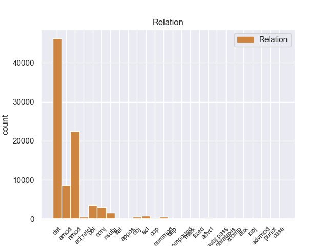
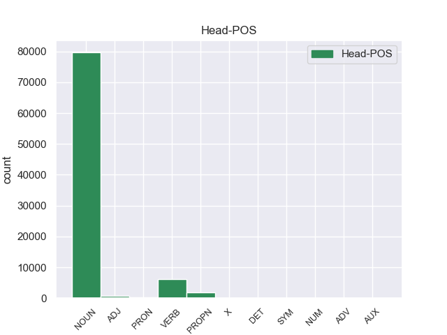
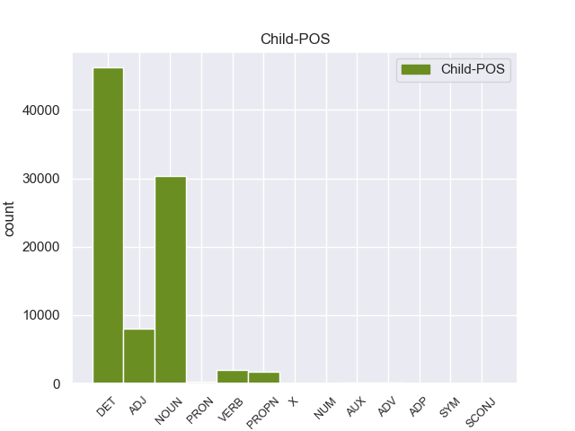

Distribution of features within this leaf



Agreement Rules sorted by frequency.
- When the dependent token is the determiner(det) of the head token, and the dependent token is DET.
1 En _ _ _ _ 0 _ _ _
2 1991 _ _ _ _ 0 _ _ _
3 , _ _ _ _ 0 _ _ _
4 como _ _ _ _ 0 _ _ _
5 ya _ _ _ _ 0 _ _ _
6 está _ _ _ _ 0 _ _ _
7 indicado _ _ _ _ 0 _ _ _
8 en _ _ _ _ 0 _ _ _
9 el _ _ _ _ 0 _ _ _
10 párrafo _ _ _ _ 0 _ _ _
11 anterior _ _ _ _ 0 _ _ _
12 , _ _ _ _ 0 _ _ _
13 se _ _ _ _ 0 _ _ _
14 creó _ _ _ _ 0 _ _ _
15 un _ _ _ _ 0 _ _ _
16 equipo _ _ _ _ 0 _ _ _
17 ad _ _ _ _ 0 _ _ _
18 hoc _ _ _ _ 0 _ _ _
19 para _ _ _ _ 0 _ _ _
20 averiguar _ _ _ _ 0 _ _ _
21 como _ _ _ _ 0 _ _ _
22 se _ _ _ _ 0 _ _ _
23 podía _ _ _ _ 0 _ _ _
24 desarrollar _ _ _ _ 0 _ _ _
25 el _ _ _ _ 0 _ _ _
26 Dialogo _ _ _ _ 0 _ _ _
27 Social _ _ _ _ 0 _ _ _
28 , _ _ _ _ 0 _ _ _
29 este _ _ _ _ 0 _ _ _
30 equipo _ _ _ _ 0 _ _ _
31 estaba _ _ _ _ 0 _ _ _
32 formado _ _ _ _ 0 _ _ _
33 por _ _ _ _ 0 _ _ _
34 representantes _ _ _ _ 0 _ _ _
35 de _ _ _ _ 0 _ _ _
36 todas _ _ _ _ 0 _ _ _
37 las el DET _ Definite=Def|Gender=Fem|Number=Plur|PronType=Art 38 det _ _
38 organizaciones organizacione NOUN _ Gender=Fem|Number=Plur 0 _ _ _
39 relacionadas _ _ _ _ 0 _ _ _
40 con _ _ _ _ 0 _ _ _
41 CES _ _ _ _ 0 _ _ _
42 , _ _ _ _ 0 _ _ _
43 UNICE _ _ _ _ 0 _ _ _
44 y _ _ _ _ 0 _ _ _
45 CEEP _ _ _ _ 0 _ _ _
46 ; _ _ _ _ 0 _ _ _
1 Esta _ _ _ _ 0 _ _ _
2 teoría _ _ _ _ 0 _ _ _
3 se _ _ _ _ 0 _ _ _
4 avenía _ _ _ _ 0 _ _ _
5 bien _ _ _ _ 0 _ _ _
6 con _ _ _ _ 0 _ _ _
7 la _ _ _ _ 0 _ _ _
8 creencia _ _ _ _ 0 _ _ _
9 de _ _ _ _ 0 _ _ _
10 el _ _ _ _ 0 _ _ _
11 Romanticismo _ _ _ _ 0 _ _ _
12 en _ _ _ _ 0 _ _ _
13 un _ _ _ _ 0 _ _ _
14 volkgeist _ _ _ _ 0 _ _ _
15 , _ _ _ _ 0 _ _ _
16 " _ _ _ _ 0 _ _ _
17 genio genio NOUN _ Gender=Masc|Number=Sing 0 _ _ _
18 o _ _ _ _ 0 _ _ _
19 espíritu _ _ _ _ 0 _ _ _
20 de _ _ _ _ 0 _ _ _
21 el _ _ _ _ 0 _ _ _
22 pueblo pueblo NOUN _ Gender=Masc|Number=Sing 17 nmod _ _
23 " _ _ _ _ 0 _ _ _
24 , _ _ _ _ 0 _ _ _
25 autor _ _ _ _ 0 _ _ _
26 colectivo _ _ _ _ 0 _ _ _
27 y _ _ _ _ 0 _ _ _
28 anónimo _ _ _ _ 0 _ _ _
29 de _ _ _ _ 0 _ _ _
30 una _ _ _ _ 0 _ _ _
31 poesía _ _ _ _ 0 _ _ _
32 nacional _ _ _ _ 0 _ _ _
33 . _ _ _ _ 0 _ _ _
1 Esta _ _ _ _ 0 _ _ _
2 teoría _ _ _ _ 0 _ _ _
3 se _ _ _ _ 0 _ _ _
4 avenía _ _ _ _ 0 _ _ _
5 bien _ _ _ _ 0 _ _ _
6 con _ _ _ _ 0 _ _ _
7 la _ _ _ _ 0 _ _ _
8 creencia _ _ _ _ 0 _ _ _
9 de _ _ _ _ 0 _ _ _
10 el _ _ _ _ 0 _ _ _
11 Romanticismo _ _ _ _ 0 _ _ _
12 en _ _ _ _ 0 _ _ _
13 un _ _ _ _ 0 _ _ _
14 volkgeist _ _ _ _ 0 _ _ _
15 , _ _ _ _ 0 _ _ _
16 " _ _ _ _ 0 _ _ _
17 genio _ _ _ _ 0 _ _ _
18 o _ _ _ _ 0 _ _ _
19 espíritu _ _ _ _ 0 _ _ _
20 de _ _ _ _ 0 _ _ _
21 el _ _ _ _ 0 _ _ _
22 pueblo _ _ _ _ 0 _ _ _
23 " _ _ _ _ 0 _ _ _
24 , _ _ _ _ 0 _ _ _
25 autor autor NOUN _ Gender=Masc|Number=Sing 0 _ _ _
26 colectivo _ _ _ _ 0 _ _ _
27 y _ _ _ _ 0 _ _ _
28 anónimo anónimo ADJ _ Gender=Masc|Number=Sing 25 amod _ _
29 de _ _ _ _ 0 _ _ _
30 una _ _ _ _ 0 _ _ _
31 poesía _ _ _ _ 0 _ _ _
32 nacional _ _ _ _ 0 _ _ _
33 . _ _ _ _ 0 _ _ _
1 En _ _ _ _ 0 _ _ _
2 1991 _ _ _ _ 0 _ _ _
3 , _ _ _ _ 0 _ _ _
4 como _ _ _ _ 0 _ _ _
5 ya _ _ _ _ 0 _ _ _
6 está _ _ _ _ 0 _ _ _
7 indicado indicado VERB _ Gender=Masc|Number=Sing|VerbForm=Part 0 _ _ _
8 en _ _ _ _ 0 _ _ _
9 el _ _ _ _ 0 _ _ _
10 párrafo párrafo NOUN _ Gender=Masc|Number=Sing 7 obl _ _
11 anterior _ _ _ _ 0 _ _ _
12 , _ _ _ _ 0 _ _ _
13 se _ _ _ _ 0 _ _ _
14 creó _ _ _ _ 0 _ _ _
15 un _ _ _ _ 0 _ _ _
16 equipo _ _ _ _ 0 _ _ _
17 ad _ _ _ _ 0 _ _ _
18 hoc _ _ _ _ 0 _ _ _
19 para _ _ _ _ 0 _ _ _
20 averiguar _ _ _ _ 0 _ _ _
21 como _ _ _ _ 0 _ _ _
22 se _ _ _ _ 0 _ _ _
23 podía _ _ _ _ 0 _ _ _
24 desarrollar _ _ _ _ 0 _ _ _
25 el _ _ _ _ 0 _ _ _
26 Dialogo _ _ _ _ 0 _ _ _
27 Social _ _ _ _ 0 _ _ _
28 , _ _ _ _ 0 _ _ _
29 este _ _ _ _ 0 _ _ _
30 equipo _ _ _ _ 0 _ _ _
31 estaba _ _ _ _ 0 _ _ _
32 formado _ _ _ _ 0 _ _ _
33 por _ _ _ _ 0 _ _ _
34 representantes _ _ _ _ 0 _ _ _
35 de _ _ _ _ 0 _ _ _
36 todas _ _ _ _ 0 _ _ _
37 las _ _ _ _ 0 _ _ _
38 organizaciones _ _ _ _ 0 _ _ _
39 relacionadas _ _ _ _ 0 _ _ _
40 con _ _ _ _ 0 _ _ _
41 CES _ _ _ _ 0 _ _ _
42 , _ _ _ _ 0 _ _ _
43 UNICE _ _ _ _ 0 _ _ _
44 y _ _ _ _ 0 _ _ _
45 CEEP _ _ _ _ 0 _ _ _
46 ; _ _ _ _ 0 _ _ _
1 Esta _ _ _ _ 0 _ _ _
2 teoría _ _ _ _ 0 _ _ _
3 se _ _ _ _ 0 _ _ _
4 avenía _ _ _ _ 0 _ _ _
5 bien _ _ _ _ 0 _ _ _
6 con _ _ _ _ 0 _ _ _
7 la _ _ _ _ 0 _ _ _
8 creencia _ _ _ _ 0 _ _ _
9 de _ _ _ _ 0 _ _ _
10 el _ _ _ _ 0 _ _ _
11 Romanticismo _ _ _ _ 0 _ _ _
12 en _ _ _ _ 0 _ _ _
13 un _ _ _ _ 0 _ _ _
14 volkgeist _ _ _ _ 0 _ _ _
15 , _ _ _ _ 0 _ _ _
16 " _ _ _ _ 0 _ _ _
17 genio _ _ _ _ 0 _ _ _
18 o _ _ _ _ 0 _ _ _
19 espíritu espíritu NOUN _ Gender=Masc|Number=Sing 0 _ _ _
20 de _ _ _ _ 0 _ _ _
21 el _ _ _ _ 0 _ _ _
22 pueblo _ _ _ _ 0 _ _ _
23 " _ _ _ _ 0 _ _ _
24 , _ _ _ _ 0 _ _ _
25 autor autor NOUN _ Gender=Masc|Number=Sing 19 conj _ _
26 colectivo _ _ _ _ 0 _ _ _
27 y _ _ _ _ 0 _ _ _
28 anónimo _ _ _ _ 0 _ _ _
29 de _ _ _ _ 0 _ _ _
30 una _ _ _ _ 0 _ _ _
31 poesía _ _ _ _ 0 _ _ _
32 nacional _ _ _ _ 0 _ _ _
33 . _ _ _ _ 0 _ _ _
1 En _ _ _ _ 0 _ _ _
2 1991 _ _ _ _ 0 _ _ _
3 , _ _ _ _ 0 _ _ _
4 como _ _ _ _ 0 _ _ _
5 ya _ _ _ _ 0 _ _ _
6 está _ _ _ _ 0 _ _ _
7 indicado _ _ _ _ 0 _ _ _
8 en _ _ _ _ 0 _ _ _
9 el _ _ _ _ 0 _ _ _
10 párrafo _ _ _ _ 0 _ _ _
11 anterior _ _ _ _ 0 _ _ _
12 , _ _ _ _ 0 _ _ _
13 se _ _ _ _ 0 _ _ _
14 creó _ _ _ _ 0 _ _ _
15 un _ _ _ _ 0 _ _ _
16 equipo _ _ _ _ 0 _ _ _
17 ad _ _ _ _ 0 _ _ _
18 hoc _ _ _ _ 0 _ _ _
19 para _ _ _ _ 0 _ _ _
20 averiguar _ _ _ _ 0 _ _ _
21 como _ _ _ _ 0 _ _ _
22 se _ _ _ _ 0 _ _ _
23 podía _ _ _ _ 0 _ _ _
24 desarrollar _ _ _ _ 0 _ _ _
25 el _ _ _ _ 0 _ _ _
26 Dialogo _ _ _ _ 0 _ _ _
27 Social _ _ _ _ 0 _ _ _
28 , _ _ _ _ 0 _ _ _
29 este _ _ _ _ 0 _ _ _
30 equipo equipo NOUN _ Gender=Masc|Number=Sing 32 nsubj _ _
31 estaba _ _ _ _ 0 _ _ _
32 formado formado VERB _ Gender=Masc|Number=Sing|VerbForm=Part 0 _ _ _
33 por _ _ _ _ 0 _ _ _
34 representantes _ _ _ _ 0 _ _ _
35 de _ _ _ _ 0 _ _ _
36 todas _ _ _ _ 0 _ _ _
37 las _ _ _ _ 0 _ _ _
38 organizaciones _ _ _ _ 0 _ _ _
39 relacionadas _ _ _ _ 0 _ _ _
40 con _ _ _ _ 0 _ _ _
41 CES _ _ _ _ 0 _ _ _
42 , _ _ _ _ 0 _ _ _
43 UNICE _ _ _ _ 0 _ _ _
44 y _ _ _ _ 0 _ _ _
45 CEEP _ _ _ _ 0 _ _ _
46 ; _ _ _ _ 0 _ _ _
1 Joramun _ _ _ _ 0 _ _ _
2 se _ _ _ _ 0 _ _ _
3 supone _ _ _ _ 0 _ _ _
4 que _ _ _ _ 0 _ _ _
5 era _ _ _ _ 0 _ _ _
6 un _ _ _ _ 0 _ _ _
7 legendario legendario NOUN _ Gender=Masc|Number=Sing 8 amod _ _
8 Rey rey NOUN _ Gender=Masc|Number=Sing 0 _ _ _
9 - _ _ _ _ 0 _ _ _
10 Más _ _ _ _ 0 _ _ _
11 - _ _ _ _ 0 _ _ _
12 Allá _ _ _ _ 0 _ _ _
13 - _ _ _ _ 0 _ _ _
14 de _ _ _ _ 0 _ _ _
15 el _ _ _ _ 0 _ _ _
16 - _ _ _ _ 0 _ _ _
17 Muro _ _ _ _ 0 _ _ _
18 , _ _ _ _ 0 _ _ _
19 a _ _ _ _ 0 _ _ _
20 el _ _ _ _ 0 _ _ _
21 norte _ _ _ _ 0 _ _ _
22 de _ _ _ _ 0 _ _ _
23 los _ _ _ _ 0 _ _ _
24 Siete _ _ _ _ 0 _ _ _
25 Reinos _ _ _ _ 0 _ _ _
26 . _ _ _ _ 0 _ _ _
1 De _ _ _ _ 0 _ _ _
2 los _ _ _ _ 0 _ _ _
3 714 _ _ _ _ 0 _ _ _
4 habitantes _ _ _ _ 0 _ _ _
5 , _ _ _ _ 0 _ _ _
6 el _ _ _ _ 0 _ _ _
7 municipio _ _ _ _ 0 _ _ _
8 de _ _ _ _ 0 _ _ _
9 Daggett _ _ _ _ 0 _ _ _
10 estaba _ _ _ _ 0 _ _ _
11 compuesto _ _ _ _ 0 _ _ _
12 por _ _ _ _ 0 _ _ _
13 el _ _ _ _ 0 _ _ _
14 93.28 _ _ _ _ 0 _ _ _
15 % _ _ _ _ 0 _ _ _
16 blancos _ _ _ _ 0 _ _ _
17 , _ _ _ _ 0 _ _ _
18 el _ _ _ _ 0 _ _ _
19 2.38 _ _ _ _ 0 _ _ _
20 % _ _ _ _ 0 _ _ _
21 eran _ _ _ _ 0 _ _ _
22 afroamericanos _ _ _ _ 0 _ _ _
23 , _ _ _ _ 0 _ _ _
24 el _ _ _ _ 0 _ _ _
25 0.84 _ _ _ _ 0 _ _ _
26 % _ _ _ _ 0 _ _ _
27 eran _ _ _ _ 0 _ _ _
28 amerindios _ _ _ _ 0 _ _ _
29 , _ _ _ _ 0 _ _ _
30 el _ _ _ _ 0 _ _ _
31 0.56 _ _ _ _ 0 _ _ _
32 % _ _ _ _ 0 _ _ _
33 eran _ _ _ _ 0 _ _ _
34 asiáticos _ _ _ _ 0 _ _ _
35 , _ _ _ _ 0 _ _ _
36 el _ _ _ _ 0 _ _ _
37 0 _ _ _ _ 0 _ _ _
38 % _ _ _ _ 0 _ _ _
39 eran _ _ _ _ 0 _ _ _
40 isleños isleños NOUN _ Gender=Masc|Number=Plur 0 _ _ _
41 de _ _ _ _ 0 _ _ _
42 el _ _ _ _ 0 _ _ _
43 Pacífico pacífico PROPN _ Gender=Masc|Number=Sing 40 nmod _ _
44 , _ _ _ _ 0 _ _ _
45 el _ _ _ _ 0 _ _ _
46 0.84 _ _ _ _ 0 _ _ _
47 % _ _ _ _ 0 _ _ _
48 eran _ _ _ _ 0 _ _ _
49 de _ _ _ _ 0 _ _ _
50 otras _ _ _ _ 0 _ _ _
51 razas _ _ _ _ 0 _ _ _
52 y _ _ _ _ 0 _ _ _
53 el _ _ _ _ 0 _ _ _
54 2.1 _ _ _ _ 0 _ _ _
55 % _ _ _ _ 0 _ _ _
56 pertenecían _ _ _ _ 0 _ _ _
57 a _ _ _ _ 0 _ _ _
58 dos _ _ _ _ 0 _ _ _
59 o _ _ _ _ 0 _ _ _
60 más _ _ _ _ 0 _ _ _
61 razas _ _ _ _ 0 _ _ _
62 . _ _ _ _ 0 _ _ _
1 En _ _ _ _ 0 _ _ _
2 1991 _ _ _ _ 0 _ _ _
3 , _ _ _ _ 0 _ _ _
4 como _ _ _ _ 0 _ _ _
5 ya _ _ _ _ 0 _ _ _
6 está _ _ _ _ 0 _ _ _
7 indicado _ _ _ _ 0 _ _ _
8 en _ _ _ _ 0 _ _ _
9 el _ _ _ _ 0 _ _ _
10 párrafo _ _ _ _ 0 _ _ _
11 anterior _ _ _ _ 0 _ _ _
12 , _ _ _ _ 0 _ _ _
13 se _ _ _ _ 0 _ _ _
14 creó _ _ _ _ 0 _ _ _
15 un _ _ _ _ 0 _ _ _
16 equipo _ _ _ _ 0 _ _ _
17 ad _ _ _ _ 0 _ _ _
18 hoc _ _ _ _ 0 _ _ _
19 para _ _ _ _ 0 _ _ _
20 averiguar _ _ _ _ 0 _ _ _
21 como _ _ _ _ 0 _ _ _
22 se _ _ _ _ 0 _ _ _
23 podía _ _ _ _ 0 _ _ _
24 desarrollar _ _ _ _ 0 _ _ _
25 el _ _ _ _ 0 _ _ _
26 Dialogo _ _ _ _ 0 _ _ _
27 Social _ _ _ _ 0 _ _ _
28 , _ _ _ _ 0 _ _ _
29 este _ _ _ _ 0 _ _ _
30 equipo _ _ _ _ 0 _ _ _
31 estaba _ _ _ _ 0 _ _ _
32 formado formado VERB _ Gender=Masc|Number=Sing|VerbForm=Part 34 acl _ _
33 por _ _ _ _ 0 _ _ _
34 representantes representante NOUN _ Gender=Masc|Number=Plur 0 _ _ _
35 de _ _ _ _ 0 _ _ _
36 todas _ _ _ _ 0 _ _ _
37 las _ _ _ _ 0 _ _ _
38 organizaciones _ _ _ _ 0 _ _ _
39 relacionadas _ _ _ _ 0 _ _ _
40 con _ _ _ _ 0 _ _ _
41 CES _ _ _ _ 0 _ _ _
42 , _ _ _ _ 0 _ _ _
43 UNICE _ _ _ _ 0 _ _ _
44 y _ _ _ _ 0 _ _ _
45 CEEP _ _ _ _ 0 _ _ _
46 ; _ _ _ _ 0 _ _ _
1 En _ _ _ _ 0 _ _ _
2 1991 _ _ _ _ 0 _ _ _
3 , _ _ _ _ 0 _ _ _
4 como _ _ _ _ 0 _ _ _
5 ya _ _ _ _ 0 _ _ _
6 está _ _ _ _ 0 _ _ _
7 indicado indicado VERB _ Gender=Masc|Number=Sing|VerbForm=Part 16 acl:relcl _ _
8 en _ _ _ _ 0 _ _ _
9 el _ _ _ _ 0 _ _ _
10 párrafo _ _ _ _ 0 _ _ _
11 anterior _ _ _ _ 0 _ _ _
12 , _ _ _ _ 0 _ _ _
13 se _ _ _ _ 0 _ _ _
14 creó _ _ _ _ 0 _ _ _
15 un _ _ _ _ 0 _ _ _
16 equipo equipo NOUN _ Gender=Masc|Number=Sing 0 _ _ _
17 ad _ _ _ _ 0 _ _ _
18 hoc _ _ _ _ 0 _ _ _
19 para _ _ _ _ 0 _ _ _
20 averiguar _ _ _ _ 0 _ _ _
21 como _ _ _ _ 0 _ _ _
22 se _ _ _ _ 0 _ _ _
23 podía _ _ _ _ 0 _ _ _
24 desarrollar _ _ _ _ 0 _ _ _
25 el _ _ _ _ 0 _ _ _
26 Dialogo _ _ _ _ 0 _ _ _
27 Social _ _ _ _ 0 _ _ _
28 , _ _ _ _ 0 _ _ _
29 este _ _ _ _ 0 _ _ _
30 equipo _ _ _ _ 0 _ _ _
31 estaba _ _ _ _ 0 _ _ _
32 formado _ _ _ _ 0 _ _ _
33 por _ _ _ _ 0 _ _ _
34 representantes _ _ _ _ 0 _ _ _
35 de _ _ _ _ 0 _ _ _
36 todas _ _ _ _ 0 _ _ _
37 las _ _ _ _ 0 _ _ _
38 organizaciones _ _ _ _ 0 _ _ _
39 relacionadas _ _ _ _ 0 _ _ _
40 con _ _ _ _ 0 _ _ _
41 CES _ _ _ _ 0 _ _ _
42 , _ _ _ _ 0 _ _ _
43 UNICE _ _ _ _ 0 _ _ _
44 y _ _ _ _ 0 _ _ _
45 CEEP _ _ _ _ 0 _ _ _
46 ; _ _ _ _ 0 _ _ _
1 Por _ _ _ _ 0 _ _ _
2 otro _ _ _ _ 0 _ _ _
3 lado _ _ _ _ 0 _ _ _
4 , _ _ _ _ 0 _ _ _
5 se _ _ _ _ 0 _ _ _
6 incorporó _ _ _ _ 0 _ _ _
7 a _ _ _ _ 0 _ _ _
8 el _ _ _ _ 0 _ _ _
9 economista _ _ _ _ 0 _ _ _
10 Domingo _ _ _ _ 0 _ _ _
11 Cavallo _ _ _ _ 0 _ _ _
12 en _ _ _ _ 0 _ _ _
13 el _ _ _ _ 0 _ _ _
14 tercer tercer NOUN _ Gender=Masc|Number=Sing 15 nummod _ _
15 lugar lugar NOUN _ Gender=Masc|Number=Sing 0 _ _ _
16 de _ _ _ _ 0 _ _ _
17 la _ _ _ _ 0 _ _ _
18 nómina _ _ _ _ 0 _ _ _
19 de _ _ _ _ 0 _ _ _
20 candidatos _ _ _ _ 0 _ _ _
21 a _ _ _ _ 0 _ _ _
22 diputados _ _ _ _ 0 _ _ _
23 nacionales _ _ _ _ 0 _ _ _
24 . _ _ _ _ 0 _ _ _
1 La _ _ _ _ 0 _ _ _
2 primera _ _ _ _ 0 _ _ _
3 vez _ _ _ _ 0 _ _ _
4 , _ _ _ _ 0 _ _ _
5 tenía _ _ _ _ 0 _ _ _
6 un _ _ _ _ 0 _ _ _
7 presupuesto _ _ _ _ 0 _ _ _
8 de _ _ _ _ 0 _ _ _
9 700 _ _ _ _ 0 _ _ _
10 € _ _ _ _ 0 _ _ _
11 en _ _ _ _ 0 _ _ _
12 el _ _ _ _ 0 _ _ _
13 servicio _ _ _ _ 0 _ _ _
14 oficial _ _ _ _ 0 _ _ _
15 ( _ _ _ _ 0 _ _ _
16 te _ _ _ _ 0 _ _ _
17 lo _ _ _ _ 0 _ _ _
18 cambio cambio VERB _ Gender=Masc|Number=Sing 0 _ _ _
19 todo _ _ _ _ 0 _ _ _
20 y _ _ _ _ 0 _ _ _
21 soluciono _ _ _ _ 0 _ _ _
22 el _ _ _ _ 0 _ _ _
23 problema problema NOUN _ Gender=Masc|Number=Sing 18 obj _ _
24 ) _ _ _ _ 0 _ _ _
25 , _ _ _ _ 0 _ _ _
26 y _ _ _ _ 0 _ _ _
27 en _ _ _ _ 0 _ _ _
28 Pinauto _ _ _ _ 0 _ _ _
29 me _ _ _ _ 0 _ _ _
30 lo _ _ _ _ 0 _ _ _
31 solucionaron _ _ _ _ 0 _ _ _
32 por _ _ _ _ 0 _ _ _
33 unos _ _ _ _ 0 _ _ _
34 200 _ _ _ _ 0 _ _ _
35 € _ _ _ _ 0 _ _ _
36 , _ _ _ _ 0 _ _ _
37 cambiando _ _ _ _ 0 _ _ _
38 sólo _ _ _ _ 0 _ _ _
39 lo _ _ _ _ 0 _ _ _
40 necesario _ _ _ _ 0 _ _ _
41 . _ _ _ _ 0 _ _ _
1 Jazmin _ _ _ _ 0 _ _ _
2 es _ _ _ _ 0 _ _ _
3 todo _ _ _ _ 0 _ _ _
4 lo _ _ _ _ 0 _ _ _
5 contrario _ _ _ _ 0 _ _ _
6 , _ _ _ _ 0 _ _ _
7 es _ _ _ _ 0 _ _ _
8 tímida tímida ADJ _ Gender=Masc|Number=Sing 0 _ _ _
9 y _ _ _ _ 0 _ _ _
10 callada callada ADJ _ Gender=Masc|Number=Sing 8 conj _ _
11 , _ _ _ _ 0 _ _ _
12 pero _ _ _ _ 0 _ _ _
13 siempre _ _ _ _ 0 _ _ _
14 es _ _ _ _ 0 _ _ _
15 arrastrada _ _ _ _ 0 _ _ _
16 por _ _ _ _ 0 _ _ _
17 las _ _ _ _ 0 _ _ _
18 locuras _ _ _ _ 0 _ _ _
19 y _ _ _ _ 0 _ _ _
20 travesuras _ _ _ _ 0 _ _ _
21 que _ _ _ _ 0 _ _ _
22 inventa _ _ _ _ 0 _ _ _
23 Alma _ _ _ _ 0 _ _ _
24 . _ _ _ _ 0 _ _ _
1 Fue _ _ _ _ 0 _ _ _
2 escrita escrita VERB _ Gender=Fem|Number=Sing|VerbForm=Part 0 _ _ _
3 y _ _ _ _ 0 _ _ _
4 dirigida dirigida VERB _ Gender=Fem|Number=Sing|VerbForm=Part 2 advcl _ _
5 por _ _ _ _ 0 _ _ _
6 Hugo _ _ _ _ 0 _ _ _
7 Moser _ _ _ _ 0 _ _ _
8 , _ _ _ _ 0 _ _ _
9 para _ _ _ _ 0 _ _ _
10 quien _ _ _ _ 0 _ _ _
11 fue _ _ _ _ 0 _ _ _
12 su _ _ _ _ 0 _ _ _
13 primer _ _ _ _ 0 _ _ _
14 gran _ _ _ _ 0 _ _ _
15 éxito _ _ _ _ 0 _ _ _
16 . _ _ _ _ 0 _ _ _
1 Jazmin _ _ _ _ 0 _ _ _
2 es _ _ _ _ 0 _ _ _
3 todo _ _ _ _ 0 _ _ _
4 lo lo PRON _ Case=Acc|Gender=Masc|Number=Sing|Person=3|PrepCase=Npr|PronType=Prs 5 det _ _
5 contrario contrario ADJ _ Gender=Masc|Number=Sing 0 _ _ _
6 , _ _ _ _ 0 _ _ _
7 es _ _ _ _ 0 _ _ _
8 tímida _ _ _ _ 0 _ _ _
9 y _ _ _ _ 0 _ _ _
10 callada _ _ _ _ 0 _ _ _
11 , _ _ _ _ 0 _ _ _
12 pero _ _ _ _ 0 _ _ _
13 siempre _ _ _ _ 0 _ _ _
14 es _ _ _ _ 0 _ _ _
15 arrastrada _ _ _ _ 0 _ _ _
16 por _ _ _ _ 0 _ _ _
17 las _ _ _ _ 0 _ _ _
18 locuras _ _ _ _ 0 _ _ _
19 y _ _ _ _ 0 _ _ _
20 travesuras _ _ _ _ 0 _ _ _
21 que _ _ _ _ 0 _ _ _
22 inventa _ _ _ _ 0 _ _ _
23 Alma _ _ _ _ 0 _ _ _
24 . _ _ _ _ 0 _ _ _
1 Tahai _ _ _ _ 0 _ _ _
2 es _ _ _ _ 0 _ _ _
3 uno uno PRON _ Definite=Ind|Gender=Masc|Number=Sing|PronType=Art 0 _ _ _
4 de _ _ _ _ 0 _ _ _
5 los _ _ _ _ 0 _ _ _
6 lugares _ _ _ _ 0 _ _ _
7 más _ _ _ _ 0 _ _ _
8 lindos _ _ _ _ 0 _ _ _
9 de _ _ _ _ 0 _ _ _
10 la _ _ _ _ 0 _ _ _
11 isla _ _ _ _ 0 _ _ _
12 , _ _ _ _ 0 _ _ _
13 y _ _ _ _ 0 _ _ _
14 estar _ _ _ _ 0 _ _ _
15 hospedado hospedado VERB _ Gender=Masc|Number=Sing|VerbForm=Part 3 conj _ _
16 en _ _ _ _ 0 _ _ _
17 pleno _ _ _ _ 0 _ _ _
18 mirador _ _ _ _ 0 _ _ _
19 es _ _ _ _ 0 _ _ _
20 increíble _ _ _ _ 0 _ _ _
21 . _ _ _ _ 0 _ _ _
1 La _ _ _ _ 0 _ _ _
2 idea _ _ _ _ 0 _ _ _
3 inicial _ _ _ _ 0 _ _ _
4 de _ _ _ _ 0 _ _ _
5 este _ _ _ _ 0 _ _ _
6 tercer tercer ADJ _ Gender=Masc|Number=Sing 7 nummod _ _
7 libro libro NOUN _ Gender=Masc|Number=Sing 0 _ _ _
8 era _ _ _ _ 0 _ _ _
9 hacer _ _ _ _ 0 _ _ _
10 una _ _ _ _ 0 _ _ _
11 obra _ _ _ _ 0 _ _ _
12 " _ _ _ _ 0 _ _ _
13 para _ _ _ _ 0 _ _ _
14 compartir _ _ _ _ 0 _ _ _
15 con _ _ _ _ 0 _ _ _
16 los _ _ _ _ 0 _ _ _
17 colegas _ _ _ _ 0 _ _ _
18 de _ _ _ _ 0 _ _ _
19 profesión _ _ _ _ 0 _ _ _
20 " _ _ _ _ 0 _ _ _
21 , _ _ _ _ 0 _ _ _
22 y _ _ _ _ 0 _ _ _
23 de _ _ _ _ 0 _ _ _
24 ahí _ _ _ _ 0 _ _ _
25 que _ _ _ _ 0 _ _ _
26 en _ _ _ _ 0 _ _ _
27 las _ _ _ _ 0 _ _ _
28 cantidades _ _ _ _ 0 _ _ _
29 de _ _ _ _ 0 _ _ _
30 los _ _ _ _ 0 _ _ _
31 ingredientes _ _ _ _ 0 _ _ _
32 se _ _ _ _ 0 _ _ _
33 incluya _ _ _ _ 0 _ _ _
34 la _ _ _ _ 0 _ _ _
35 versión _ _ _ _ 0 _ _ _
36 para _ _ _ _ 0 _ _ _
37 75 _ _ _ _ 0 _ _ _
38 comensales _ _ _ _ 0 _ _ _
39 , _ _ _ _ 0 _ _ _
40 pero _ _ _ _ 0 _ _ _
41 luego _ _ _ _ 0 _ _ _
42 se _ _ _ _ 0 _ _ _
43 cambió _ _ _ _ 0 _ _ _
44 a _ _ _ _ 0 _ _ _
45 la _ _ _ _ 0 _ _ _
46 dimensión _ _ _ _ 0 _ _ _
47 familiar _ _ _ _ 0 _ _ _
48 ( _ _ _ _ 0 _ _ _
49 2 _ _ _ _ 0 _ _ _
50 y _ _ _ _ 0 _ _ _
51 6 _ _ _ _ 0 _ _ _
52 personas _ _ _ _ 0 _ _ _
53 ) _ _ _ _ 0 _ _ _
54 . _ _ _ _ 0 _ _ _
1 Con _ _ _ _ 0 _ _ _
2 miras _ _ _ _ 0 _ _ _
3 a _ _ _ _ 0 _ _ _
4 minimizar _ _ _ _ 0 _ _ _
5 cualquier _ _ _ _ 0 _ _ _
6 confusión _ _ _ _ 0 _ _ _
7 con _ _ _ _ 0 _ _ _
8 una _ _ _ _ 0 _ _ _
9 religión _ _ _ _ 0 _ _ _
10 , _ _ _ _ 0 _ _ _
11 el _ _ _ _ 0 _ _ _
12 uso _ _ _ _ 0 _ _ _
13 de _ _ _ _ 0 _ _ _
14 la _ _ _ _ 0 _ _ _
15 palabra _ _ _ _ 0 _ _ _
16 " _ _ _ _ 0 _ _ _
17 templo _ _ _ _ 0 _ _ _
18 " _ _ _ _ 0 _ _ _
19 para _ _ _ _ 0 _ _ _
20 describir _ _ _ _ 0 _ _ _
21 los _ _ _ _ 0 _ _ _
22 inmuebles _ _ _ _ 0 _ _ _
23 de _ _ _ _ 0 _ _ _
24 los _ _ _ _ 0 _ _ _
25 Shriners _ _ _ _ 0 _ _ _
26 ha _ _ _ _ 0 _ _ _
27 sido ser AUX _ Gender=Masc|Number=Sing|Tense=Past|VerbForm=Part 28 cop _ _
28 reemplazado reemplazado VERB _ Gender=Masc|Number=Sing|Tense=Past|VerbForm=Part 0 _ _ _
29 por _ _ _ _ 0 _ _ _
30 la _ _ _ _ 0 _ _ _
31 frase _ _ _ _ 0 _ _ _
32 " _ _ _ _ 0 _ _ _
33 Centro _ _ _ _ 0 _ _ _
34 Shriner _ _ _ _ 0 _ _ _
35 " _ _ _ _ 0 _ _ _
36 , _ _ _ _ 0 _ _ _
37 aunque _ _ _ _ 0 _ _ _
38 en _ _ _ _ 0 _ _ _
39 capítulos _ _ _ _ 0 _ _ _
40 individuales _ _ _ _ 0 _ _ _
41 siguen _ _ _ _ 0 _ _ _
42 siendo _ _ _ _ 0 _ _ _
43 nombrados _ _ _ _ 0 _ _ _
44 como _ _ _ _ 0 _ _ _
45 " _ _ _ _ 0 _ _ _
46 templos _ _ _ _ 0 _ _ _
47 " _ _ _ _ 0 _ _ _
48 . _ _ _ _ 0 _ _ _
1 El _ _ _ _ 0 _ _ _
2 producto _ _ _ _ 0 _ _ _
3 estrella _ _ _ _ 0 _ _ _
4 de _ _ _ _ 0 _ _ _
5 el _ _ _ _ 0 _ _ _
6 lujoso _ _ _ _ 0 _ _ _
7 Haikko _ _ _ _ 0 _ _ _
8 Spa _ _ _ _ 0 _ _ _
9 , _ _ _ _ 0 _ _ _
10 situado _ _ _ _ 0 _ _ _
11 en _ _ _ _ 0 _ _ _
12 la _ _ _ _ 0 _ _ _
13 localidad _ _ _ _ 0 _ _ _
14 de _ _ _ _ 0 _ _ _
15 Porvoo _ _ _ _ 0 _ _ _
16 , _ _ _ _ 0 _ _ _
17 es _ _ _ _ 0 _ _ _
18 la _ _ _ _ 0 _ _ _
19 terapia _ _ _ _ 0 _ _ _
20 Cryo _ _ _ _ 0 _ _ _
21 : _ _ _ _ 0 _ _ _
22 el _ _ _ _ 0 _ _ _
23 cuerpo _ _ _ _ 0 _ _ _
24 se _ _ _ _ 0 _ _ _
25 somete _ _ _ _ 0 _ _ _
26 durante _ _ _ _ 0 _ _ _
27 los _ _ _ _ 0 _ _ _
28 primeros _ _ _ _ 0 _ _ _
29 minutos _ _ _ _ 0 _ _ _
30 a _ _ _ _ 0 _ _ _
31 temperaturas _ _ _ _ 0 _ _ _
32 de _ _ _ _ 0 _ _ _
33 -- _ _ _ _ 0 _ _ _
34 30 _ _ _ _ 0 _ _ _
35 y _ _ _ _ 0 _ _ _
36 -- _ _ _ _ 0 _ _ _
37 60 _ _ _ _ 0 _ _ _
38 º _ _ _ _ 0 _ _ _
39 C _ _ _ _ 0 _ _ _
40 en _ _ _ _ 0 _ _ _
41 las _ _ _ _ 0 _ _ _
42 salas _ _ _ _ 0 _ _ _
43 aisladas _ _ _ _ 0 _ _ _
44 antes _ _ _ _ 0 _ _ _
45 de _ _ _ _ 0 _ _ _
46 exponer _ _ _ _ 0 _ _ _
47 se _ _ _ _ 0 _ _ _
48 a _ _ _ _ 0 _ _ _
49 el _ _ _ _ 0 _ _ _
50 tratamiento _ _ _ _ 0 _ _ _
51 de _ _ _ _ 0 _ _ _
52 frío _ _ _ _ 0 _ _ _
53 a _ _ _ _ 0 _ _ _
54 -110 _ _ _ _ 0 _ _ _
55 º _ _ _ _ 0 _ _ _
56 C. _ _ _ _ 0 _ _ _
57 Desde _ _ _ _ 0 _ _ _
58 la _ _ _ _ 0 _ _ _
59 primera _ _ _ _ 0 _ _ _
60 sesión _ _ _ _ 0 _ _ _
61 se _ _ _ _ 0 _ _ _
62 percibe _ _ _ _ 0 _ _ _
63 el _ _ _ _ 0 _ _ _
64 aporte aporte NOUN _ Gender=Masc|Number=Sing 0 _ _ _
65 de _ _ _ _ 0 _ _ _
66 energía _ _ _ _ 0 _ _ _
67 resultado resultado ADJ _ Gender=Masc|Number=Sing 64 acl _ _
68 de _ _ _ _ 0 _ _ _
69 la _ _ _ _ 0 _ _ _
70 reducción _ _ _ _ 0 _ _ _
71 de _ _ _ _ 0 _ _ _
72 tensión _ _ _ _ 0 _ _ _
73 muscular _ _ _ _ 0 _ _ _
74 y _ _ _ _ 0 _ _ _
75 el _ _ _ _ 0 _ _ _
76 alivio _ _ _ _ 0 _ _ _
77 de _ _ _ _ 0 _ _ _
78 dolores _ _ _ _ 0 _ _ _
79 y _ _ _ _ 0 _ _ _
80 enfermedades _ _ _ _ 0 _ _ _
81 . _ _ _ _ 0 _ _ _
1 Ese _ _ _ _ 0 _ _ _
2 mismo mismo DET _ Gender=Masc|Number=Sing 3 amod _ _
3 año año NOUN _ Gender=Masc|Number=Sing 0 _ _ _
4 participó _ _ _ _ 0 _ _ _
5 con _ _ _ _ 0 _ _ _
6 el _ _ _ _ 0 _ _ _
7 equipo _ _ _ _ 0 _ _ _
8 ruso _ _ _ _ 0 _ _ _
9 en _ _ _ _ 0 _ _ _
10 la _ _ _ _ 0 _ _ _
11 Olimpiada _ _ _ _ 0 _ _ _
12 de _ _ _ _ 0 _ _ _
13 Ajedrez _ _ _ _ 0 _ _ _
14 de _ _ _ _ 0 _ _ _
15 Estambul _ _ _ _ 0 _ _ _
16 y _ _ _ _ 0 _ _ _
17 obtuvo _ _ _ _ 0 _ _ _
18 la _ _ _ _ 0 _ _ _
19 medalla _ _ _ _ 0 _ _ _
20 de _ _ _ _ 0 _ _ _
21 bronce _ _ _ _ 0 _ _ _
22 en _ _ _ _ 0 _ _ _
23 tanto _ _ _ _ 0 _ _ _
24 que _ _ _ _ 0 _ _ _
25 mejor _ _ _ _ 0 _ _ _
26 segunda _ _ _ _ 0 _ _ _
27 jugador _ _ _ _ 0 _ _ _
28 reservista _ _ _ _ 0 _ _ _
29 de _ _ _ _ 0 _ _ _
30 el _ _ _ _ 0 _ _ _
31 torneo _ _ _ _ 0 _ _ _
32 ( _ _ _ _ 0 _ _ _
33 los _ _ _ _ 0 _ _ _
34 equipos _ _ _ _ 0 _ _ _
35 estaban _ _ _ _ 0 _ _ _
36 formados _ _ _ _ 0 _ _ _
37 por _ _ _ _ 0 _ _ _
38 cuatro _ _ _ _ 0 _ _ _
39 jugadores _ _ _ _ 0 _ _ _
40 titulares _ _ _ _ 0 _ _ _
41 y _ _ _ _ 0 _ _ _
42 dos _ _ _ _ 0 _ _ _
43 reservas _ _ _ _ 0 _ _ _
44 ) _ _ _ _ 0 _ _ _
45 . _ _ _ _ 0 _ _ _
1 Un _ _ _ _ 0 _ _ _
2 buen _ _ _ _ 0 _ _ _
3 almacén _ _ _ _ 0 _ _ _
4 de _ _ _ _ 0 _ _ _
5 maderas _ _ _ _ 0 _ _ _
6 con _ _ _ _ 0 _ _ _
7 mucha _ _ _ _ 0 _ _ _
8 variedad _ _ _ _ 0 _ _ _
9 y _ _ _ _ 0 _ _ _
10 muy _ _ _ _ 0 _ _ _
11 bien bien ADV _ Gender=Masc|Number=Sing 12 advmod _ _
12 atendido atendido VERB _ Gender=Masc|Number=Sing 0 _ _ _
13 . _ _ _ _ 0 _ _ _
1 Don _ _ _ _ 0 _ _ _
2 Diego _ _ _ _ 0 _ _ _
3 de _ _ _ _ 0 _ _ _
4 Montemayor _ _ _ _ 0 _ _ _
5 es _ _ _ _ 0 _ _ _
6 considerado _ _ _ _ 0 _ _ _
7 uno uno NOUN _ Gender=Masc|Number=Sing|VerbForm=Part 0 _ _ _
8 de _ _ _ _ 0 _ _ _
9 los _ _ _ _ 0 _ _ _
10 padres _ _ _ _ 0 _ _ _
11 de _ _ _ _ 0 _ _ _
12 Nuevo _ _ _ _ 0 _ _ _
13 León _ _ _ _ 0 _ _ _
14 , _ _ _ _ 0 _ _ _
15 no _ _ _ _ 0 _ _ _
16 solo _ _ _ _ 0 _ _ _
17 por _ _ _ _ 0 _ _ _
18 haber _ _ _ _ 0 _ _ _
19 sido _ _ _ _ 0 _ _ _
20 uno uno NOUN _ Gender=Masc|Number=Sing|PronType=Ind 7 advcl _ _
21 de _ _ _ _ 0 _ _ _
22 los _ _ _ _ 0 _ _ _
23 primeros _ _ _ _ 0 _ _ _
24 gobernadores _ _ _ _ 0 _ _ _
25 de _ _ _ _ 0 _ _ _
26 el _ _ _ _ 0 _ _ _
27 Nuevo _ _ _ _ 0 _ _ _
28 Reino _ _ _ _ 0 _ _ _
29 de _ _ _ _ 0 _ _ _
30 León _ _ _ _ 0 _ _ _
31 , _ _ _ _ 0 _ _ _
32 sino _ _ _ _ 0 _ _ _
33 que _ _ _ _ 0 _ _ _
34 habiéndo _ _ _ _ 0 _ _ _
35 se _ _ _ _ 0 _ _ _
36 asentado _ _ _ _ 0 _ _ _
37 en _ _ _ _ 0 _ _ _
38 esa _ _ _ _ 0 _ _ _
39 ciudad _ _ _ _ 0 _ _ _
40 , _ _ _ _ 0 _ _ _
41 dejó _ _ _ _ 0 _ _ _
42 su _ _ _ _ 0 _ _ _
43 descendencia _ _ _ _ 0 _ _ _
44 en _ _ _ _ 0 _ _ _
45 esas _ _ _ _ 0 _ _ _
46 tierras _ _ _ _ 0 _ _ _
47 norteñas _ _ _ _ 0 _ _ _
48 . _ _ _ _ 0 _ _ _
1 Está _ _ _ _ 0 _ _ _
2 considerado considerado VERB _ Gender=Masc|Number=Sing|VerbForm=Part 3 cop _ _
3 uno uno PRON _ Gender=Masc|Number=Sing|VerbForm=Part 0 _ _ _
4 de _ _ _ _ 0 _ _ _
5 los _ _ _ _ 0 _ _ _
6 mejores _ _ _ _ 0 _ _ _
7 jugadores _ _ _ _ 0 _ _ _
8 de _ _ _ _ 0 _ _ _
9 la _ _ _ _ 0 _ _ _
10 historia _ _ _ _ 0 _ _ _
11 de _ _ _ _ 0 _ _ _
12 Dinamarca _ _ _ _ 0 _ _ _
13 , _ _ _ _ 0 _ _ _
14 junto _ _ _ _ 0 _ _ _
15 a _ _ _ _ 0 _ _ _
16 otras _ _ _ _ 0 _ _ _
17 grandes _ _ _ _ 0 _ _ _
18 estrellas _ _ _ _ 0 _ _ _
19 como _ _ _ _ 0 _ _ _
20 Michael _ _ _ _ 0 _ _ _
21 Laudrup _ _ _ _ 0 _ _ _
22 , _ _ _ _ 0 _ _ _
23 Peter _ _ _ _ 0 _ _ _
24 Schmeichel _ _ _ _ 0 _ _ _
25 o _ _ _ _ 0 _ _ _
26 Allan _ _ _ _ 0 _ _ _
27 Simonsen _ _ _ _ 0 _ _ _
28 . _ _ _ _ 0 _ _ _
1 En _ _ _ _ 0 _ _ _
2 1991 _ _ _ _ 0 _ _ _
3 , _ _ _ _ 0 _ _ _
4 como _ _ _ _ 0 _ _ _
5 ya _ _ _ _ 0 _ _ _
6 está _ _ _ _ 0 _ _ _
7 indicado _ _ _ _ 0 _ _ _
8 en _ _ _ _ 0 _ _ _
9 el _ _ _ _ 0 _ _ _
10 párrafo _ _ _ _ 0 _ _ _
11 anterior _ _ _ _ 0 _ _ _
12 , _ _ _ _ 0 _ _ _
13 se _ _ _ _ 0 _ _ _
14 creó _ _ _ _ 0 _ _ _
15 un _ _ _ _ 0 _ _ _
16 equipo equipo NOUN _ Gender=Masc|Number=Sing 0 _ _ _
17 ad _ _ _ _ 0 _ _ _
18 hoc hoc ADJ _ Gender=Masc|Number=Sing 16 nmod _ _
19 para _ _ _ _ 0 _ _ _
20 averiguar _ _ _ _ 0 _ _ _
21 como _ _ _ _ 0 _ _ _
22 se _ _ _ _ 0 _ _ _
23 podía _ _ _ _ 0 _ _ _
24 desarrollar _ _ _ _ 0 _ _ _
25 el _ _ _ _ 0 _ _ _
26 Dialogo _ _ _ _ 0 _ _ _
27 Social _ _ _ _ 0 _ _ _
28 , _ _ _ _ 0 _ _ _
29 este _ _ _ _ 0 _ _ _
30 equipo _ _ _ _ 0 _ _ _
31 estaba _ _ _ _ 0 _ _ _
32 formado _ _ _ _ 0 _ _ _
33 por _ _ _ _ 0 _ _ _
34 representantes _ _ _ _ 0 _ _ _
35 de _ _ _ _ 0 _ _ _
36 todas _ _ _ _ 0 _ _ _
37 las _ _ _ _ 0 _ _ _
38 organizaciones _ _ _ _ 0 _ _ _
39 relacionadas _ _ _ _ 0 _ _ _
40 con _ _ _ _ 0 _ _ _
41 CES _ _ _ _ 0 _ _ _
42 , _ _ _ _ 0 _ _ _
43 UNICE _ _ _ _ 0 _ _ _
44 y _ _ _ _ 0 _ _ _
45 CEEP _ _ _ _ 0 _ _ _
46 ; _ _ _ _ 0 _ _ _
1 Uno _ _ _ _ 0 _ _ _
2 de _ _ _ _ 0 _ _ _
3 los _ _ _ _ 0 _ _ _
4 casos _ _ _ _ 0 _ _ _
5 más _ _ _ _ 0 _ _ _
6 extraños _ _ _ _ 0 _ _ _
7 y _ _ _ _ 0 _ _ _
8 más _ _ _ _ 0 _ _ _
9 enquistado _ _ _ _ 0 _ _ _
10 es _ _ _ _ 0 _ _ _
11 el _ _ _ _ 0 _ _ _
12 caso _ _ _ _ 0 _ _ _
13 de _ _ _ _ 0 _ _ _
14 el _ _ _ _ 0 _ _ _
15 bielorruso _ _ _ _ 0 _ _ _
16 Hleb _ _ _ _ 0 _ _ _
17 que _ _ _ _ 0 _ _ _
18 desde _ _ _ _ 0 _ _ _
19 que _ _ _ _ 0 _ _ _
20 fichó _ _ _ _ 0 _ _ _
21 por _ _ _ _ 0 _ _ _
22 el _ _ _ _ 0 _ _ _
23 club _ _ _ _ 0 _ _ _
24 no _ _ _ _ 0 _ _ _
25 ha _ _ _ _ 0 _ _ _
26 llegado _ _ _ _ 0 _ _ _
27 a _ _ _ _ 0 _ _ _
28 jugar _ _ _ _ 0 _ _ _
29 dos _ _ _ _ 0 _ _ _
30 partidos _ _ _ _ 0 _ _ _
31 seguidos _ _ _ _ 0 _ _ _
32 y _ _ _ _ 0 _ _ _
33 que _ _ _ _ 0 _ _ _
34 esta _ _ _ _ 0 _ _ _
35 es _ _ _ _ 0 _ _ _
36 la _ _ _ _ 0 _ _ _
37 ultima _ _ _ _ 0 _ _ _
38 temporada _ _ _ _ 0 _ _ _
39 con _ _ _ _ 0 _ _ _
40 contrato _ _ _ _ 0 _ _ _
41 en _ _ _ _ 0 _ _ _
42 el _ _ _ _ 0 _ _ _
43 club club NOUN _ Gender=Masc|Number=Sing 0 _ _ _
44 culé _ _ _ _ 0 _ _ _
45 , _ _ _ _ 0 _ _ _
46 y _ _ _ _ 0 _ _ _
47 que _ _ _ _ 0 _ _ _
48 finalizará _ _ _ _ 0 _ _ _
49 su _ _ _ _ 0 _ _ _
50 vinculación _ _ _ _ 0 _ _ _
51 como _ _ _ _ 0 _ _ _
52 cedido cedido VERB _ Gender=Masc|Number=Sing|VerbForm=Part 43 amod _ _
53 en _ _ _ _ 0 _ _ _
54 el _ _ _ _ 0 _ _ _
55 Wolfburgo _ _ _ _ 0 _ _ _
56 alemán _ _ _ _ 0 _ _ _
57 . _ _ _ _ 0 _ _ _
1 La _ _ _ _ 0 _ _ _
2 Primera primera PROPN _ Gender=Fem|Number=Sing 3 amod _ _
3 División división NOUN _ Gender=Fem|Number=Sing 0 _ _ _
4 Blindada _ _ _ _ 0 _ _ _
5 polaca _ _ _ _ 0 _ _ _
6 se _ _ _ _ 0 _ _ _
7 encaminó _ _ _ _ 0 _ _ _
8 hacia _ _ _ _ 0 _ _ _
9 la _ _ _ _ 0 _ _ _
10 frontera _ _ _ _ 0 _ _ _
11 belga _ _ _ _ 0 _ _ _
12 - _ _ _ _ 0 _ _ _
13 neerlandesa _ _ _ _ 0 _ _ _
14 más _ _ _ _ 0 _ _ _
15 a _ _ _ _ 0 _ _ _
16 el _ _ _ _ 0 _ _ _
17 este _ _ _ _ 0 _ _ _
18 y _ _ _ _ 0 _ _ _
19 la _ _ _ _ 0 _ _ _
20 zona _ _ _ _ 0 _ _ _
21 crucial _ _ _ _ 0 _ _ _
22 a _ _ _ _ 0 _ _ _
23 el _ _ _ _ 0 _ _ _
24 norte _ _ _ _ 0 _ _ _
25 de _ _ _ _ 0 _ _ _
26 Amberes _ _ _ _ 0 _ _ _
27 . _ _ _ _ 0 _ _ _
1 Peláez _ _ _ _ 0 _ _ _
2 , _ _ _ _ 0 _ _ _
3 Ingeniero ingeniero PROPN _ Gender=Masc|Number=Sing 13 nsubj _ _
4 Técnico _ _ _ _ 0 _ _ _
5 por _ _ _ _ 0 _ _ _
6 la _ _ _ _ 0 _ _ _
7 Universidad _ _ _ _ 0 _ _ _
8 de _ _ _ _ 0 _ _ _
9 Oviedo _ _ _ _ 0 _ _ _
10 , _ _ _ _ 0 _ _ _
11 fue _ _ _ _ 0 _ _ _
12 ex _ _ _ _ 0 _ _ _
13 consejero consejero NOUN _ Gender=Masc|Number=Sing 0 _ _ _
14 de _ _ _ _ 0 _ _ _
15 Agricultura _ _ _ _ 0 _ _ _
16 y _ _ _ _ 0 _ _ _
17 actualmente _ _ _ _ 0 _ _ _
18 es _ _ _ _ 0 _ _ _
19 secretario _ _ _ _ 0 _ _ _
20 de _ _ _ _ 0 _ _ _
21 la _ _ _ _ 0 _ _ _
22 Comisión _ _ _ _ 0 _ _ _
23 de _ _ _ _ 0 _ _ _
24 Industria _ _ _ _ 0 _ _ _
25 , _ _ _ _ 0 _ _ _
26 Comercio _ _ _ _ 0 _ _ _
27 y _ _ _ _ 0 _ _ _
28 Turismo _ _ _ _ 0 _ _ _
29 y _ _ _ _ 0 _ _ _
30 miembro _ _ _ _ 0 _ _ _
31 de _ _ _ _ 0 _ _ _
32 las _ _ _ _ 0 _ _ _
33 Comisiones _ _ _ _ 0 _ _ _
34 de _ _ _ _ 0 _ _ _
35 Educación _ _ _ _ 0 _ _ _
36 y _ _ _ _ 0 _ _ _
37 Cultura _ _ _ _ 0 _ _ _
38 , _ _ _ _ 0 _ _ _
39 de _ _ _ _ 0 _ _ _
40 Salud _ _ _ _ 0 _ _ _
41 y _ _ _ _ 0 _ _ _
42 Servicios _ _ _ _ 0 _ _ _
43 Sanitarios _ _ _ _ 0 _ _ _
44 , _ _ _ _ 0 _ _ _
45 de _ _ _ _ 0 _ _ _
46 Agricultura _ _ _ _ 0 _ _ _
47 , _ _ _ _ 0 _ _ _
48 Ganadería _ _ _ _ 0 _ _ _
49 y _ _ _ _ 0 _ _ _
50 Pesca _ _ _ _ 0 _ _ _
51 , _ _ _ _ 0 _ _ _
52 de _ _ _ _ 0 _ _ _
53 Trabajo _ _ _ _ 0 _ _ _
54 y _ _ _ _ 0 _ _ _
55 Empleo _ _ _ _ 0 _ _ _
56 y _ _ _ _ 0 _ _ _
57 de _ _ _ _ 0 _ _ _
58 Medio _ _ _ _ 0 _ _ _
59 Ambiente _ _ _ _ 0 _ _ _
60 . _ _ _ _ 0 _ _ _
1 Este _ _ _ _ 0 _ _ _
2 núcleo _ _ _ _ 0 _ _ _
3 inicia _ _ _ _ 0 _ _ _
4 sus _ _ _ _ 0 _ _ _
5 actividades _ _ _ _ 0 _ _ _
6 docentes _ _ _ _ 0 _ _ _
7 el _ _ _ _ 0 _ _ _
8 12 _ _ _ _ 0 _ _ _
9 de _ _ _ _ 0 _ _ _
10 febrero _ _ _ _ 0 _ _ _
11 de _ _ _ _ 0 _ _ _
12 1963 _ _ _ _ 0 _ _ _
13 , _ _ _ _ 0 _ _ _
14 con _ _ _ _ 0 _ _ _
15 la _ _ _ _ 0 _ _ _
16 apertura _ _ _ _ 0 _ _ _
17 de _ _ _ _ 0 _ _ _
18 las _ _ _ _ 0 _ _ _
19 carreras _ _ _ _ 0 _ _ _
20 de _ _ _ _ 0 _ _ _
21 Ingeniería _ _ _ _ 0 _ _ _
22 Eléctrica _ _ _ _ 0 _ _ _
23 , _ _ _ _ 0 _ _ _
24 Ingeniería _ _ _ _ 0 _ _ _
25 Mecánica _ _ _ _ 0 _ _ _
26 , _ _ _ _ 0 _ _ _
27 Ingeniería ingeniería PROPN _ Gender=Fem|Number=Sing 0 _ _ _
28 Industrial _ _ _ _ 0 _ _ _
29 e _ _ _ _ 0 _ _ _
30 Ingeniería ingeniería PROPN _ Gender=Fem|Number=Sing 27 conj _ _
31 Química _ _ _ _ 0 _ _ _
32 . _ _ _ _ 0 _ _ _
1 La _ _ _ _ 0 _ _ _
2 operación _ _ _ _ 0 _ _ _
3 se _ _ _ _ 0 _ _ _
4 llevó _ _ _ _ 0 _ _ _
5 a _ _ _ _ 0 _ _ _
6 cabo _ _ _ _ 0 _ _ _
7 en _ _ _ _ 0 _ _ _
8 al _ _ _ _ 0 _ _ _
9 oriente _ _ _ _ 0 _ _ _
10 de _ _ _ _ 0 _ _ _
11 el _ _ _ _ 0 _ _ _
12 Tolima _ _ _ _ 0 _ _ _
13 , _ _ _ _ 0 _ _ _
14 donde _ _ _ _ 0 _ _ _
15 la _ _ _ _ 0 _ _ _
16 zona _ _ _ _ 0 _ _ _
17 era _ _ _ _ 0 _ _ _
18 controlada controlada VERB _ Gender=Fem|Number=Sing|VerbForm=Part 0 _ _ _
19 por _ _ _ _ 0 _ _ _
20 las _ _ _ _ 0 _ _ _
21 FARC farc PROPN _ Gender=Fem|Number=Plur 18 obl _ _
22 , _ _ _ _ 0 _ _ _
23 existía _ _ _ _ 0 _ _ _
24 un _ _ _ _ 0 _ _ _
25 campamento _ _ _ _ 0 _ _ _
26 que _ _ _ _ 0 _ _ _
27 producía _ _ _ _ 0 _ _ _
28 cocaína _ _ _ _ 0 _ _ _
29 y _ _ _ _ 0 _ _ _
30 heroína _ _ _ _ 0 _ _ _
31 . _ _ _ _ 0 _ _ _
1 Bajo _ _ _ _ 0 _ _ _
2 el _ _ _ _ 0 _ _ _
3 seudónimo _ _ _ _ 0 _ _ _
4 de _ _ _ _ 0 _ _ _
5 Claude _ _ _ _ 0 _ _ _
6 Anet _ _ _ _ 0 _ _ _
7 , _ _ _ _ 0 _ _ _
8 Schopfer _ _ _ _ 0 _ _ _
9 publicó _ _ _ _ 0 _ _ _
10 cantidad _ _ _ _ 0 _ _ _
11 de _ _ _ _ 0 _ _ _
12 libros _ _ _ _ 0 _ _ _
13 , _ _ _ _ 0 _ _ _
14 entre _ _ _ _ 0 _ _ _
15 ellos _ _ _ _ 0 _ _ _
16 La _ _ _ _ 0 _ _ _
17 Révolution _ _ _ _ 0 _ _ _
18 Russe _ _ _ _ 0 _ _ _
19 , _ _ _ _ 0 _ _ _
20 escrito _ _ _ _ 0 _ _ _
21 después _ _ _ _ 0 _ _ _
22 de _ _ _ _ 0 _ _ _
23 viajar _ _ _ _ 0 _ _ _
24 a _ _ _ _ 0 _ _ _
25 Rusia _ _ _ _ 0 _ _ _
26 durante _ _ _ _ 0 _ _ _
27 la _ _ _ _ 0 _ _ _
28 Primera primera PROPN _ Gender=Fem|Number=Sing 29 nummod _ _
29 Guerra guerra NOUN _ Gender=Fem|Number=Sing 0 _ _ _
30 Mundial _ _ _ _ 0 _ _ _
31 , _ _ _ _ 0 _ _ _
32 Mayerling _ _ _ _ 0 _ _ _
33 , _ _ _ _ 0 _ _ _
34 que _ _ _ _ 0 _ _ _
35 trata _ _ _ _ 0 _ _ _
36 sobre _ _ _ _ 0 _ _ _
37 el _ _ _ _ 0 _ _ _
38 Suceso _ _ _ _ 0 _ _ _
39 de _ _ _ _ 0 _ _ _
40 Mayerling _ _ _ _ 0 _ _ _
41 , _ _ _ _ 0 _ _ _
42 o _ _ _ _ 0 _ _ _
43 Simon _ _ _ _ 0 _ _ _
44 Kra _ _ _ _ 0 _ _ _
45 , _ _ _ _ 0 _ _ _
46 una _ _ _ _ 0 _ _ _
47 biografía _ _ _ _ 0 _ _ _
48 de _ _ _ _ 0 _ _ _
49 la _ _ _ _ 0 _ _ _
50 tenista _ _ _ _ 0 _ _ _
51 Suzanne _ _ _ _ 0 _ _ _
52 Lenglen _ _ _ _ 0 _ _ _
53 . _ _ _ _ 0 _ _ _
1 Jugó _ _ _ _ 0 _ _ _
2 3 _ _ _ _ 0 _ _ _
3 temporadas _ _ _ _ 0 _ _ _
4 con _ _ _ _ 0 _ _ _
5 los _ _ _ _ 0 _ _ _
6 Rockets _ _ _ _ 0 _ _ _
7 , _ _ _ _ 0 _ _ _
8 siendo _ _ _ _ 0 _ _ _
9 la _ _ _ _ 0 _ _ _
10 mejor mejor NOUN _ Gender=Fem|Number=Sing 0 _ _ _
11 de _ _ _ _ 0 _ _ _
12 ellas él DET _ Gender=Fem|Number=Sing|PronType=Dem 10 nmod _ _
13 la _ _ _ _ 0 _ _ _
14 última _ _ _ _ 0 _ _ _
15 , _ _ _ _ 0 _ _ _
16 la _ _ _ _ 0 _ _ _
17 temporada _ _ _ _ 0 _ _ _
18 1970-71 _ _ _ _ 0 _ _ _
19 , _ _ _ _ 0 _ _ _
20 en _ _ _ _ 0 _ _ _
21 la _ _ _ _ 0 _ _ _
22 que _ _ _ _ 0 _ _ _
23 promedió _ _ _ _ 0 _ _ _
24 9,6 _ _ _ _ 0 _ _ _
25 puntos _ _ _ _ 0 _ _ _
26 y _ _ _ _ 0 _ _ _
27 6,2 _ _ _ _ 0 _ _ _
28 rebotes _ _ _ _ 0 _ _ _
29 por _ _ _ _ 0 _ _ _
30 partido _ _ _ _ 0 _ _ _
31 . _ _ _ _ 0 _ _ _
1 Los _ _ _ _ 0 _ _ _
2 edificios _ _ _ _ 0 _ _ _
3 más _ _ _ _ 0 _ _ _
4 característicos _ _ _ _ 0 _ _ _
5 de _ _ _ _ 0 _ _ _
6 el _ _ _ _ 0 _ _ _
7 campus _ _ _ _ 0 _ _ _
8 son _ _ _ _ 0 _ _ _
9 el _ _ _ _ 0 _ _ _
10 edificio _ _ _ _ 0 _ _ _
11 observatorio _ _ _ _ 0 _ _ _
12 situado _ _ _ _ 0 _ _ _
13 en _ _ _ _ 0 _ _ _
14 Zellescher _ _ _ _ 0 _ _ _
15 Weg _ _ _ _ 0 _ _ _
16 ( _ _ _ _ 0 _ _ _
17 hoy _ _ _ _ 0 _ _ _
18 conocido _ _ _ _ 0 _ _ _
19 como _ _ _ _ 0 _ _ _
20 Beyer _ _ _ _ 0 _ _ _
21 - _ _ _ _ 0 _ _ _
22 Bau _ _ _ _ 0 _ _ _
23 ) _ _ _ _ 0 _ _ _
24 y _ _ _ _ 0 _ _ _
25 el _ _ _ _ 0 _ _ _
26 Hauptkollegiengebäude hauptkollegiengebäude PROPN _ Gender=Masc|Number=Sing 0 _ _ _
27 ( _ _ _ _ 0 _ _ _
28 denominado _ _ _ _ 0 _ _ _
29 actualmente _ _ _ _ 0 _ _ _
30 Zeuner _ _ _ _ 0 _ _ _
31 - _ _ _ _ 0 _ _ _
32 Bau bau PROPN _ Gender=Masc|Number=Sing 26 appos _ _
33 ) _ _ _ _ 0 _ _ _
34 . _ _ _ _ 0 _ _ _
1 Si _ _ _ _ 0 _ _ _
2 un _ _ _ _ 0 _ _ _
3 producto _ _ _ _ 0 _ _ _
4 destinado _ _ _ _ 0 _ _ _
5 a _ _ _ _ 0 _ _ _
6 durar _ _ _ _ 0 _ _ _
7 demasiado _ _ _ _ 0 _ _ _
8 , _ _ _ _ 0 _ _ _
9 una _ _ _ _ 0 _ _ _
10 vez _ _ _ _ 0 _ _ _
11 este este PRON _ Gender=Masc|Number=Sing|PronType=Dem 14 nsubj _ _
12 ya _ _ _ _ 0 _ _ _
13 ha _ _ _ _ 0 _ _ _
14 llegado llegado VERB _ Gender=Masc|Number=Sing|Tense=Past|VerbForm=Part 0 _ _ _
15 a _ _ _ _ 0 _ _ _
16 el _ _ _ _ 0 _ _ _
17 mercado _ _ _ _ 0 _ _ _
18 la _ _ _ _ 0 _ _ _
19 producción _ _ _ _ 0 _ _ _
20 puede _ _ _ _ 0 _ _ _
21 parar _ _ _ _ 0 _ _ _
22 hasta _ _ _ _ 0 _ _ _
23 que _ _ _ _ 0 _ _ _
24 no _ _ _ _ 0 _ _ _
25 vuelva _ _ _ _ 0 _ _ _
26 a _ _ _ _ 0 _ _ _
27 necesitar _ _ _ _ 0 _ _ _
28 se _ _ _ _ 0 _ _ _
29 y _ _ _ _ 0 _ _ _
30 esto _ _ _ _ 0 _ _ _
31 suponía _ _ _ _ 0 _ _ _
32 una _ _ _ _ 0 _ _ _
33 catástrofe _ _ _ _ 0 _ _ _
34 para _ _ _ _ 0 _ _ _
35 las _ _ _ _ 0 _ _ _
36 empresas _ _ _ _ 0 _ _ _
37 . _ _ _ _ 0 _ _ _
1 La _ _ _ _ 0 _ _ _
2 primera _ _ _ _ 0 _ _ _
3 vez _ _ _ _ 0 _ _ _
4 , _ _ _ _ 0 _ _ _
5 tenía _ _ _ _ 0 _ _ _
6 un _ _ _ _ 0 _ _ _
7 presupuesto _ _ _ _ 0 _ _ _
8 de _ _ _ _ 0 _ _ _
9 700 _ _ _ _ 0 _ _ _
10 € _ _ _ _ 0 _ _ _
11 en _ _ _ _ 0 _ _ _
12 el _ _ _ _ 0 _ _ _
13 servicio _ _ _ _ 0 _ _ _
14 oficial _ _ _ _ 0 _ _ _
15 ( _ _ _ _ 0 _ _ _
16 te _ _ _ _ 0 _ _ _
17 lo él PRON _ Case=Acc|Gender=Masc|Number=Sing|Person=3|PrepCase=Npr|PronType=Prs 18 obj _ _
18 cambio cambio VERB _ Gender=Masc|Number=Sing 0 _ _ _
19 todo _ _ _ _ 0 _ _ _
20 y _ _ _ _ 0 _ _ _
21 soluciono _ _ _ _ 0 _ _ _
22 el _ _ _ _ 0 _ _ _
23 problema _ _ _ _ 0 _ _ _
24 ) _ _ _ _ 0 _ _ _
25 , _ _ _ _ 0 _ _ _
26 y _ _ _ _ 0 _ _ _
27 en _ _ _ _ 0 _ _ _
28 Pinauto _ _ _ _ 0 _ _ _
29 me _ _ _ _ 0 _ _ _
30 lo _ _ _ _ 0 _ _ _
31 solucionaron _ _ _ _ 0 _ _ _
32 por _ _ _ _ 0 _ _ _
33 unos _ _ _ _ 0 _ _ _
34 200 _ _ _ _ 0 _ _ _
35 € _ _ _ _ 0 _ _ _
36 , _ _ _ _ 0 _ _ _
37 cambiando _ _ _ _ 0 _ _ _
38 sólo _ _ _ _ 0 _ _ _
39 lo _ _ _ _ 0 _ _ _
40 necesario _ _ _ _ 0 _ _ _
41 . _ _ _ _ 0 _ _ _
1 Luego _ _ _ _ 0 _ _ _
2 de _ _ _ _ 0 _ _ _
3 finalizar _ _ _ _ 0 _ _ _
4 su _ _ _ _ 0 _ _ _
5 etapa _ _ _ _ 0 _ _ _
6 escolar _ _ _ _ 0 _ _ _
7 , _ _ _ _ 0 _ _ _
8 ingresó _ _ _ _ 0 _ _ _
9 a _ _ _ _ 0 _ _ _
10 la _ _ _ _ 0 _ _ _
11 Universidad _ _ _ _ 0 _ _ _
12 de _ _ _ _ 0 _ _ _
13 Chile _ _ _ _ 0 _ _ _
14 , _ _ _ _ 0 _ _ _
15 donde _ _ _ _ 0 _ _ _
16 cursó _ _ _ _ 0 _ _ _
17 sólo _ _ _ _ 0 _ _ _
18 primer primer DET _ Gender=Masc|Number=Sing 19 nummod _ _
19 año año NOUN _ Gender=Masc|Number=Sing 0 _ _ _
20 de _ _ _ _ 0 _ _ _
21 Derecho _ _ _ _ 0 _ _ _
22 . _ _ _ _ 0 _ _ _
1 Varias _ _ _ _ 0 _ _ _
2 personas _ _ _ _ 0 _ _ _
3 de _ _ _ _ 0 _ _ _
4 este _ _ _ _ 0 _ _ _
5 equipo _ _ _ _ 0 _ _ _
6 pasaron _ _ _ _ 0 _ _ _
7 a _ _ _ _ 0 _ _ _
8 jugar _ _ _ _ 0 _ _ _
9 para _ _ _ _ 0 _ _ _
10 " _ _ _ _ 0 _ _ _
11 Crawley _ _ _ _ 0 _ _ _
12 Rugby _ _ _ _ 0 _ _ _
13 Club _ _ _ _ 0 _ _ _
14 " _ _ _ _ 0 _ _ _
15 el _ _ _ _ 0 _ _ _
16 equipo _ _ _ _ 0 _ _ _
17 también _ _ _ _ 0 _ _ _
18 incluyó _ _ _ _ 0 _ _ _
19 a _ _ _ _ 0 _ _ _
20 Richard _ _ _ _ 0 _ _ _
21 Slaney _ _ _ _ 0 _ _ _
22 , _ _ _ _ 0 _ _ _
23 el _ _ _ _ 0 _ _ _
24 que _ _ _ _ 0 _ _ _
25 luego _ _ _ _ 0 _ _ _
26 ganó _ _ _ _ 0 _ _ _
27 el _ _ _ _ 0 _ _ _
28 " _ _ _ _ 0 _ _ _
29 British british PROPN _ Gender=Masc|Number=Sing 0 _ _ _
30 discus discus NOUN _ Gender=Masc|Number=Sing 29 appos _ _
31 " _ _ _ _ 0 _ _ _
32 . _ _ _ _ 0 _ _ _
1 Cada _ _ _ _ 0 _ _ _
2 señal _ _ _ _ 0 _ _ _
3 que _ _ _ _ 0 _ _ _
4 el _ _ _ _ 0 _ _ _
5 caporal _ _ _ _ 0 _ _ _
6 hace _ _ _ _ 0 _ _ _
7 es _ _ _ _ 0 _ _ _
8 un _ _ _ _ 0 _ _ _
9 tipo _ _ _ _ 0 _ _ _
10 de _ _ _ _ 0 _ _ _
11 acrobacia _ _ _ _ 0 _ _ _
12 , _ _ _ _ 0 _ _ _
13 en _ _ _ _ 0 _ _ _
14 una _ _ _ _ 0 _ _ _
15 de _ _ _ _ 0 _ _ _
16 ellas _ _ _ _ 0 _ _ _
17 cada _ _ _ _ 0 _ _ _
18 danzante _ _ _ _ 0 _ _ _
19 volador _ _ _ _ 0 _ _ _
20 salta _ _ _ _ 0 _ _ _
21 a _ _ _ _ 0 _ _ _
22 el _ _ _ _ 0 _ _ _
23 vacío _ _ _ _ 0 _ _ _
24 , _ _ _ _ 0 _ _ _
25 sujetado _ _ _ _ 0 _ _ _
26 por _ _ _ _ 0 _ _ _
27 la _ _ _ _ 0 _ _ _
28 cintura _ _ _ _ 0 _ _ _
29 , _ _ _ _ 0 _ _ _
30 boca _ _ _ _ 0 _ _ _
31 abajo _ _ _ _ 0 _ _ _
32 y _ _ _ _ 0 _ _ _
33 afianzándo _ _ _ _ 0 _ _ _
34 se _ _ _ _ 0 _ _ _
35 con _ _ _ _ 0 _ _ _
36 las _ _ _ _ 0 _ _ _
37 piernas _ _ _ _ 0 _ _ _
38 y _ _ _ _ 0 _ _ _
39 gira _ _ _ _ 0 _ _ _
40 13 _ _ _ _ 0 _ _ _
41 veces _ _ _ _ 0 _ _ _
42 cada _ _ _ _ 0 _ _ _
43 uno uno NOUN _ Gender=Masc|Number=Sing 0 _ _ _
44 de _ _ _ _ 0 _ _ _
45 ellos ellos PRON _ Definite=Def|Gender=Masc|Number=Plur|PronType=Art 43 nmod _ _
46 , _ _ _ _ 0 _ _ _
47 que _ _ _ _ 0 _ _ _
48 multiplicado _ _ _ _ 0 _ _ _
49 por _ _ _ _ 0 _ _ _
50 los _ _ _ _ 0 _ _ _
51 cuatro _ _ _ _ 0 _ _ _
52 voladores _ _ _ _ 0 _ _ _
53 da _ _ _ _ 0 _ _ _
54 el _ _ _ _ 0 _ _ _
55 resultado _ _ _ _ 0 _ _ _
56 de _ _ _ _ 0 _ _ _
57 52 _ _ _ _ 0 _ _ _
58 , _ _ _ _ 0 _ _ _
59 ya _ _ _ _ 0 _ _ _
60 que _ _ _ _ 0 _ _ _
61 este _ _ _ _ 0 _ _ _
62 número _ _ _ _ 0 _ _ _
63 es _ _ _ _ 0 _ _ _
64 el _ _ _ _ 0 _ _ _
65 símbolo _ _ _ _ 0 _ _ _
66 de _ _ _ _ 0 _ _ _
67 el _ _ _ _ 0 _ _ _
68 ciclo _ _ _ _ 0 _ _ _
69 de _ _ _ _ 0 _ _ _
70 52 _ _ _ _ 0 _ _ _
71 años _ _ _ _ 0 _ _ _
72 de _ _ _ _ 0 _ _ _
73 el _ _ _ _ 0 _ _ _
74 calendario _ _ _ _ 0 _ _ _
75 indígena _ _ _ _ 0 _ _ _
76 o _ _ _ _ 0 _ _ _
77 Xiuhmolpilli _ _ _ _ 0 _ _ _
78 . _ _ _ _ 0 _ _ _
1 De _ _ _ _ 0 _ _ _
2 los _ _ _ _ 0 _ _ _
3 714 _ _ _ _ 0 _ _ _
4 habitantes _ _ _ _ 0 _ _ _
5 , _ _ _ _ 0 _ _ _
6 el _ _ _ _ 0 _ _ _
7 municipio _ _ _ _ 0 _ _ _
8 de _ _ _ _ 0 _ _ _
9 Daggett _ _ _ _ 0 _ _ _
10 estaba _ _ _ _ 0 _ _ _
11 compuesto compuesto VERB _ Gender=Masc|Number=Sing|VerbForm=Part 0 _ _ _
12 por _ _ _ _ 0 _ _ _
13 el _ _ _ _ 0 _ _ _
14 93.28 _ _ _ _ 0 _ _ _
15 % _ _ _ _ 0 _ _ _
16 blancos blancos ADJ _ Gender=Masc|Number=Plur 11 nsubj _ _
17 , _ _ _ _ 0 _ _ _
18 el _ _ _ _ 0 _ _ _
19 2.38 _ _ _ _ 0 _ _ _
20 % _ _ _ _ 0 _ _ _
21 eran _ _ _ _ 0 _ _ _
22 afroamericanos _ _ _ _ 0 _ _ _
23 , _ _ _ _ 0 _ _ _
24 el _ _ _ _ 0 _ _ _
25 0.84 _ _ _ _ 0 _ _ _
26 % _ _ _ _ 0 _ _ _
27 eran _ _ _ _ 0 _ _ _
28 amerindios _ _ _ _ 0 _ _ _
29 , _ _ _ _ 0 _ _ _
30 el _ _ _ _ 0 _ _ _
31 0.56 _ _ _ _ 0 _ _ _
32 % _ _ _ _ 0 _ _ _
33 eran _ _ _ _ 0 _ _ _
34 asiáticos _ _ _ _ 0 _ _ _
35 , _ _ _ _ 0 _ _ _
36 el _ _ _ _ 0 _ _ _
37 0 _ _ _ _ 0 _ _ _
38 % _ _ _ _ 0 _ _ _
39 eran _ _ _ _ 0 _ _ _
40 isleños _ _ _ _ 0 _ _ _
41 de _ _ _ _ 0 _ _ _
42 el _ _ _ _ 0 _ _ _
43 Pacífico _ _ _ _ 0 _ _ _
44 , _ _ _ _ 0 _ _ _
45 el _ _ _ _ 0 _ _ _
46 0.84 _ _ _ _ 0 _ _ _
47 % _ _ _ _ 0 _ _ _
48 eran _ _ _ _ 0 _ _ _
49 de _ _ _ _ 0 _ _ _
50 otras _ _ _ _ 0 _ _ _
51 razas _ _ _ _ 0 _ _ _
52 y _ _ _ _ 0 _ _ _
53 el _ _ _ _ 0 _ _ _
54 2.1 _ _ _ _ 0 _ _ _
55 % _ _ _ _ 0 _ _ _
56 pertenecían _ _ _ _ 0 _ _ _
57 a _ _ _ _ 0 _ _ _
58 dos _ _ _ _ 0 _ _ _
59 o _ _ _ _ 0 _ _ _
60 más _ _ _ _ 0 _ _ _
61 razas _ _ _ _ 0 _ _ _
62 . _ _ _ _ 0 _ _ _
1 En _ _ _ _ 0 _ _ _
2 octubre _ _ _ _ 0 _ _ _
3 de _ _ _ _ 0 _ _ _
4 el _ _ _ _ 0 _ _ _
5 mismo mismo NUM _ Gender=Masc|Number=Sing 6 nummod _ _
6 año año NOUN _ Gender=Masc|Number=Sing 0 _ _ _
7 , _ _ _ _ 0 _ _ _
8 el _ _ _ _ 0 _ _ _
9 control _ _ _ _ 0 _ _ _
10 de _ _ _ _ 0 _ _ _
11 Aerolíneas _ _ _ _ 0 _ _ _
12 Argentinas _ _ _ _ 0 _ _ _
13 y _ _ _ _ 0 _ _ _
14 Austral _ _ _ _ 0 _ _ _
15 Líneas _ _ _ _ 0 _ _ _
16 Aéreas _ _ _ _ 0 _ _ _
17 se _ _ _ _ 0 _ _ _
18 cedió _ _ _ _ 0 _ _ _
19 a _ _ _ _ 0 _ _ _
20 el _ _ _ _ 0 _ _ _
21 Grupo _ _ _ _ 0 _ _ _
22 Marsans _ _ _ _ 0 _ _ _
23 ( _ _ _ _ 0 _ _ _
24 un _ _ _ _ 0 _ _ _
25 consorcio _ _ _ _ 0 _ _ _
26 español _ _ _ _ 0 _ _ _
27 formado _ _ _ _ 0 _ _ _
28 por _ _ _ _ 0 _ _ _
29 las _ _ _ _ 0 _ _ _
30 aerolíneas _ _ _ _ 0 _ _ _
31 privadas _ _ _ _ 0 _ _ _
32 Spanair _ _ _ _ 0 _ _ _
33 y _ _ _ _ 0 _ _ _
34 Air _ _ _ _ 0 _ _ _
35 Comet _ _ _ _ 0 _ _ _
36 ) _ _ _ _ 0 _ _ _
37 , _ _ _ _ 0 _ _ _
38 que _ _ _ _ 0 _ _ _
39 adquirió _ _ _ _ 0 _ _ _
40 el _ _ _ _ 0 _ _ _
41 92,1 _ _ _ _ 0 _ _ _
42 % _ _ _ _ 0 _ _ _
43 de _ _ _ _ 0 _ _ _
44 las _ _ _ _ 0 _ _ _
45 acciones _ _ _ _ 0 _ _ _
46 . _ _ _ _ 0 _ _ _
1 Las _ _ _ _ 0 _ _ _
2 obras _ _ _ _ 0 _ _ _
3 cuentan _ _ _ _ 0 _ _ _
4 inicialmente _ _ _ _ 0 _ _ _
5 con _ _ _ _ 0 _ _ _
6 un _ _ _ _ 0 _ _ _
7 presupuesto _ _ _ _ 0 _ _ _
8 que _ _ _ _ 0 _ _ _
9 supera _ _ _ _ 0 _ _ _
10 los _ _ _ _ 0 _ _ _
11 ocho _ _ _ _ 0 _ _ _
12 millones _ _ _ _ 0 _ _ _
13 de _ _ _ _ 0 _ _ _
14 euros _ _ _ _ 0 _ _ _
15 y _ _ _ _ 0 _ _ _
16 , _ _ _ _ 0 _ _ _
17 por _ _ _ _ 0 _ _ _
18 el _ _ _ _ 0 _ _ _
19 momento _ _ _ _ 0 _ _ _
20 , _ _ _ _ 0 _ _ _
21 el _ _ _ _ 0 _ _ _
22 proyecto _ _ _ _ 0 _ _ _
23 ha _ _ _ _ 0 _ _ _
24 sido ser AUX _ Gender=Masc|Number=Sing|Tense=Past|VerbForm=Part 25 aux _ _
25 remitido remitido VERB _ Gender=Masc|Number=Sing|Tense=Past|VerbForm=Part 0 _ _ _
26 a _ _ _ _ 0 _ _ _
27 el _ _ _ _ 0 _ _ _
28 Ayuntamiento _ _ _ _ 0 _ _ _
29 de _ _ _ _ 0 _ _ _
30 Sueca _ _ _ _ 0 _ _ _
31 para _ _ _ _ 0 _ _ _
32 su _ _ _ _ 0 _ _ _
33 exposición _ _ _ _ 0 _ _ _
34 pública _ _ _ _ 0 _ _ _
35 . _ _ _ _ 0 _ _ _
1 Carece _ _ _ _ 0 _ _ _
2 de _ _ _ _ 0 _ _ _
3 una _ _ _ _ 0 _ _ _
4 forma _ _ _ _ 0 _ _ _
5 infinitiva _ _ _ _ 0 _ _ _
6 distinta _ _ _ _ 0 _ _ _
7 de _ _ _ _ 0 _ _ _
8 las _ _ _ _ 0 _ _ _
9 otras _ _ _ _ 0 _ _ _
10 ( _ _ _ _ 0 _ _ _
11 el _ _ _ _ 0 _ _ _
12 infinitivo _ _ _ _ 0 _ _ _
13 debe _ _ _ _ 0 _ _ _
14 ser _ _ _ _ 0 _ _ _
15 construido _ _ _ _ 0 _ _ _
16 desde _ _ _ _ 0 _ _ _
17 la _ _ _ _ 0 _ _ _
18 raíz _ _ _ _ 0 _ _ _
19 verbal _ _ _ _ 0 _ _ _
20 para _ _ _ _ 0 _ _ _
21 ser _ _ _ _ 0 _ _ _
22 usado _ _ _ _ 0 _ _ _
23 en _ _ _ _ 0 _ _ _
24 las _ _ _ _ 0 _ _ _
25 frases _ _ _ _ 0 _ _ _
26 y _ _ _ _ 0 _ _ _
27 puede _ _ _ _ 0 _ _ _
28 tener _ _ _ _ 0 _ _ _
29 una _ _ _ _ 0 _ _ _
30 forma forma NOUN _ Gender=Fem|Number=Sing 0 _ _ _
31 aspirada _ _ _ _ 0 _ _ _
32 y _ _ _ _ 0 _ _ _
33 una _ _ _ _ 0 _ _ _
34 no no ADV _ Gender=Fem|Number=Sing 30 amod _ _
35 aspirada _ _ _ _ 0 _ _ _
36 ) _ _ _ _ 0 _ _ _
37 . _ _ _ _ 0 _ _ _
1 De _ _ _ _ 0 _ _ _
2 la _ _ _ _ 0 _ _ _
3 Vega _ _ _ _ 0 _ _ _
4 ha _ _ _ _ 0 _ _ _
5 pedido _ _ _ _ 0 _ _ _
6 respetar _ _ _ _ 0 _ _ _
7 los _ _ _ _ 0 _ _ _
8 tiempos _ _ _ _ 0 _ _ _
9 de _ _ _ _ 0 _ _ _
10 los _ _ _ _ 0 _ _ _
11 procesos _ _ _ _ 0 _ _ _
12 y _ _ _ _ 0 _ _ _
13 de _ _ _ _ 0 _ _ _
14 la _ _ _ _ 0 _ _ _
15 misma _ _ _ _ 0 _ _ _
16 manera _ _ _ _ 0 _ _ _
17 que _ _ _ _ 0 _ _ _
18 no _ _ _ _ 0 _ _ _
19 ha _ _ _ _ 0 _ _ _
20 querido _ _ _ _ 0 _ _ _
21 entrar _ _ _ _ 0 _ _ _
22 en _ _ _ _ 0 _ _ _
23 la _ _ _ _ 0 _ _ _
24 salida _ _ _ _ 0 _ _ _
25 de _ _ _ _ 0 _ _ _
26 Corbacho _ _ _ _ 0 _ _ _
27 , _ _ _ _ 0 _ _ _
28 tampoco _ _ _ _ 0 _ _ _
29 lo él PRON _ Case=Acc|Gender=Masc|Number=Sing|Person=3|PrepCase=Npr|PronType=Prs 31 iobj _ _
30 ha _ _ _ _ 0 _ _ _
31 hecho hecho VERB _ Gender=Masc|Number=Sing|Tense=Past|VerbForm=Part 0 _ _ _
32 la _ _ _ _ 0 _ _ _
33 posible _ _ _ _ 0 _ _ _
34 salida _ _ _ _ 0 _ _ _
35 de _ _ _ _ 0 _ _ _
36 Trinidad _ _ _ _ 0 _ _ _
37 Jiménez _ _ _ _ 0 _ _ _
38 , _ _ _ _ 0 _ _ _
39 que _ _ _ _ 0 _ _ _
40 le _ _ _ _ 0 _ _ _
41 acompañaba _ _ _ _ 0 _ _ _
42 en _ _ _ _ 0 _ _ _
43 la _ _ _ _ 0 _ _ _
44 sala _ _ _ _ 0 _ _ _
45 de _ _ _ _ 0 _ _ _
46 prensa _ _ _ _ 0 _ _ _
47 . _ _ _ _ 0 _ _ _
1 De _ _ _ _ 0 _ _ _
2 los _ _ _ _ 0 _ _ _
3 714 _ _ _ _ 0 _ _ _
4 habitantes _ _ _ _ 0 _ _ _
5 , _ _ _ _ 0 _ _ _
6 el _ _ _ _ 0 _ _ _
7 municipio _ _ _ _ 0 _ _ _
8 de _ _ _ _ 0 _ _ _
9 Daggett _ _ _ _ 0 _ _ _
10 estaba _ _ _ _ 0 _ _ _
11 compuesto compuesto VERB _ Gender=Masc|Number=Sing|VerbForm=Part 0 _ _ _
12 por _ _ _ _ 0 _ _ _
13 el _ _ _ _ 0 _ _ _
14 93.28 _ _ _ _ 0 _ _ _
15 % _ _ _ _ 0 _ _ _
16 blancos _ _ _ _ 0 _ _ _
17 , _ _ _ _ 0 _ _ _
18 el _ _ _ _ 0 _ _ _
19 2.38 _ _ _ _ 0 _ _ _
20 % _ _ _ _ 0 _ _ _
21 eran _ _ _ _ 0 _ _ _
22 afroamericanos afroamericanos ADJ _ Gender=Masc|Number=Plur 11 advcl _ _
23 , _ _ _ _ 0 _ _ _
24 el _ _ _ _ 0 _ _ _
25 0.84 _ _ _ _ 0 _ _ _
26 % _ _ _ _ 0 _ _ _
27 eran _ _ _ _ 0 _ _ _
28 amerindios _ _ _ _ 0 _ _ _
29 , _ _ _ _ 0 _ _ _
30 el _ _ _ _ 0 _ _ _
31 0.56 _ _ _ _ 0 _ _ _
32 % _ _ _ _ 0 _ _ _
33 eran _ _ _ _ 0 _ _ _
34 asiáticos _ _ _ _ 0 _ _ _
35 , _ _ _ _ 0 _ _ _
36 el _ _ _ _ 0 _ _ _
37 0 _ _ _ _ 0 _ _ _
38 % _ _ _ _ 0 _ _ _
39 eran _ _ _ _ 0 _ _ _
40 isleños _ _ _ _ 0 _ _ _
41 de _ _ _ _ 0 _ _ _
42 el _ _ _ _ 0 _ _ _
43 Pacífico _ _ _ _ 0 _ _ _
44 , _ _ _ _ 0 _ _ _
45 el _ _ _ _ 0 _ _ _
46 0.84 _ _ _ _ 0 _ _ _
47 % _ _ _ _ 0 _ _ _
48 eran _ _ _ _ 0 _ _ _
49 de _ _ _ _ 0 _ _ _
50 otras _ _ _ _ 0 _ _ _
51 razas _ _ _ _ 0 _ _ _
52 y _ _ _ _ 0 _ _ _
53 el _ _ _ _ 0 _ _ _
54 2.1 _ _ _ _ 0 _ _ _
55 % _ _ _ _ 0 _ _ _
56 pertenecían _ _ _ _ 0 _ _ _
57 a _ _ _ _ 0 _ _ _
58 dos _ _ _ _ 0 _ _ _
59 o _ _ _ _ 0 _ _ _
60 más _ _ _ _ 0 _ _ _
61 razas _ _ _ _ 0 _ _ _
62 . _ _ _ _ 0 _ _ _
1 Jazmin _ _ _ _ 0 _ _ _
2 es _ _ _ _ 0 _ _ _
3 todo _ _ _ _ 0 _ _ _
4 lo _ _ _ _ 0 _ _ _
5 contrario contrario ADJ _ Gender=Masc|Number=Sing 8 advmod _ _
6 , _ _ _ _ 0 _ _ _
7 es _ _ _ _ 0 _ _ _
8 tímida tímida ADJ _ Gender=Masc|Number=Sing 0 _ _ _
9 y _ _ _ _ 0 _ _ _
10 callada _ _ _ _ 0 _ _ _
11 , _ _ _ _ 0 _ _ _
12 pero _ _ _ _ 0 _ _ _
13 siempre _ _ _ _ 0 _ _ _
14 es _ _ _ _ 0 _ _ _
15 arrastrada _ _ _ _ 0 _ _ _
16 por _ _ _ _ 0 _ _ _
17 las _ _ _ _ 0 _ _ _
18 locuras _ _ _ _ 0 _ _ _
19 y _ _ _ _ 0 _ _ _
20 travesuras _ _ _ _ 0 _ _ _
21 que _ _ _ _ 0 _ _ _
22 inventa _ _ _ _ 0 _ _ _
23 Alma _ _ _ _ 0 _ _ _
24 . _ _ _ _ 0 _ _ _
1 Luego _ _ _ _ 0 _ _ _
2 de _ _ _ _ 0 _ _ _
3 finalizar _ _ _ _ 0 _ _ _
4 su _ _ _ _ 0 _ _ _
5 etapa _ _ _ _ 0 _ _ _
6 escolar _ _ _ _ 0 _ _ _
7 , _ _ _ _ 0 _ _ _
8 ingresó _ _ _ _ 0 _ _ _
9 a _ _ _ _ 0 _ _ _
10 la _ _ _ _ 0 _ _ _
11 Universidad _ _ _ _ 0 _ _ _
12 de _ _ _ _ 0 _ _ _
13 Chile _ _ _ _ 0 _ _ _
14 , _ _ _ _ 0 _ _ _
15 donde _ _ _ _ 0 _ _ _
16 cursó _ _ _ _ 0 _ _ _
17 sólo sólo ADV _ Definite=Ind|Gender=Masc|Number=Sing|PronType=Art 19 det _ _
18 primer _ _ _ _ 0 _ _ _
19 año año NOUN _ Gender=Masc|Number=Sing 0 _ _ _
20 de _ _ _ _ 0 _ _ _
21 Derecho _ _ _ _ 0 _ _ _
22 . _ _ _ _ 0 _ _ _
1 Por _ _ _ _ 0 _ _ _
2 su _ _ _ _ 0 _ _ _
3 parte _ _ _ _ 0 _ _ _
4 , _ _ _ _ 0 _ _ _
5 España _ _ _ _ 0 _ _ _
6 considera _ _ _ _ 0 _ _ _
7 que _ _ _ _ 0 _ _ _
8 el _ _ _ _ 0 _ _ _
9 territorio _ _ _ _ 0 _ _ _
10 es _ _ _ _ 0 _ _ _
11 una _ _ _ _ 0 _ _ _
12 posesión _ _ _ _ 0 _ _ _
13 legalmente _ _ _ _ 0 _ _ _
14 española _ _ _ _ 0 _ _ _
15 en _ _ _ _ 0 _ _ _
16 virtud _ _ _ _ 0 _ _ _
17 de _ _ _ _ 0 _ _ _
18 dicho _ _ _ _ 0 _ _ _
19 tratado _ _ _ _ 0 _ _ _
20 , _ _ _ _ 0 _ _ _
21 el _ _ _ _ 0 _ _ _
22 cual cual PRON _ Gender=Masc|Number=Sing 32 obl _ _
23 , _ _ _ _ 0 _ _ _
24 según _ _ _ _ 0 _ _ _
25 la _ _ _ _ 0 _ _ _
26 posición _ _ _ _ 0 _ _ _
27 española _ _ _ _ 0 _ _ _
28 , _ _ _ _ 0 _ _ _
29 no _ _ _ _ 0 _ _ _
30 ha _ _ _ _ 0 _ _ _
31 sido _ _ _ _ 0 _ _ _
32 anulado anulado VERB _ Gender=Masc|Number=Sing 0 _ _ _
33 ni _ _ _ _ 0 _ _ _
34 derogado _ _ _ _ 0 _ _ _
35 . _ _ _ _ 0 _ _ _
1 El _ _ _ _ 0 _ _ _
2 joven _ _ _ _ 0 _ _ _
3 talento _ _ _ _ 0 _ _ _
4 de _ _ _ _ 0 _ _ _
5 River _ _ _ _ 0 _ _ _
6 Plate _ _ _ _ 0 _ _ _
7 es _ _ _ _ 0 _ _ _
8 un _ _ _ _ 0 _ _ _
9 fanático _ _ _ _ 0 _ _ _
10 seguidor _ _ _ _ 0 _ _ _
11 de _ _ _ _ 0 _ _ _
12 el _ _ _ _ 0 _ _ _
13 fútbol _ _ _ _ 0 _ _ _
14 español _ _ _ _ 0 _ _ _
15 y _ _ _ _ 0 _ _ _
16 ha _ _ _ _ 0 _ _ _
17 tenido _ _ _ _ 0 _ _ _
18 ofertas _ _ _ _ 0 _ _ _
19 de _ _ _ _ 0 _ _ _
20 grandes grande ADJ _ Definite=Def|Gender=Masc|Number=Plur|PronType=Art 21 det _ _
21 clubes clube NOUN _ Gender=Masc|Number=Plur 0 _ _ _
22 de _ _ _ _ 0 _ _ _
23 Europa _ _ _ _ 0 _ _ _
24 . _ _ _ _ 0 _ _ _
1 Así _ _ _ _ 0 _ _ _
2 se _ _ _ _ 0 _ _ _
3 sintió _ _ _ _ 0 _ _ _
4 el _ _ _ _ 0 _ _ _
5 gol _ _ _ _ 0 _ _ _
6 de _ _ _ _ 0 _ _ _
7 el _ _ _ _ 0 _ _ _
8 ' ' NOUN _ Gender=Masc|Number=Sing 9 punct _ _
9 uruguayo uruguayo NOUN _ Gender=Masc|Number=Sing 0 _ _ _
10 ' _ _ _ _ 0 _ _ _
11 y _ _ _ _ 0 _ _ _
12 así _ _ _ _ 0 _ _ _
13 lo _ _ _ _ 0 _ _ _
14 celebró _ _ _ _ 0 _ _ _
15 la _ _ _ _ 0 _ _ _
16 afición _ _ _ _ 0 _ _ _
17 colchonera _ _ _ _ 0 _ _ _
18 en _ _ _ _ 0 _ _ _
19 Neptuno _ _ _ _ 0 _ _ _
20 . _ _ _ _ 0 _ _ _
1 Según _ _ _ _ 0 _ _ _
2 la _ _ _ _ 0 _ _ _
3 Oficina _ _ _ _ 0 _ _ _
4 de _ _ _ _ 0 _ _ _
5 el _ _ _ _ 0 _ _ _
6 Censo _ _ _ _ 0 _ _ _
7 de _ _ _ _ 0 _ _ _
8 los _ _ _ _ 0 _ _ _
9 Estados _ _ _ _ 0 _ _ _
10 Unidos _ _ _ _ 0 _ _ _
11 , _ _ _ _ 0 _ _ _
12 el _ _ _ _ 0 _ _ _
13 municipio _ _ _ _ 0 _ _ _
14 tiene _ _ _ _ 0 _ _ _
15 una _ _ _ _ 0 _ _ _
16 superficie _ _ _ _ 0 _ _ _
17 total _ _ _ _ 0 _ _ _
18 de _ _ _ _ 0 _ _ _
19 0.99 _ _ _ _ 0 _ _ _
20 km _ _ _ _ 0 _ _ _
21 ² _ _ _ _ 0 _ _ _
22 , _ _ _ _ 0 _ _ _
23 de _ _ _ _ 0 _ _ _
24 la _ _ _ _ 0 _ _ _
25 cual _ _ _ _ 0 _ _ _
26 0.99 _ _ _ _ 0 _ _ _
27 km _ _ _ _ 0 _ _ _
28 ² _ _ _ _ 0 _ _ _
29 corresponden _ _ _ _ 0 _ _ _
30 a _ _ _ _ 0 _ _ _
31 tierra _ _ _ _ 0 _ _ _
32 firme _ _ _ _ 0 _ _ _
33 y _ _ _ _ 0 _ _ _
34 ( _ _ _ _ 0 _ _ _
35 0 _ _ _ _ 0 _ _ _
36 % % SYM _ Gender=Masc|Number=Sing 42 nsubj _ _
37 ) _ _ _ _ 0 _ _ _
38 0 _ _ _ _ 0 _ _ _
39 km _ _ _ _ 0 _ _ _
40 ² _ _ _ _ 0 _ _ _
41 es _ _ _ _ 0 _ _ _
42 agua agua NOUN _ Gender=Masc|Number=Sing 0 _ _ _
43 . _ _ _ _ 0 _ _ _
1 En _ _ _ _ 0 _ _ _
2 concreto _ _ _ _ 0 _ _ _
3 , _ _ _ _ 0 _ _ _
4 Marlaska _ _ _ _ 0 _ _ _
5 les _ _ _ _ 0 _ _ _
6 solicita _ _ _ _ 0 _ _ _
7 que _ _ _ _ 0 _ _ _
8 remitan _ _ _ _ 0 _ _ _
9 toda _ _ _ _ 0 _ _ _
10 la _ _ _ _ 0 _ _ _
11 información _ _ _ _ 0 _ _ _
12 sobre _ _ _ _ 0 _ _ _
13 " _ _ _ _ 0 _ _ _
14 cuantas _ _ _ _ 0 _ _ _
15 irregularidades _ _ _ _ 0 _ _ _
16 e _ _ _ _ 0 _ _ _
17 incumplimientos _ _ _ _ 0 _ _ _
18 de _ _ _ _ 0 _ _ _
19 la _ _ _ _ 0 _ _ _
20 normativa _ _ _ _ 0 _ _ _
21 bancaria _ _ _ _ 0 _ _ _
22 se _ _ _ _ 0 _ _ _
23 pudieran _ _ _ _ 0 _ _ _
24 haber haer VERB _ Gender=Masc|Number=Sing|Tense=Past|VerbForm=Part 25 aux _ _
25 cometido cometido VERB _ Gender=Masc|Number=Sing|Tense=Past|VerbForm=Part 0 _ _ _
26 por _ _ _ _ 0 _ _ _
27 los _ _ _ _ 0 _ _ _
28 anteriores _ _ _ _ 0 _ _ _
29 responsables _ _ _ _ 0 _ _ _
30 de _ _ _ _ 0 _ _ _
31 la _ _ _ _ 0 _ _ _
32 entidad _ _ _ _ 0 _ _ _
33 " _ _ _ _ 0 _ _ _
34 contra _ _ _ _ 0 _ _ _
35 la _ _ _ _ 0 _ _ _
36 normativa _ _ _ _ 0 _ _ _
37 de _ _ _ _ 0 _ _ _
38 Disciplina _ _ _ _ 0 _ _ _
39 e _ _ _ _ 0 _ _ _
40 Intervención _ _ _ _ 0 _ _ _
41 de _ _ _ _ 0 _ _ _
42 las _ _ _ _ 0 _ _ _
43 Entidades _ _ _ _ 0 _ _ _
44 de _ _ _ _ 0 _ _ _
45 Crédito _ _ _ _ 0 _ _ _
46 . _ _ _ _ 0 _ _ _
1 Es _ _ _ _ 0 _ _ _
2 por _ _ _ _ 0 _ _ _
3 ello _ _ _ _ 0 _ _ _
4 que _ _ _ _ 0 _ _ _
5 , _ _ _ _ 0 _ _ _
6 antes _ _ _ _ 0 _ _ _
7 que _ _ _ _ 0 _ _ _
8 la _ _ _ _ 0 _ _ _
9 vía _ _ _ _ 0 _ _ _
10 fuera _ _ _ _ 0 _ _ _
11 llamada _ _ _ _ 0 _ _ _
12 jirón _ _ _ _ 0 _ _ _
13 Junín _ _ _ _ 0 _ _ _
14 , _ _ _ _ 0 _ _ _
15 cada _ _ _ _ 0 _ _ _
16 una uno NOUN _ Definite=Ind|Gender=Fem|Number=Sing|PronType=Art 20 det _ _
17 de _ _ _ _ 0 _ _ _
18 sus _ _ _ _ 0 _ _ _
19 13 _ _ _ _ 0 _ _ _
20 cuadras cuadra NOUN _ Gender=Fem|Number=Plur 0 _ _ _
21 tenía _ _ _ _ 0 _ _ _
22 un _ _ _ _ 0 _ _ _
23 nombre _ _ _ _ 0 _ _ _
24 distinto _ _ _ _ 0 _ _ _
25 . _ _ _ _ 0 _ _ _
1 Sólo _ _ _ _ 0 _ _ _
2 en _ _ _ _ 0 _ _ _
3 1316 _ _ _ _ 0 _ _ _
4 se _ _ _ _ 0 _ _ _
5 suscitó _ _ _ _ 0 _ _ _
6 por _ _ _ _ 0 _ _ _
7 primera primera ADV _ Gender=Fem|Number=Sing 8 nummod _ _
8 vez vez NOUN _ Gender=Fem|Number=Sing 0 _ _ _
9 este _ _ _ _ 0 _ _ _
10 tipo _ _ _ _ 0 _ _ _
11 de _ _ _ _ 0 _ _ _
12 problema _ _ _ _ 0 _ _ _
13 : _ _ _ _ 0 _ _ _
14 el _ _ _ _ 0 _ _ _
15 rey _ _ _ _ 0 _ _ _
16 Luis _ _ _ _ 0 _ _ _
17 X _ _ _ _ 0 _ _ _
18 moría _ _ _ _ 0 _ _ _
19 en _ _ _ _ 0 _ _ _
20 este _ _ _ _ 0 _ _ _
21 año _ _ _ _ 0 _ _ _
22 dejando _ _ _ _ 0 _ _ _
23 una _ _ _ _ 0 _ _ _
24 única _ _ _ _ 0 _ _ _
25 hija _ _ _ _ 0 _ _ _
26 de _ _ _ _ 0 _ _ _
27 cuya _ _ _ _ 0 _ _ _
28 paternidad _ _ _ _ 0 _ _ _
29 se _ _ _ _ 0 _ _ _
30 dudaba _ _ _ _ 0 _ _ _
31 ( _ _ _ _ 0 _ _ _
32 su _ _ _ _ 0 _ _ _
33 madre _ _ _ _ 0 _ _ _
34 Margarita _ _ _ _ 0 _ _ _
35 , _ _ _ _ 0 _ _ _
36 primera _ _ _ _ 0 _ _ _
37 esposa _ _ _ _ 0 _ _ _
38 de _ _ _ _ 0 _ _ _
39 el _ _ _ _ 0 _ _ _
40 rey _ _ _ _ 0 _ _ _
41 , _ _ _ _ 0 _ _ _
42 había _ _ _ _ 0 _ _ _
43 sido _ _ _ _ 0 _ _ _
44 encarcelada _ _ _ _ 0 _ _ _
45 por _ _ _ _ 0 _ _ _
46 adulterio _ _ _ _ 0 _ _ _
47 ) _ _ _ _ 0 _ _ _
48 , _ _ _ _ 0 _ _ _
49 y _ _ _ _ 0 _ _ _
50 a _ _ _ _ 0 _ _ _
51 Clemencia _ _ _ _ 0 _ _ _
52 de _ _ _ _ 0 _ _ _
53 Hungría _ _ _ _ 0 _ _ _
54 , _ _ _ _ 0 _ _ _
55 su _ _ _ _ 0 _ _ _
56 segunda _ _ _ _ 0 _ _ _
57 esposa _ _ _ _ 0 _ _ _
58 , _ _ _ _ 0 _ _ _
59 embarazada _ _ _ _ 0 _ _ _
60 : _ _ _ _ 0 _ _ _
61 el _ _ _ _ 0 _ _ _
62 hijo _ _ _ _ 0 _ _ _
63 que _ _ _ _ 0 _ _ _
64 iría _ _ _ _ 0 _ _ _
65 a _ _ _ _ 0 _ _ _
66 nacer _ _ _ _ 0 _ _ _
67 de _ _ _ _ 0 _ _ _
68 ella _ _ _ _ 0 _ _ _
69 , _ _ _ _ 0 _ _ _
70 de _ _ _ _ 0 _ _ _
71 ser _ _ _ _ 0 _ _ _
72 niño _ _ _ _ 0 _ _ _
73 , _ _ _ _ 0 _ _ _
74 sería _ _ _ _ 0 _ _ _
75 rey _ _ _ _ 0 _ _ _
76 ; _ _ _ _ 0 _ _ _
1 Pero _ _ _ _ 0 _ _ _
2 los _ _ _ _ 0 _ _ _
3 virreyes _ _ _ _ 0 _ _ _
4 de _ _ _ _ 0 _ _ _
5 Cataluña _ _ _ _ 0 _ _ _
6 se _ _ _ _ 0 _ _ _
7 mostraron mostraer VERB _ Gender=Masc|Number=Sing|Tense=Past|VerbForm=Part 0 _ _ _
8 recelosos recelosos VERB _ Gender=Masc|Number=Sing|VerbForm=Part 7 xcomp _ _
9 frente _ _ _ _ 0 _ _ _
10 a _ _ _ _ 0 _ _ _
11 este _ _ _ _ 0 _ _ _
12 modelo _ _ _ _ 0 _ _ _
13 de _ _ _ _ 0 _ _ _
14 autodefensa _ _ _ _ 0 _ _ _
15 e _ _ _ _ 0 _ _ _
16 impidieron _ _ _ _ 0 _ _ _
17 a _ _ _ _ 0 _ _ _
18 menudo _ _ _ _ 0 _ _ _
19 su _ _ _ _ 0 _ _ _
20 convocatoria _ _ _ _ 0 _ _ _
21 , _ _ _ _ 0 _ _ _
22 lo _ _ _ _ 0 _ _ _
23 que _ _ _ _ 0 _ _ _
24 llevó _ _ _ _ 0 _ _ _
25 a _ _ _ _ 0 _ _ _
26 las _ _ _ _ 0 _ _ _
27 villas _ _ _ _ 0 _ _ _
28 a _ _ _ _ 0 _ _ _
29 la _ _ _ _ 0 _ _ _
30 formación _ _ _ _ 0 _ _ _
31 de _ _ _ _ 0 _ _ _
32 milicias _ _ _ _ 0 _ _ _
33 , _ _ _ _ 0 _ _ _
34 las _ _ _ _ 0 _ _ _
35 « _ _ _ _ 0 _ _ _
36 desenes _ _ _ _ 0 _ _ _
37 » _ _ _ _ 0 _ _ _
38 ( _ _ _ _ 0 _ _ _
39 decenas _ _ _ _ 0 _ _ _
40 ) _ _ _ _ 0 _ _ _
41 y _ _ _ _ 0 _ _ _
42 otro _ _ _ _ 0 _ _ _
43 tipo _ _ _ _ 0 _ _ _
44 de _ _ _ _ 0 _ _ _
45 hermandades _ _ _ _ 0 _ _ _
46 de _ _ _ _ 0 _ _ _
47 armas _ _ _ _ 0 _ _ _
48 de _ _ _ _ 0 _ _ _
49 carácter _ _ _ _ 0 _ _ _
50 parapolicial _ _ _ _ 0 _ _ _
51 y _ _ _ _ 0 _ _ _
52 paramilitar _ _ _ _ 0 _ _ _
53 , _ _ _ _ 0 _ _ _
54 que _ _ _ _ 0 _ _ _
55 a _ _ _ _ 0 _ _ _
56 el _ _ _ _ 0 _ _ _
57 no _ _ _ _ 0 _ _ _
58 estar _ _ _ _ 0 _ _ _
59 tipificadas _ _ _ _ 0 _ _ _
60 legalmente _ _ _ _ 0 _ _ _
61 en _ _ _ _ 0 _ _ _
62 las _ _ _ _ 0 _ _ _
63 constituciones _ _ _ _ 0 _ _ _
64 catalanas _ _ _ _ 0 _ _ _
65 no _ _ _ _ 0 _ _ _
66 requerían _ _ _ _ 0 _ _ _
67 de _ _ _ _ 0 _ _ _
68 la _ _ _ _ 0 _ _ _
69 autorización _ _ _ _ 0 _ _ _
70 previa _ _ _ _ 0 _ _ _
71 de _ _ _ _ 0 _ _ _
72 el _ _ _ _ 0 _ _ _
73 rey _ _ _ _ 0 _ _ _
74 , _ _ _ _ 0 _ _ _
75 o _ _ _ _ 0 _ _ _
76 en _ _ _ _ 0 _ _ _
77 su _ _ _ _ 0 _ _ _
78 defecto _ _ _ _ 0 _ _ _
79 de _ _ _ _ 0 _ _ _
80 el _ _ _ _ 0 _ _ _
81 virrey _ _ _ _ 0 _ _ _
82 , _ _ _ _ 0 _ _ _
83 para _ _ _ _ 0 _ _ _
84 ser _ _ _ _ 0 _ _ _
85 movilizadas _ _ _ _ 0 _ _ _
86 . _ _ _ _ 0 _ _ _
1 De _ _ _ _ 0 _ _ _
2 las _ _ _ _ 0 _ _ _
3 8 _ _ _ _ 0 _ _ _
4 porciones _ _ _ _ 0 _ _ _
5 , _ _ _ _ 0 _ _ _
6 cuatro _ _ _ _ 0 _ _ _
7 correspondieron _ _ _ _ 0 _ _ _
8 a _ _ _ _ 0 _ _ _
9 el _ _ _ _ 0 _ _ _
10 rey _ _ _ _ 0 _ _ _
11 , _ _ _ _ 0 _ _ _
12 una _ _ _ _ 0 _ _ _
13 a _ _ _ _ 0 _ _ _
14 el _ _ _ _ 0 _ _ _
15 conde _ _ _ _ 0 _ _ _
16 de _ _ _ _ 0 _ _ _
17 el _ _ _ _ 0 _ _ _
18 Rosellón _ _ _ _ 0 _ _ _
19 Nuño _ _ _ _ 0 _ _ _
20 Sánchez _ _ _ _ 0 _ _ _
21 , _ _ _ _ 0 _ _ _
22 una _ _ _ _ 0 _ _ _
23 a _ _ _ _ 0 _ _ _
24 el _ _ _ _ 0 _ _ _
25 obispo _ _ _ _ 0 _ _ _
26 de _ _ _ _ 0 _ _ _
27 Barcelona _ _ _ _ 0 _ _ _
28 Berenguer _ _ _ _ 0 _ _ _
29 de _ _ _ _ 0 _ _ _
30 Palou _ _ _ _ 0 _ _ _
31 , _ _ _ _ 0 _ _ _
32 una _ _ _ _ 0 _ _ _
33 a _ _ _ _ 0 _ _ _
34 el _ _ _ _ 0 _ _ _
35 Conde _ _ _ _ 0 _ _ _
36 de _ _ _ _ 0 _ _ _
37 Ampurias _ _ _ _ 0 _ _ _
38 y _ _ _ _ 0 _ _ _
39 finalmente _ _ _ _ 0 _ _ _
40 otra otra PRON _ Gender=Masc|Number=Sing|PronType=Ind 43 conj _ _
41 a _ _ _ _ 0 _ _ _
42 el _ _ _ _ 0 _ _ _
43 vizconde vizconde NOUN _ Gender=Masc|Number=Sing 0 _ _ _
44 de _ _ _ _ 0 _ _ _
45 Bearn _ _ _ _ 0 _ _ _
46 . _ _ _ _ 0 _ _ _
1 Uno _ _ _ _ 0 _ _ _
2 es _ _ _ _ 0 _ _ _
3 el _ _ _ _ 0 _ _ _
4 año _ _ _ _ 0 _ _ _
5 , _ _ _ _ 0 _ _ _
6 cuya _ _ _ _ 0 _ _ _
7 duración _ _ _ _ 0 _ _ _
8 de _ _ _ _ 0 _ _ _
9 aproximadamente _ _ _ _ 0 _ _ _
10 365 _ _ _ _ 0 _ _ _
11 días _ _ _ _ 0 _ _ _
12 , _ _ _ _ 0 _ _ _
13 viene _ _ _ _ 0 _ _ _
14 dada _ _ _ _ 0 _ _ _
15 por _ _ _ _ 0 _ _ _
16 la _ _ _ _ 0 _ _ _
17 astronomía _ _ _ _ 0 _ _ _
18 y _ _ _ _ 0 _ _ _
19 el _ _ _ _ 0 _ _ _
20 otro _ _ _ _ 0 _ _ _
21 , _ _ _ _ 0 _ _ _
22 más _ _ _ _ 0 _ _ _
23 breve _ _ _ _ 0 _ _ _
24 , _ _ _ _ 0 _ _ _
25 es _ _ _ _ 0 _ _ _
26 el _ _ _ _ 0 _ _ _
27 ciclo _ _ _ _ 0 _ _ _
28 de _ _ _ _ 0 _ _ _
29 siete _ _ _ _ 0 _ _ _
30 días _ _ _ _ 0 _ _ _
31 o _ _ _ _ 0 _ _ _
32 semana _ _ _ _ 0 _ _ _
33 , _ _ _ _ 0 _ _ _
34 en _ _ _ _ 0 _ _ _
35 cuya _ _ _ _ 0 _ _ _
36 duración _ _ _ _ 0 _ _ _
37 , _ _ _ _ 0 _ _ _
38 pese _ _ _ _ 0 _ _ _
39 a _ _ _ _ 0 _ _ _
40 ser _ _ _ _ 0 _ _ _
41 algo algo NOUN _ Gender=Masc|Number=Sing 44 advmod _ _
42 bastante _ _ _ _ 0 _ _ _
43 más _ _ _ _ 0 _ _ _
44 arbitrario arbitrario ADJ _ Gender=Masc|Number=Sing 0 _ _ _
45 están _ _ _ _ 0 _ _ _
46 de _ _ _ _ 0 _ _ _
47 acuerdo _ _ _ _ 0 _ _ _
48 las _ _ _ _ 0 _ _ _
49 culturas _ _ _ _ 0 _ _ _
50 más _ _ _ _ 0 _ _ _
51 relevantes _ _ _ _ 0 _ _ _
52 de _ _ _ _ 0 _ _ _
53 el _ _ _ _ 0 _ _ _
54 mundo _ _ _ _ 0 _ _ _
55 contemporáneo _ _ _ _ 0 _ _ _
56 . _ _ _ _ 0 _ _ _
1 Fue _ _ _ _ 0 _ _ _
2 utilizada utilizada VERB _ Gender=Fem|Number=Sing|VerbForm=Part 0 _ _ _
3 por _ _ _ _ 0 _ _ _
4 primera primera ADV _ Gender=Fem|Number=Sing 2 obl _ _
5 vez _ _ _ _ 0 _ _ _
6 en _ _ _ _ 0 _ _ _
7 la _ _ _ _ 0 _ _ _
8 primera _ _ _ _ 0 _ _ _
9 versión _ _ _ _ 0 _ _ _
10 de _ _ _ _ 0 _ _ _
11 el _ _ _ _ 0 _ _ _
12 Pentium _ _ _ _ 0 _ _ _
13 4 _ _ _ _ 0 _ _ _
14 en _ _ _ _ 0 _ _ _
15 2001 _ _ _ _ 0 _ _ _
16 . _ _ _ _ 0 _ _ _
1 En _ _ _ _ 0 _ _ _
2 Sport _ _ _ _ 0 _ _ _
3 no _ _ _ _ 0 _ _ _
4 han _ _ _ _ 0 _ _ _
5 evitado _ _ _ _ 0 _ _ _
6 fijar _ _ _ _ 0 _ _ _
7 se _ _ _ _ 0 _ _ _
8 en _ _ _ _ 0 _ _ _
9 las _ _ _ _ 0 _ _ _
10 portadas _ _ _ _ 0 _ _ _
11 de _ _ _ _ 0 _ _ _
12 los _ _ _ _ 0 _ _ _
13 dos _ _ _ _ 0 _ _ _
14 diarios _ _ _ _ 0 _ _ _
15 deportivos _ _ _ _ 0 _ _ _
16 de _ _ _ _ 0 _ _ _
17 Madrid _ _ _ _ 0 _ _ _
18 como _ _ _ _ 0 _ _ _
19 son _ _ _ _ 0 _ _ _
20 AS _ _ _ _ 0 _ _ _
21 y _ _ _ _ 0 _ _ _
22 Marca _ _ _ _ 0 _ _ _
23 los _ _ _ _ 0 _ _ _
24 cuales _ _ _ _ 0 _ _ _
25 han _ _ _ _ 0 _ _ _
26 elogiado elogiado VERB _ Gender=Masc|Number=Sing|Tense=Past|VerbForm=Part 0 _ _ _
27 a _ _ _ _ 0 _ _ _
28 el _ _ _ _ 0 _ _ _
29 SuperBarça _ _ _ _ 0 _ _ _
30 , _ _ _ _ 0 _ _ _
31 a _ _ _ _ 0 _ _ _
32 el _ _ _ _ 0 _ _ _
33 FC _ _ _ _ 0 _ _ _
34 Barcelona _ _ _ _ 0 _ _ _
35 , _ _ _ _ 0 _ _ _
36 uno uno DET _ Definite=Ind|Gender=Masc|Number=Sing|PronType=Art 26 obj _ _
37 de _ _ _ _ 0 _ _ _
38 los _ _ _ _ 0 _ _ _
39 mejores _ _ _ _ 0 _ _ _
40 clubes _ _ _ _ 0 _ _ _
41 de _ _ _ _ 0 _ _ _
42 el _ _ _ _ 0 _ _ _
43 mundo _ _ _ _ 0 _ _ _
44 que _ _ _ _ 0 _ _ _
45 ayer _ _ _ _ 0 _ _ _
46 ganó _ _ _ _ 0 _ _ _
47 la _ _ _ _ 0 _ _ _
48 Champions _ _ _ _ 0 _ _ _
49 League _ _ _ _ 0 _ _ _
50 2010 _ _ _ _ 0 _ _ _
51 / _ _ _ _ 0 _ _ _
52 2011 _ _ _ _ 0 _ _ _
53 con _ _ _ _ 0 _ _ _
54 una _ _ _ _ 0 _ _ _
55 victoria _ _ _ _ 0 _ _ _
56 aplastante _ _ _ _ 0 _ _ _
57 de _ _ _ _ 0 _ _ _
58 3-1 _ _ _ _ 0 _ _ _
59 con _ _ _ _ 0 _ _ _
60 los _ _ _ _ 0 _ _ _
61 goles _ _ _ _ 0 _ _ _
62 de _ _ _ _ 0 _ _ _
63 Pedro _ _ _ _ 0 _ _ _
64 , _ _ _ _ 0 _ _ _
65 Messi _ _ _ _ 0 _ _ _
66 y _ _ _ _ 0 _ _ _
67 un _ _ _ _ 0 _ _ _
68 Villa _ _ _ _ 0 _ _ _
69 que _ _ _ _ 0 _ _ _
70 anotó _ _ _ _ 0 _ _ _
71 uno _ _ _ _ 0 _ _ _
72 de _ _ _ _ 0 _ _ _
73 los _ _ _ _ 0 _ _ _
74 goles _ _ _ _ 0 _ _ _
75 más _ _ _ _ 0 _ _ _
76 bonitos _ _ _ _ 0 _ _ _
77 que _ _ _ _ 0 _ _ _
78 recordamos _ _ _ _ 0 _ _ _
79 . _ _ _ _ 0 _ _ _
1 La _ _ _ _ 0 _ _ _
2 Cabeza _ _ _ _ 0 _ _ _
3 Mediana _ _ _ _ 0 _ _ _
4 se _ _ _ _ 0 _ _ _
5 halla _ _ _ _ 0 _ _ _
6 a _ _ _ _ 0 _ _ _
7 el _ _ _ _ 0 _ _ _
8 norte _ _ _ _ 0 _ _ _
9 de _ _ _ _ 0 _ _ _
10 el _ _ _ _ 0 _ _ _
11 arroyo _ _ _ _ 0 _ _ _
12 de _ _ _ _ 0 _ _ _
13 Angostura _ _ _ _ 0 _ _ _
14 , _ _ _ _ 0 _ _ _
15 una _ _ _ _ 0 _ _ _
16 de _ _ _ _ 0 _ _ _
17 las _ _ _ _ 0 _ _ _
18 corrientes _ _ _ _ 0 _ _ _
19 fluviales _ _ _ _ 0 _ _ _
20 que _ _ _ _ 0 _ _ _
21 forman _ _ _ _ 0 _ _ _
22 el _ _ _ _ 0 _ _ _
23 río _ _ _ _ 0 _ _ _
24 Lozoya _ _ _ _ 0 _ _ _
25 , _ _ _ _ 0 _ _ _
26 y _ _ _ _ 0 _ _ _
27 a _ _ _ _ 0 _ _ _
28 el _ _ _ _ 0 _ _ _
29 sur _ _ _ _ 0 _ _ _
30 de _ _ _ _ 0 _ _ _
31 el _ _ _ _ 0 _ _ _
32 Monasterio monasterio NOUN _ Gender=Masc|Number=Sing 0 _ _ _
33 de _ _ _ _ 0 _ _ _
34 El el PROPN _ Definite=Def|Gender=Masc|Number=Sing|PronType=Art 32 det _ _
35 Paular _ _ _ _ 0 _ _ _
36 , _ _ _ _ 0 _ _ _
37 de _ _ _ _ 0 _ _ _
38 el _ _ _ _ 0 _ _ _
39 que _ _ _ _ 0 _ _ _
40 le _ _ _ _ 0 _ _ _
41 separan _ _ _ _ 0 _ _ _
42 unos _ _ _ _ 0 _ _ _
43 cinco _ _ _ _ 0 _ _ _
44 kilómetros _ _ _ _ 0 _ _ _
45 . _ _ _ _ 0 _ _ _
1 Demichelis _ _ _ _ 0 _ _ _
2 , _ _ _ _ 0 _ _ _
3 defensa _ _ _ _ 0 _ _ _
4 de _ _ _ _ 0 _ _ _
5 el _ _ _ _ 0 _ _ _
6 Bayern _ _ _ _ 0 _ _ _
7 Múnich _ _ _ _ 0 _ _ _
8 costará _ _ _ _ 0 _ _ _
9 a _ _ _ _ 0 _ _ _
10 el _ _ _ _ 0 _ _ _
11 conjunto _ _ _ _ 0 _ _ _
12 malacitano _ _ _ _ 0 _ _ _
13 unos _ _ _ _ 0 _ _ _
14 3 _ _ _ _ 0 _ _ _
15 millones _ _ _ _ 0 _ _ _
16 de _ _ _ _ 0 _ _ _
17 euros _ _ _ _ 0 _ _ _
18 , _ _ _ _ 0 _ _ _
19 un _ _ _ _ 0 _ _ _
20 dinero _ _ _ _ 0 _ _ _
21 que _ _ _ _ 0 _ _ _
22 servirá _ _ _ _ 0 _ _ _
23 para _ _ _ _ 0 _ _ _
24 invertir _ _ _ _ 0 _ _ _
25 en _ _ _ _ 0 _ _ _
26 un _ _ _ _ 0 _ _ _
27 zaguero _ _ _ _ 0 _ _ _
28 que _ _ _ _ 0 _ _ _
29 ha _ _ _ _ 0 _ _ _
30 dado _ _ _ _ 0 _ _ _
31 todo _ _ _ _ 0 _ _ _
32 por _ _ _ _ 0 _ _ _
33 ser _ _ _ _ 0 _ _ _
34 de _ _ _ _ 0 _ _ _
35 nuevo nuevo ADV _ Gender=Masc|Number=Sing 39 nmod _ _
36 el _ _ _ _ 0 _ _ _
37 líder _ _ _ _ 0 _ _ _
38 un _ _ _ _ 0 _ _ _
39 puesto puesto NOUN _ Gender=Masc|Number=Sing 0 _ _ _
40 maldito _ _ _ _ 0 _ _ _
41 en _ _ _ _ 0 _ _ _
42 La _ _ _ _ 0 _ _ _
43 Rosaleda _ _ _ _ 0 _ _ _
44 . _ _ _ _ 0 _ _ _
1 El _ _ _ _ 0 _ _ _
2 Arsenal _ _ _ _ 0 _ _ _
3 tiene _ _ _ _ 0 _ _ _
4 claro _ _ _ _ 0 _ _ _
5 un _ _ _ _ 0 _ _ _
6 objetivo _ _ _ _ 0 _ _ _
7 , _ _ _ _ 0 _ _ _
8 el _ _ _ _ 0 _ _ _
9 fichaje _ _ _ _ 0 _ _ _
10 de _ _ _ _ 0 _ _ _
11 Granero _ _ _ _ 0 _ _ _
12 , _ _ _ _ 0 _ _ _
13 un _ _ _ _ 0 _ _ _
14 jugador _ _ _ _ 0 _ _ _
15 que _ _ _ _ 0 _ _ _
16 supuestamente _ _ _ _ 0 _ _ _
17 esta _ _ _ _ 0 _ _ _
18 en _ _ _ _ 0 _ _ _
19 la _ _ _ _ 0 _ _ _
20 agenda _ _ _ _ 0 _ _ _
21 de _ _ _ _ 0 _ _ _
22 el _ _ _ _ 0 _ _ _
23 Málaga _ _ _ _ 0 _ _ _
24 y _ _ _ _ 0 _ _ _
25 es _ _ _ _ 0 _ _ _
26 una _ _ _ _ 0 _ _ _
27 de _ _ _ _ 0 _ _ _
28 las _ _ _ _ 0 _ _ _
29 prioridades _ _ _ _ 0 _ _ _
30 de _ _ _ _ 0 _ _ _
31 Pellegrini _ _ _ _ 0 _ _ _
32 , _ _ _ _ 0 _ _ _
33 también _ _ _ _ 0 _ _ _
34 de _ _ _ _ 0 _ _ _
35 Wenger _ _ _ _ 0 _ _ _
36 , _ _ _ _ 0 _ _ _
37 quien _ _ _ _ 0 _ _ _
38 se _ _ _ _ 0 _ _ _
39 ha _ _ _ _ 0 _ _ _
40 mostrado mostrado VERB _ Gender=Masc|Number=Sing|Tense=Past|VerbForm=Part 0 _ _ _
41 claro _ _ _ _ 0 _ _ _
42 con _ _ _ _ 0 _ _ _
43 uno uno DET _ Gender=Masc|Number=Sing|PronType=Ind 40 obl _ _
44 de _ _ _ _ 0 _ _ _
45 los _ _ _ _ 0 _ _ _
46 jugadores _ _ _ _ 0 _ _ _
47 que _ _ _ _ 0 _ _ _
48 no _ _ _ _ 0 _ _ _
49 cuenta _ _ _ _ 0 _ _ _
50 para _ _ _ _ 0 _ _ _
51 José _ _ _ _ 0 _ _ _
52 Mourinho _ _ _ _ 0 _ _ _
53 . _ _ _ _ 0 _ _ _
1 Algunos algunos DET _ Definite=Def|Gender=Masc|Number=Plur|PronType=Art 5 nsubj _ _
2 de _ _ _ _ 0 _ _ _
3 ellos _ _ _ _ 0 _ _ _
4 estaban _ _ _ _ 0 _ _ _
5 dispuestos dispuestos VERB _ Gender=Masc|Number=Sing|VerbForm=Part 0 _ _ _
6 a _ _ _ _ 0 _ _ _
7 atacar _ _ _ _ 0 _ _ _
8 y _ _ _ _ 0 _ _ _
9 el _ _ _ _ 0 _ _ _
10 22 _ _ _ _ 0 _ _ _
11 de _ _ _ _ 0 _ _ _
12 junio _ _ _ _ 0 _ _ _
13 el _ _ _ _ 0 _ _ _
14 strategos _ _ _ _ 0 _ _ _
15 de _ _ _ _ 0 _ _ _
16 Macedonia _ _ _ _ 0 _ _ _
17 Juan _ _ _ _ 0 _ _ _
18 Aplakes _ _ _ _ 0 _ _ _
19 se _ _ _ _ 0 _ _ _
20 dirigió _ _ _ _ 0 _ _ _
21 a _ _ _ _ 0 _ _ _
22 Miguel _ _ _ _ 0 _ _ _
23 y _ _ _ _ 0 _ _ _
24 dijo _ _ _ _ 0 _ _ _
25 : _ _ _ _ 0 _ _ _
26 " _ _ _ _ 0 _ _ _
27 ¿ _ _ _ _ 0 _ _ _
28 Cuánto _ _ _ _ 0 _ _ _
29 vamos _ _ _ _ 0 _ _ _
30 a _ _ _ _ 0 _ _ _
31 esperar _ _ _ _ 0 _ _ _
32 y _ _ _ _ 0 _ _ _
33 morir _ _ _ _ 0 _ _ _
34 ? _ _ _ _ 0 _ _ _
1 El _ _ _ _ 0 _ _ _
2 contrato _ _ _ _ 0 _ _ _
3 de _ _ _ _ 0 _ _ _
4 aprendizaje _ _ _ _ 0 _ _ _
5 fijaba _ _ _ _ 0 _ _ _
6 las _ _ _ _ 0 _ _ _
7 habituales _ _ _ _ 0 _ _ _
8 condiciones _ _ _ _ 0 _ _ _
9 de _ _ _ _ 0 _ _ _
10 servidumbre _ _ _ _ 0 _ _ _
11 : _ _ _ _ 0 _ _ _
12 el _ _ _ _ 0 _ _ _
13 joven _ _ _ _ 0 _ _ _
14 aprendiz _ _ _ _ 0 _ _ _
15 , _ _ _ _ 0 _ _ _
16 instalado _ _ _ _ 0 _ _ _
17 en _ _ _ _ 0 _ _ _
18 la _ _ _ _ 0 _ _ _
19 casa _ _ _ _ 0 _ _ _
20 de _ _ _ _ 0 _ _ _
21 el _ _ _ _ 0 _ _ _
22 maestro _ _ _ _ 0 _ _ _
23 , _ _ _ _ 0 _ _ _
24 debía _ _ _ _ 0 _ _ _
25 servir _ _ _ _ 0 _ _ _
26 le _ _ _ _ 0 _ _ _
27 « _ _ _ _ 0 _ _ _
28 en _ _ _ _ 0 _ _ _
29 la _ _ _ _ 0 _ _ _
30 dicha _ _ _ _ 0 _ _ _
31 vuestra _ _ _ _ 0 _ _ _
32 casa _ _ _ _ 0 _ _ _
33 y _ _ _ _ 0 _ _ _
34 en _ _ _ _ 0 _ _ _
35 todo _ _ _ _ 0 _ _ _
36 lo _ _ _ _ 0 _ _ _
37 demás demás NOUN _ Gender=Masc|Number=Sing 0 _ _ _
38 que _ _ _ _ 0 _ _ _
39 le _ _ _ _ 0 _ _ _
40 dixéredes _ _ _ _ 0 _ _ _
41 e _ _ _ _ 0 _ _ _
42 mandáredes _ _ _ _ 0 _ _ _
43 que _ _ _ _ 0 _ _ _
44 le _ _ _ _ 0 _ _ _
45 sea _ _ _ _ 0 _ _ _
46 onesto onesto ADJ _ Gender=Masc|Number=Sing 37 acl:relcl _ _
47 e _ _ _ _ 0 _ _ _
48 pusible _ _ _ _ 0 _ _ _
49 de _ _ _ _ 0 _ _ _
50 hazer _ _ _ _ 0 _ _ _
51 » _ _ _ _ 0 _ _ _
52 , _ _ _ _ 0 _ _ _
53 mandatos _ _ _ _ 0 _ _ _
54 que _ _ _ _ 0 _ _ _
55 solían _ _ _ _ 0 _ _ _
56 incluir _ _ _ _ 0 _ _ _
57 moler _ _ _ _ 0 _ _ _
58 los _ _ _ _ 0 _ _ _
59 colores _ _ _ _ 0 _ _ _
60 , _ _ _ _ 0 _ _ _
61 calentar _ _ _ _ 0 _ _ _
62 las _ _ _ _ 0 _ _ _
63 colas _ _ _ _ 0 _ _ _
64 , _ _ _ _ 0 _ _ _
65 decantar _ _ _ _ 0 _ _ _
66 los _ _ _ _ 0 _ _ _
67 barnices _ _ _ _ 0 _ _ _
68 , _ _ _ _ 0 _ _ _
69 tensar _ _ _ _ 0 _ _ _
70 los _ _ _ _ 0 _ _ _
71 lienzos _ _ _ _ 0 _ _ _
72 y _ _ _ _ 0 _ _ _
73 armar _ _ _ _ 0 _ _ _
74 bastidores _ _ _ _ 0 _ _ _
75 entre _ _ _ _ 0 _ _ _
76 otras _ _ _ _ 0 _ _ _
77 obligaciones _ _ _ _ 0 _ _ _
78 . _ _ _ _ 0 _ _ _
1 Me _ _ _ _ 0 _ _ _
2 hicieron _ _ _ _ 0 _ _ _
3 las _ _ _ _ 0 _ _ _
4 cortinas _ _ _ _ 0 _ _ _
5 de _ _ _ _ 0 _ _ _
6 casa _ _ _ _ 0 _ _ _
7 y _ _ _ _ 0 _ _ _
8 unos _ _ _ _ 0 _ _ _
9 estores _ _ _ _ 0 _ _ _
10 , _ _ _ _ 0 _ _ _
11 y _ _ _ _ 0 _ _ _
12 la _ _ _ _ 0 _ _ _
13 verdad _ _ _ _ 0 _ _ _
14 es _ _ _ _ 0 _ _ _
15 que _ _ _ _ 0 _ _ _
16 he _ _ _ _ 0 _ _ _
17 quedado queder VERB _ Gender=Masc|Number=Sing|Tense=Past|VerbForm=Part 0 _ _ _
18 muy _ _ _ _ 0 _ _ _
19 contenta contenta ADJ _ Gender=Masc|Number=Sing 17 xcomp _ _
20 , _ _ _ _ 0 _ _ _
21 sobre _ _ _ _ 0 _ _ _
22 todo _ _ _ _ 0 _ _ _
23 comparando _ _ _ _ 0 _ _ _
24 con _ _ _ _ 0 _ _ _
25 los _ _ _ _ 0 _ _ _
26 presupuestos _ _ _ _ 0 _ _ _
27 que _ _ _ _ 0 _ _ _
28 me _ _ _ _ 0 _ _ _
29 habían _ _ _ _ 0 _ _ _
30 dado _ _ _ _ 0 _ _ _
31 antes _ _ _ _ 0 _ _ _
32 . _ _ _ _ 0 _ _ _
1 Fue _ _ _ _ 0 _ _ _
2 parte _ _ _ _ 0 _ _ _
3 de _ _ _ _ 0 _ _ _
4 la _ _ _ _ 0 _ _ _
5 escena _ _ _ _ 0 _ _ _
6 musical _ _ _ _ 0 _ _ _
7 post post PROPN _ Gender=Masc 0 _ _ _
8 - _ _ _ _ 0 _ _ _
9 punk punk PROPN _ Gender=Masc 7 flat _ _
10 ocurrida _ _ _ _ 0 _ _ _
11 en _ _ _ _ 0 _ _ _
12 Mánchester _ _ _ _ 0 _ _ _
13 a _ _ _ _ 0 _ _ _
14 finales _ _ _ _ 0 _ _ _
15 de _ _ _ _ 0 _ _ _
16 la _ _ _ _ 0 _ _ _
17 década _ _ _ _ 0 _ _ _
18 de _ _ _ _ 0 _ _ _
19 1970 _ _ _ _ 0 _ _ _
20 , _ _ _ _ 0 _ _ _
21 aunque _ _ _ _ 0 _ _ _
22 es _ _ _ _ 0 _ _ _
23 conocida _ _ _ _ 0 _ _ _
24 en _ _ _ _ 0 _ _ _
25 Argentina _ _ _ _ 0 _ _ _
26 por _ _ _ _ 0 _ _ _
27 haber _ _ _ _ 0 _ _ _
28 tenido _ _ _ _ 0 _ _ _
29 como _ _ _ _ 0 _ _ _
30 miembro _ _ _ _ 0 _ _ _
31 y _ _ _ _ 0 _ _ _
32 baterista _ _ _ _ 0 _ _ _
33 a _ _ _ _ 0 _ _ _
34 Stephanie _ _ _ _ 0 _ _ _
35 Nuttal _ _ _ _ 0 _ _ _
36 , _ _ _ _ 0 _ _ _
37 futura _ _ _ _ 0 _ _ _
38 integrante _ _ _ _ 0 _ _ _
39 fundadora _ _ _ _ 0 _ _ _
40 y _ _ _ _ 0 _ _ _
41 también _ _ _ _ 0 _ _ _
42 baterista _ _ _ _ 0 _ _ _
43 de _ _ _ _ 0 _ _ _
44 el _ _ _ _ 0 _ _ _
45 grupo _ _ _ _ 0 _ _ _
46 de _ _ _ _ 0 _ _ _
47 rock _ _ _ _ 0 _ _ _
48 argentino _ _ _ _ 0 _ _ _
49 Sumo _ _ _ _ 0 _ _ _
50 . _ _ _ _ 0 _ _ _
1 Es _ _ _ _ 0 _ _ _
2 así _ _ _ _ 0 _ _ _
3 como _ _ _ _ 0 _ _ _
4 esta _ _ _ _ 0 _ _ _
5 nueva _ _ _ _ 0 _ _ _
6 figura figura NOUN _ Gender=Fem|Number=Sing 0 _ _ _
7 de _ _ _ _ 0 _ _ _
8 Mega _ _ _ _ 0 _ _ _
9 dejó _ _ _ _ 0 _ _ _
10 su _ _ _ _ 0 _ _ _
11 ciudad _ _ _ _ 0 _ _ _
12 , _ _ _ _ 0 _ _ _
13 Córdoba _ _ _ _ 0 _ _ _
14 , _ _ _ _ 0 _ _ _
15 para _ _ _ _ 0 _ _ _
16 venir _ _ _ _ 0 _ _ _
17 se _ _ _ _ 0 _ _ _
18 a _ _ _ _ 0 _ _ _
19 Chile _ _ _ _ 0 _ _ _
20 a _ _ _ _ 0 _ _ _
21 trabajar _ _ _ _ 0 _ _ _
22 , _ _ _ _ 0 _ _ _
23 país _ _ _ _ 0 _ _ _
24 en _ _ _ _ 0 _ _ _
25 donde _ _ _ _ 0 _ _ _
26 vive _ _ _ _ 0 _ _ _
27 desde _ _ _ _ 0 _ _ _
28 hace _ _ _ _ 0 _ _ _
29 algunos _ _ _ _ 0 _ _ _
30 años _ _ _ _ 0 _ _ _
31 su _ _ _ _ 0 _ _ _
32 hermana _ _ _ _ 0 _ _ _
33 mayor _ _ _ _ 0 _ _ _
34 , _ _ _ _ 0 _ _ _
35 Mara _ _ _ _ 0 _ _ _
36 Coleoni _ _ _ _ 0 _ _ _
37 , _ _ _ _ 0 _ _ _
38 modelo _ _ _ _ 0 _ _ _
39 y _ _ _ _ 0 _ _ _
40 quien _ _ _ _ 0 _ _ _
41 fue _ _ _ _ 0 _ _ _
42 parte parte NOUN _ Gender=Fem|Number=Sing 6 acl:relcl _ _
43 de _ _ _ _ 0 _ _ _
44 el _ _ _ _ 0 _ _ _
45 programa _ _ _ _ 0 _ _ _
46 Yingo _ _ _ _ 0 _ _ _
47 , _ _ _ _ 0 _ _ _
48 de _ _ _ _ 0 _ _ _
49 Chilevisión _ _ _ _ 0 _ _ _
50 , _ _ _ _ 0 _ _ _
51 por _ _ _ _ 0 _ _ _
52 lo _ _ _ _ 0 _ _ _
53 que _ _ _ _ 0 _ _ _
54 para _ _ _ _ 0 _ _ _
55 Cindy _ _ _ _ 0 _ _ _
56 este _ _ _ _ 0 _ _ _
57 territorio _ _ _ _ 0 _ _ _
58 no _ _ _ _ 0 _ _ _
59 era _ _ _ _ 0 _ _ _
60 tan _ _ _ _ 0 _ _ _
61 extraño _ _ _ _ 0 _ _ _
62 y _ _ _ _ 0 _ _ _
63 lejano _ _ _ _ 0 _ _ _
64 . _ _ _ _ 0 _ _ _
1 Comenzaron _ _ _ _ 0 _ _ _
2 el _ _ _ _ 0 _ _ _
3 10 _ _ _ _ 0 _ _ _
4 de _ _ _ _ 0 _ _ _
5 junio _ _ _ _ 0 _ _ _
6 de _ _ _ _ 0 _ _ _
7 2006 _ _ _ _ 0 _ _ _
8 en _ _ _ _ 0 _ _ _
9 canada _ _ _ _ 0 _ _ _
10 , _ _ _ _ 0 _ _ _
11 posteriormente _ _ _ _ 0 _ _ _
12 el _ _ _ _ 0 _ _ _
13 3 _ _ _ _ 0 _ _ _
14 noviembre _ _ _ _ 0 _ _ _
15 se _ _ _ _ 0 _ _ _
16 emitió _ _ _ _ 0 _ _ _
17 en _ _ _ _ 0 _ _ _
18 el _ _ _ _ 0 _ _ _
19 Reino reino PROPN _ Gender=Masc|Number=Sing 0 _ _ _
20 Unido _ _ _ _ 0 _ _ _
21 , _ _ _ _ 0 _ _ _
22 en _ _ _ _ 0 _ _ _
23 Australia _ _ _ _ 0 _ _ _
24 el el ADP _ Definite=Def|Gender=Masc|Number=Sing|PronType=Art 19 det _ _
25 5 _ _ _ _ 0 _ _ _
26 de _ _ _ _ 0 _ _ _
27 enero _ _ _ _ 0 _ _ _
28 de _ _ _ _ 0 _ _ _
29 2007 _ _ _ _ 0 _ _ _
30 , _ _ _ _ 0 _ _ _
31 en _ _ _ _ 0 _ _ _
32 América _ _ _ _ 0 _ _ _
33 Latina _ _ _ _ 0 _ _ _
34 en _ _ _ _ 0 _ _ _
35 octubre _ _ _ _ 0 _ _ _
36 26 _ _ _ _ 0 _ _ _
37 y _ _ _ _ 0 _ _ _
38 para _ _ _ _ 0 _ _ _
39 finalizar _ _ _ _ 0 _ _ _
40 en _ _ _ _ 0 _ _ _
41 Canadá _ _ _ _ 0 _ _ _
42 el _ _ _ _ 0 _ _ _
43 19 _ _ _ _ 0 _ _ _
44 de _ _ _ _ 0 _ _ _
45 julio _ _ _ _ 0 _ _ _
46 de _ _ _ _ 0 _ _ _
47 2007 _ _ _ _ 0 _ _ _
48 . _ _ _ _ 0 _ _ _
1 Josef _ _ _ _ 0 _ _ _
2 Breuer _ _ _ _ 0 _ _ _
3 y _ _ _ _ 0 _ _ _
4 Sigmund _ _ _ _ 0 _ _ _
5 Freud _ _ _ _ 0 _ _ _
6 , _ _ _ _ 0 _ _ _
7 iniciadores iniciadores NOUN _ Gender=Masc|Number=Plur 14 acl _ _
8 de _ _ _ _ 0 _ _ _
9 el _ _ _ _ 0 _ _ _
10 psicoanálisis _ _ _ _ 0 _ _ _
11 , _ _ _ _ 0 _ _ _
12 retomaron _ _ _ _ 0 _ _ _
13 este _ _ _ _ 0 _ _ _
14 concepto concepto NOUN _ Gender=Masc|Number=Sing 0 _ _ _
15 en _ _ _ _ 0 _ _ _
16 sus _ _ _ _ 0 _ _ _
17 primeros _ _ _ _ 0 _ _ _
18 trabajos _ _ _ _ 0 _ _ _
19 , _ _ _ _ 0 _ _ _
20 y _ _ _ _ 0 _ _ _
21 denominaron _ _ _ _ 0 _ _ _
22 método _ _ _ _ 0 _ _ _
23 catártico _ _ _ _ 0 _ _ _
24 a _ _ _ _ 0 _ _ _
25 la _ _ _ _ 0 _ _ _
26 expresión _ _ _ _ 0 _ _ _
27 o _ _ _ _ 0 _ _ _
28 remembranza _ _ _ _ 0 _ _ _
29 de _ _ _ _ 0 _ _ _
30 una _ _ _ _ 0 _ _ _
31 emoción _ _ _ _ 0 _ _ _
32 o _ _ _ _ 0 _ _ _
33 recuerdo _ _ _ _ 0 _ _ _
34 reprimido _ _ _ _ 0 _ _ _
35 durante _ _ _ _ 0 _ _ _
36 el _ _ _ _ 0 _ _ _
37 tratamiento _ _ _ _ 0 _ _ _
38 , _ _ _ _ 0 _ _ _
39 lo _ _ _ _ 0 _ _ _
40 que _ _ _ _ 0 _ _ _
41 generaría _ _ _ _ 0 _ _ _
42 un _ _ _ _ 0 _ _ _
43 " _ _ _ _ 0 _ _ _
44 desbloqueo _ _ _ _ 0 _ _ _
45 " _ _ _ _ 0 _ _ _
46 súbito _ _ _ _ 0 _ _ _
47 de _ _ _ _ 0 _ _ _
48 dicha _ _ _ _ 0 _ _ _
49 emoción _ _ _ _ 0 _ _ _
50 o _ _ _ _ 0 _ _ _
51 recuerdo _ _ _ _ 0 _ _ _
52 , _ _ _ _ 0 _ _ _
53 pero _ _ _ _ 0 _ _ _
54 con _ _ _ _ 0 _ _ _
55 un _ _ _ _ 0 _ _ _
56 impacto _ _ _ _ 0 _ _ _
57 duradero _ _ _ _ 0 _ _ _
58 ( _ _ _ _ 0 _ _ _
59 y _ _ _ _ 0 _ _ _
60 le _ _ _ _ 0 _ _ _
61 permitiría _ _ _ _ 0 _ _ _
62 luego _ _ _ _ 0 _ _ _
63 a _ _ _ _ 0 _ _ _
64 el _ _ _ _ 0 _ _ _
65 paciente _ _ _ _ 0 _ _ _
66 , _ _ _ _ 0 _ _ _
67 por _ _ _ _ 0 _ _ _
68 ejemplo _ _ _ _ 0 _ _ _
69 , _ _ _ _ 0 _ _ _
70 entender _ _ _ _ 0 _ _ _
71 mejor _ _ _ _ 0 _ _ _
72 dicha _ _ _ _ 0 _ _ _
73 emoción _ _ _ _ 0 _ _ _
74 o _ _ _ _ 0 _ _ _
75 evento _ _ _ _ 0 _ _ _
76 o _ _ _ _ 0 _ _ _
77 incluso _ _ _ _ 0 _ _ _
78 hablar _ _ _ _ 0 _ _ _
79 ampliamente _ _ _ _ 0 _ _ _
80 sobre _ _ _ _ 0 _ _ _
81 ello _ _ _ _ 0 _ _ _
82 ) _ _ _ _ 0 _ _ _
83 . _ _ _ _ 0 _ _ _
1 La _ _ _ _ 0 _ _ _
2 captura _ _ _ _ 0 _ _ _
3 y _ _ _ _ 0 _ _ _
4 destrucción _ _ _ _ 0 _ _ _
5 de _ _ _ _ 0 _ _ _
6 Portobelo _ _ _ _ 0 _ _ _
7 , _ _ _ _ 0 _ _ _
8 llevada llevada VERB _ Gender=Masc|Number=Sing|Tense=Past|VerbForm=Part 0 _ _ _
9 a _ _ _ _ 0 _ _ _
10 cabo cabo VERB _ Gender=Masc|Number=Sing 8 obl _ _
11 el _ _ _ _ 0 _ _ _
12 21 _ _ _ _ 0 _ _ _
13 de _ _ _ _ 0 _ _ _
14 noviembre _ _ _ _ 0 _ _ _
15 de _ _ _ _ 0 _ _ _
16 1739 _ _ _ _ 0 _ _ _
17 , _ _ _ _ 0 _ _ _
18 fue _ _ _ _ 0 _ _ _
19 la _ _ _ _ 0 _ _ _
20 primera _ _ _ _ 0 _ _ _
21 acción _ _ _ _ 0 _ _ _
22 de _ _ _ _ 0 _ _ _
23 importancia _ _ _ _ 0 _ _ _
24 de _ _ _ _ 0 _ _ _
25 la _ _ _ _ 0 _ _ _
26 guerra _ _ _ _ 0 _ _ _
27 de _ _ _ _ 0 _ _ _
28 el _ _ _ _ 0 _ _ _
29 Asiento _ _ _ _ 0 _ _ _
30 . _ _ _ _ 0 _ _ _
1 Es _ _ _ _ 0 _ _ _
2 decir _ _ _ _ 0 _ _ _
3 , _ _ _ _ 0 _ _ _
4 si _ _ _ _ 0 _ _ _
5 a _ _ _ _ 0 _ _ _
6 el _ _ _ _ 0 _ _ _
7 tirar tirar VERB _ Gender=Masc|Number=Sing 11 nmod _ _
8 los _ _ _ _ 0 _ _ _
9 dados _ _ _ _ 0 _ _ _
10 el _ _ _ _ 0 _ _ _
11 resultado resultado NOUN _ Gender=Masc|Number=Sing 0 _ _ _
12 es _ _ _ _ 0 _ _ _
13 6 _ _ _ _ 0 _ _ _
14 y _ _ _ _ 0 _ _ _
15 4 _ _ _ _ 0 _ _ _
16 , _ _ _ _ 0 _ _ _
17 solamente _ _ _ _ 0 _ _ _
18 se _ _ _ _ 0 _ _ _
19 podra _ _ _ _ 0 _ _ _
20 entrar _ _ _ _ 0 _ _ _
21 en _ _ _ _ 0 _ _ _
22 las _ _ _ _ 0 _ _ _
23 casillas _ _ _ _ 0 _ _ _
24 respectivas _ _ _ _ 0 _ _ _
25 ; _ _ _ _ 0 _ _ _
1 En _ _ _ _ 0 _ _ _
2 la _ _ _ _ 0 _ _ _
3 actualidad _ _ _ _ 0 _ _ _
4 las _ _ _ _ 0 _ _ _
5 actividades _ _ _ _ 0 _ _ _
6 de _ _ _ _ 0 _ _ _
7 investigación _ _ _ _ 0 _ _ _
8 y _ _ _ _ 0 _ _ _
9 docencia _ _ _ _ 0 _ _ _
10 son _ _ _ _ 0 _ _ _
11 realizadas realizada VERB _ Gender=Masc|Number=Sing|Tense=Past|VerbForm=Part 0 _ _ _
12 casi _ _ _ _ 0 _ _ _
13 por _ _ _ _ 0 _ _ _
14 completo completo ADJ _ Gender=Masc|Number=Sing 11 obl _ _
15 en _ _ _ _ 0 _ _ _
16 el _ _ _ _ 0 _ _ _
17 ámbito _ _ _ _ 0 _ _ _
18 de _ _ _ _ 0 _ _ _
19 la _ _ _ _ 0 _ _ _
20 Universidad _ _ _ _ 0 _ _ _
21 Favaloro _ _ _ _ 0 _ _ _
22 . _ _ _ _ 0 _ _ _
1 Esta _ _ _ _ 0 _ _ _
2 serie _ _ _ _ 0 _ _ _
3 está _ _ _ _ 0 _ _ _
4 basada _ _ _ _ 0 _ _ _
5 en _ _ _ _ 0 _ _ _
6 el _ _ _ _ 0 _ _ _
7 género género NOUN _ Gender=Masc|Number=Sing 0 _ _ _
8 tokusatsu tokusatsu ADJ _ Gender=Masc|Number=Sing 7 appos _ _
9 , _ _ _ _ 0 _ _ _
10 el _ _ _ _ 0 _ _ _
11 cual _ _ _ _ 0 _ _ _
12 ofrece _ _ _ _ 0 _ _ _
13 acción _ _ _ _ 0 _ _ _
14 en _ _ _ _ 0 _ _ _
15 vivo _ _ _ _ 0 _ _ _
16 con _ _ _ _ 0 _ _ _
17 efectos _ _ _ _ 0 _ _ _
18 especiales _ _ _ _ 0 _ _ _
19 a _ _ _ _ 0 _ _ _
20 todo _ _ _ _ 0 _ _ _
21 color _ _ _ _ 0 _ _ _
22 . _ _ _ _ 0 _ _ _
1 Pelecanimimus _ _ _ _ 0 _ _ _
2 ( _ _ _ _ 0 _ _ _
3 gr. gr. X _ Gender=Masc|Number=Sing 5 dep _ _
4 " _ _ _ _ 0 _ _ _
5 imitador imitador NOUN _ Gender=Masc|Number=Sing 0 _ _ _
6 de _ _ _ _ 0 _ _ _
7 pelícanos _ _ _ _ 0 _ _ _
8 " _ _ _ _ 0 _ _ _
9 ) _ _ _ _ 0 _ _ _
10 es _ _ _ _ 0 _ _ _
11 un _ _ _ _ 0 _ _ _
12 género _ _ _ _ 0 _ _ _
13 representado _ _ _ _ 0 _ _ _
14 por _ _ _ _ 0 _ _ _
15 una _ _ _ _ 0 _ _ _
16 única _ _ _ _ 0 _ _ _
17 especie _ _ _ _ 0 _ _ _
18 de _ _ _ _ 0 _ _ _
19 dinosaurio _ _ _ _ 0 _ _ _
20 terópodo _ _ _ _ 0 _ _ _
21 ornitomimosauriano _ _ _ _ 0 _ _ _
22 basal _ _ _ _ 0 _ _ _
23 , _ _ _ _ 0 _ _ _
24 que _ _ _ _ 0 _ _ _
25 vivió _ _ _ _ 0 _ _ _
26 a _ _ _ _ 0 _ _ _
27 principios _ _ _ _ 0 _ _ _
28 de _ _ _ _ 0 _ _ _
29 el _ _ _ _ 0 _ _ _
30 período _ _ _ _ 0 _ _ _
31 Cretácico _ _ _ _ 0 _ _ _
32 , _ _ _ _ 0 _ _ _
33 hace _ _ _ _ 0 _ _ _
34 algo _ _ _ _ 0 _ _ _
35 más _ _ _ _ 0 _ _ _
36 de _ _ _ _ 0 _ _ _
37 125 _ _ _ _ 0 _ _ _
38 millones _ _ _ _ 0 _ _ _
39 de _ _ _ _ 0 _ _ _
40 años _ _ _ _ 0 _ _ _
41 , _ _ _ _ 0 _ _ _
42 en _ _ _ _ 0 _ _ _
43 el _ _ _ _ 0 _ _ _
44 Barremiense _ _ _ _ 0 _ _ _
45 , _ _ _ _ 0 _ _ _
46 en _ _ _ _ 0 _ _ _
47 lo _ _ _ _ 0 _ _ _
48 que _ _ _ _ 0 _ _ _
49 es _ _ _ _ 0 _ _ _
50 hoy _ _ _ _ 0 _ _ _
51 Europa _ _ _ _ 0 _ _ _
52 . _ _ _ _ 0 _ _ _
1 - _ _ _ _ 0 _ _ _
2 « _ _ _ _ 0 _ _ _
3 La _ _ _ _ 0 _ _ _
4 superficie _ _ _ _ 0 _ _ _
5 total _ _ _ _ 0 _ _ _
6 de _ _ _ _ 0 _ _ _
7 glaciares _ _ _ _ 0 _ _ _
8 se _ _ _ _ 0 _ _ _
9 reducirá _ _ _ _ 0 _ _ _
10 de _ _ _ _ 0 _ _ _
11 los _ _ _ _ 0 _ _ _
12 actuales _ _ _ _ 0 _ _ _
13 500.000 _ _ _ _ 0 _ _ _
14 kilómetros _ _ _ _ 0 _ _ _
15 cuadrados _ _ _ _ 0 _ _ _
16 a _ _ _ _ 0 _ _ _
17 sólo _ _ _ _ 0 _ _ _
18 100.000 _ _ _ _ 0 _ _ _
19 en _ _ _ _ 0 _ _ _
20 el _ _ _ _ 0 _ _ _
21 año _ _ _ _ 0 _ _ _
22 2035 _ _ _ _ 0 _ _ _
23 » _ _ _ _ 0 _ _ _
24 : _ _ _ _ 0 _ _ _
25 En _ _ _ _ 0 _ _ _
26 la _ _ _ _ 0 _ _ _
27 actualidad _ _ _ _ 0 _ _ _
28 sólo _ _ _ _ 0 _ _ _
29 hay _ _ _ _ 0 _ _ _
30 33.000 _ _ _ _ 0 _ _ _
31 kilómetros kilómetro NOUN _ Gender=Masc|Number=Plur 0 _ _ _
32 cuadrados cuadrado NOUN _ Gender=Masc|Number=Plur 31 dep _ _
33 . _ _ _ _ 0 _ _ _
1 Elías _ _ _ _ 0 _ _ _
2 perdió _ _ _ _ 0 _ _ _
3 las _ _ _ _ 0 _ _ _
4 elecciones _ _ _ _ 0 _ _ _
5 , _ _ _ _ 0 _ _ _
6 lo _ _ _ _ 0 _ _ _
7 cual _ _ _ _ 0 _ _ _
8 se _ _ _ _ 0 _ _ _
9 entiende _ _ _ _ 0 _ _ _
10 teniendo _ _ _ _ 0 _ _ _
11 en _ _ _ _ 0 _ _ _
12 cuenta _ _ _ _ 0 _ _ _
13 que _ _ _ _ 0 _ _ _
14 el _ _ _ _ 0 _ _ _
15 grupo _ _ _ _ 0 _ _ _
16 civil _ _ _ _ 0 _ _ _
17 no _ _ _ _ 0 _ _ _
18 era _ _ _ _ 0 _ _ _
19 todavía _ _ _ _ 0 _ _ _
20 lo lo PRON _ Case=Acc|Gender=Masc|Number=Sing|Person=3|PrepCase=Npr|PronType=Prs 22 advmod _ _
21 suficientemente _ _ _ _ 0 _ _ _
22 fuerte fuerte ADJ _ Gender=Masc|Number=Sing 0 _ _ _
23 en _ _ _ _ 0 _ _ _
24 comparación _ _ _ _ 0 _ _ _
25 con _ _ _ _ 0 _ _ _
26 el _ _ _ _ 0 _ _ _
27 peso _ _ _ _ 0 _ _ _
28 de _ _ _ _ 0 _ _ _
29 los _ _ _ _ 0 _ _ _
30 caudillos _ _ _ _ 0 _ _ _
31 militares _ _ _ _ 0 _ _ _
32 . _ _ _ _ 0 _ _ _
1 El _ _ _ _ 0 _ _ _
2 29 _ _ _ _ 0 _ _ _
3 de _ _ _ _ 0 _ _ _
4 septiembre _ _ _ _ 0 _ _ _
5 de _ _ _ _ 0 _ _ _
6 1364 _ _ _ _ 0 _ _ _
7 Bertrand _ _ _ _ 0 _ _ _
8 Du _ _ _ _ 0 _ _ _
9 Guesclin _ _ _ _ 0 _ _ _
10 y _ _ _ _ 0 _ _ _
11 Carlos _ _ _ _ 0 _ _ _
12 de _ _ _ _ 0 _ _ _
13 Blois _ _ _ _ 0 _ _ _
14 fueron _ _ _ _ 0 _ _ _
15 gravemente gravemente VERB _ Gender=Masc|Number=Sing|Tense=Past|VerbForm=Part 16 advmod _ _
16 derrotados derrotado VERB _ Gender=Masc|Number=Sing|VerbForm=Part 0 _ _ _
17 en _ _ _ _ 0 _ _ _
18 la _ _ _ _ 0 _ _ _
19 Batalla _ _ _ _ 0 _ _ _
20 de _ _ _ _ 0 _ _ _
21 Auray _ _ _ _ 0 _ _ _
22 por _ _ _ _ 0 _ _ _
23 Juan _ _ _ _ 0 _ _ _
24 V _ _ _ _ 0 _ _ _
25 de _ _ _ _ 0 _ _ _
26 Bretaña _ _ _ _ 0 _ _ _
27 ( _ _ _ _ 0 _ _ _
28 hijo _ _ _ _ 0 _ _ _
29 de _ _ _ _ 0 _ _ _
30 Juan _ _ _ _ 0 _ _ _
31 de _ _ _ _ 0 _ _ _
32 Monfort _ _ _ _ 0 _ _ _
33 , _ _ _ _ 0 _ _ _
34 que _ _ _ _ 0 _ _ _
35 lo _ _ _ _ 0 _ _ _
36 había _ _ _ _ 0 _ _ _
37 heredado _ _ _ _ 0 _ _ _
38 ) _ _ _ _ 0 _ _ _
39 y _ _ _ _ 0 _ _ _
40 sir _ _ _ _ 0 _ _ _
41 John _ _ _ _ 0 _ _ _
42 Chandos _ _ _ _ 0 _ _ _
43 , _ _ _ _ 0 _ _ _
44 quienes _ _ _ _ 0 _ _ _
45 lucharon _ _ _ _ 0 _ _ _
46 bajo _ _ _ _ 0 _ _ _
47 el _ _ _ _ 0 _ _ _
48 comando _ _ _ _ 0 _ _ _
49 político _ _ _ _ 0 _ _ _
50 y _ _ _ _ 0 _ _ _
51 militar _ _ _ _ 0 _ _ _
52 de _ _ _ _ 0 _ _ _
53 la _ _ _ _ 0 _ _ _
54 madre _ _ _ _ 0 _ _ _
55 de _ _ _ _ 0 _ _ _
56 el _ _ _ _ 0 _ _ _
57 primero _ _ _ _ 0 _ _ _
58 , _ _ _ _ 0 _ _ _
59 Juana _ _ _ _ 0 _ _ _
60 de _ _ _ _ 0 _ _ _
61 Dreux _ _ _ _ 0 _ _ _
62 . _ _ _ _ 0 _ _ _
1 Ya _ _ _ _ 0 _ _ _
2 casi _ _ _ _ 0 _ _ _
3 ni _ _ _ _ 0 _ _ _
4 me _ _ _ _ 0 _ _ _
5 acuerdo _ _ _ _ 0 _ _ _
6 que _ _ _ _ 0 _ _ _
7 las el DET _ Definite=Def|Gender=Fem|Number=Plur|PronType=Art 8 iobj _ _
8 llevo llevo VERB _ Gender=Fem|Number=Sing 0 _ _ _
9 de _ _ _ _ 0 _ _ _
10 lo _ _ _ _ 0 _ _ _
11 bien _ _ _ _ 0 _ _ _
12 que _ _ _ _ 0 _ _ _
13 me _ _ _ _ 0 _ _ _
14 van _ _ _ _ 0 _ _ _
15 y _ _ _ _ 0 _ _ _
16 son _ _ _ _ 0 _ _ _
17 finas _ _ _ _ 0 _ _ _
18 y _ _ _ _ 0 _ _ _
19 me _ _ _ _ 0 _ _ _
20 las _ _ _ _ 0 _ _ _
21 cambio _ _ _ _ 0 _ _ _
22 sin _ _ _ _ 0 _ _ _
23 problemas _ _ _ _ 0 _ _ _
24 de _ _ _ _ 0 _ _ _
25 zapatos _ _ _ _ 0 _ _ _
26 . _ _ _ _ 0 _ _ _
1 En _ _ _ _ 0 _ _ _
2 esta _ _ _ _ 0 _ _ _
3 dorsal _ _ _ _ 0 _ _ _
4 concurren _ _ _ _ 0 _ _ _
5 dos _ _ _ _ 0 _ _ _
6 de _ _ _ _ 0 _ _ _
7 los _ _ _ _ 0 _ _ _
8 episodios _ _ _ _ 0 _ _ _
9 eruptivos _ _ _ _ 0 _ _ _
10 históricos _ _ _ _ 0 _ _ _
11 que _ _ _ _ 0 _ _ _
12 han _ _ _ _ 0 _ _ _
13 sucedido _ _ _ _ 0 _ _ _
14 en _ _ _ _ 0 _ _ _
15 Tenerife _ _ _ _ 0 _ _ _
16 : _ _ _ _ 0 _ _ _
17 la _ _ _ _ 0 _ _ _
18 erupción _ _ _ _ 0 _ _ _
19 de _ _ _ _ 0 _ _ _
20 Arenas _ _ _ _ 0 _ _ _
21 Negras _ _ _ _ 0 _ _ _
22 en _ _ _ _ 0 _ _ _
23 1706 _ _ _ _ 0 _ _ _
24 , _ _ _ _ 0 _ _ _
25 que _ _ _ _ 0 _ _ _
26 destruyó _ _ _ _ 0 _ _ _
27 parte _ _ _ _ 0 _ _ _
28 de _ _ _ _ 0 _ _ _
29 el _ _ _ _ 0 _ _ _
30 pueblo _ _ _ _ 0 _ _ _
31 y _ _ _ _ 0 _ _ _
32 el _ _ _ _ 0 _ _ _
33 puerto _ _ _ _ 0 _ _ _
34 de _ _ _ _ 0 _ _ _
35 Garachico _ _ _ _ 0 _ _ _
36 , _ _ _ _ 0 _ _ _
37 y _ _ _ _ 0 _ _ _
38 la _ _ _ _ 0 _ _ _
39 de _ _ _ _ 0 _ _ _
40 el _ _ _ _ 0 _ _ _
41 Chinyero _ _ _ _ 0 _ _ _
42 en _ _ _ _ 0 _ _ _
43 1909 _ _ _ _ 0 _ _ _
44 , _ _ _ _ 0 _ _ _
45 que _ _ _ _ 0 _ _ _
46 , _ _ _ _ 0 _ _ _
47 como _ _ _ _ 0 _ _ _
48 ya _ _ _ _ 0 _ _ _
49 se _ _ _ _ 0 _ _ _
50 ha _ _ _ _ 0 _ _ _
51 indicado _ _ _ _ 0 _ _ _
52 , _ _ _ _ 0 _ _ _
53 fue _ _ _ _ 0 _ _ _
54 la _ _ _ _ 0 _ _ _
55 última _ _ _ _ 0 _ _ _
56 erupción _ _ _ _ 0 _ _ _
57 que _ _ _ _ 0 _ _ _
58 ha _ _ _ _ 0 _ _ _
59 tenido tener VERB _ Gender=Masc|Number=Sing|Tense=Past|VerbForm=Part 0 _ _ _
60 lugar lugar VERB _ Gender=Masc|Number=Sing 59 obj _ _
61 en _ _ _ _ 0 _ _ _
62 la _ _ _ _ 0 _ _ _
63 isla _ _ _ _ 0 _ _ _
64 . _ _ _ _ 0 _ _ _
1 Si _ _ _ _ 0 _ _ _
2 hubiera _ _ _ _ 0 _ _ _
3 probado probado VERB _ Gender=Masc|Number=Sing|Tense=Past|VerbForm=Part 0 _ _ _
4 más _ _ _ _ 0 _ _ _
5 seguro seguro ADJ _ Gender=Masc|Number=Sing 3 obj _ _
6 que _ _ _ _ 0 _ _ _
7 podía _ _ _ _ 0 _ _ _
8 aconsejar _ _ _ _ 0 _ _ _
9 más _ _ _ _ 0 _ _ _
10 . _ _ _ _ 0 _ _ _
1 Uno _ _ _ _ 0 _ _ _
2 de _ _ _ _ 0 _ _ _
3 los _ _ _ _ 0 _ _ _
4 casos _ _ _ _ 0 _ _ _
5 más _ _ _ _ 0 _ _ _
6 extraños _ _ _ _ 0 _ _ _
7 y _ _ _ _ 0 _ _ _
8 más _ _ _ _ 0 _ _ _
9 enquistado _ _ _ _ 0 _ _ _
10 es _ _ _ _ 0 _ _ _
11 el _ _ _ _ 0 _ _ _
12 caso _ _ _ _ 0 _ _ _
13 de _ _ _ _ 0 _ _ _
14 el _ _ _ _ 0 _ _ _
15 bielorruso _ _ _ _ 0 _ _ _
16 Hleb _ _ _ _ 0 _ _ _
17 que _ _ _ _ 0 _ _ _
18 desde _ _ _ _ 0 _ _ _
19 que _ _ _ _ 0 _ _ _
20 fichó _ _ _ _ 0 _ _ _
21 por _ _ _ _ 0 _ _ _
22 el _ _ _ _ 0 _ _ _
23 club _ _ _ _ 0 _ _ _
24 no _ _ _ _ 0 _ _ _
25 ha _ _ _ _ 0 _ _ _
26 llegado _ _ _ _ 0 _ _ _
27 a _ _ _ _ 0 _ _ _
28 jugar _ _ _ _ 0 _ _ _
29 dos _ _ _ _ 0 _ _ _
30 partidos _ _ _ _ 0 _ _ _
31 seguidos _ _ _ _ 0 _ _ _
32 y _ _ _ _ 0 _ _ _
33 que _ _ _ _ 0 _ _ _
34 esta este PRON _ Gender=Fem|Number=Sing|PronType=Dem 38 acl:relcl _ _
35 es _ _ _ _ 0 _ _ _
36 la _ _ _ _ 0 _ _ _
37 ultima _ _ _ _ 0 _ _ _
38 temporada temporada NOUN _ Gender=Fem|Number=Sing 0 _ _ _
39 con _ _ _ _ 0 _ _ _
40 contrato _ _ _ _ 0 _ _ _
41 en _ _ _ _ 0 _ _ _
42 el _ _ _ _ 0 _ _ _
43 club _ _ _ _ 0 _ _ _
44 culé _ _ _ _ 0 _ _ _
45 , _ _ _ _ 0 _ _ _
46 y _ _ _ _ 0 _ _ _
47 que _ _ _ _ 0 _ _ _
48 finalizará _ _ _ _ 0 _ _ _
49 su _ _ _ _ 0 _ _ _
50 vinculación _ _ _ _ 0 _ _ _
51 como _ _ _ _ 0 _ _ _
52 cedido _ _ _ _ 0 _ _ _
53 en _ _ _ _ 0 _ _ _
54 el _ _ _ _ 0 _ _ _
55 Wolfburgo _ _ _ _ 0 _ _ _
56 alemán _ _ _ _ 0 _ _ _
57 . _ _ _ _ 0 _ _ _
1 Planet _ _ _ _ 0 _ _ _
2 of _ _ _ _ 0 _ _ _
3 Dinosaurs _ _ _ _ 0 _ _ _
4 , _ _ _ _ 0 _ _ _
5 es _ _ _ _ 0 _ _ _
6 una _ _ _ _ 0 _ _ _
7 es _ _ _ _ 0 _ _ _
8 una _ _ _ _ 0 _ _ _
9 película _ _ _ _ 0 _ _ _
10 de _ _ _ _ 0 _ _ _
11 ciencia ciencia NOUN _ Gender=Fem|Number=Sing 12 compound _ _
12 ficción ficción NOUN _ Gender=Fem|Number=Sing 0 _ _ _
13 estadounidense _ _ _ _ 0 _ _ _
14 de _ _ _ _ 0 _ _ _
15 1978 _ _ _ _ 0 _ _ _
16 , _ _ _ _ 0 _ _ _
17 dirigida _ _ _ _ 0 _ _ _
18 por _ _ _ _ 0 _ _ _
19 James _ _ _ _ 0 _ _ _
20 K. _ _ _ _ 0 _ _ _
21 Shmea _ _ _ _ 0 _ _ _
22 . _ _ _ _ 0 _ _ _
1 Existe _ _ _ _ 0 _ _ _
2 también _ _ _ _ 0 _ _ _
3 versión _ _ _ _ 0 _ _ _
4 en _ _ _ _ 0 _ _ _
5 catalán _ _ _ _ 0 _ _ _
6 " _ _ _ _ 0 _ _ _
7 Per _ _ _ _ 0 _ _ _
8 què _ _ _ _ 0 _ _ _
9 vivim _ _ _ _ 0 _ _ _
10 als _ _ _ _ 0 _ _ _
11 afores _ _ _ _ 0 _ _ _
12 de _ _ _ _ 0 _ _ _
13 la él PRON _ Case=Acc|Gender=Fem|Number=Sing|Person=3|PrepCase=Npr|PronType=Prs 14 compound _ _
14 ciutat ciutat X _ Gender=Fem|Number=Sing 0 _ _ _
15 " _ _ _ _ 0 _ _ _
16 . _ _ _ _ 0 _ _ _
1 Sin _ _ _ _ 0 _ _ _
2 embargo _ _ _ _ 0 _ _ _
3 , _ _ _ _ 0 _ _ _
4 emitieron _ _ _ _ 0 _ _ _
5 una _ _ _ _ 0 _ _ _
6 declaración _ _ _ _ 0 _ _ _
7 el _ _ _ _ 0 _ _ _
8 6 _ _ _ _ 0 _ _ _
9 de _ _ _ _ 0 _ _ _
10 noviembre _ _ _ _ 0 _ _ _
11 , _ _ _ _ 0 _ _ _
12 una uno DET _ Definite=Ind|Gender=Fem|Number=Sing|PronType=Art 0 _ _ _
13 vez vez NOUN _ Gender=Fem|Number=Sing 12 fixed _ _
14 que _ _ _ _ 0 _ _ _
15 el _ _ _ _ 0 _ _ _
16 embargo _ _ _ _ 0 _ _ _
17 y _ _ _ _ 0 _ _ _
18 el _ _ _ _ 0 _ _ _
19 aumento _ _ _ _ 0 _ _ _
20 de _ _ _ _ 0 _ _ _
21 el _ _ _ _ 0 _ _ _
22 precio _ _ _ _ 0 _ _ _
23 ya _ _ _ _ 0 _ _ _
24 habían _ _ _ _ 0 _ _ _
25 comenzado _ _ _ _ 0 _ _ _
26 ; _ _ _ _ 0 _ _ _
1 Una _ _ _ _ 0 _ _ _
2 demanda demanda NOUN _ Gender=Fem|Number=Sing 5 nsubj:pass _ _
3 parecida _ _ _ _ 0 _ _ _
4 fue _ _ _ _ 0 _ _ _
5 presentada presentar VERB _ Gender=Fem|Number=Sing|Tense=Past|VerbForm=Part 0 _ _ _
6 hace _ _ _ _ 0 _ _ _
7 un _ _ _ _ 0 _ _ _
8 mes _ _ _ _ 0 _ _ _
9 contra _ _ _ _ 0 _ _ _
10 una _ _ _ _ 0 _ _ _
11 compañía _ _ _ _ 0 _ _ _
12 rival _ _ _ _ 0 _ _ _
13 de _ _ _ _ 0 _ _ _
14 Clearspring _ _ _ _ 0 _ _ _
15 , _ _ _ _ 0 _ _ _
16 Quantcast _ _ _ _ 0 _ _ _
17 , _ _ _ _ 0 _ _ _
18 por _ _ _ _ 0 _ _ _
19 razones _ _ _ _ 0 _ _ _
20 similares _ _ _ _ 0 _ _ _
21 . _ _ _ _ 0 _ _ _
1 Conocido _ _ _ _ 0 _ _ _
2 con _ _ _ _ 0 _ _ _
3 el _ _ _ _ 0 _ _ _
4 pseudónimo _ _ _ _ 0 _ _ _
5 de _ _ _ _ 0 _ _ _
6 " _ _ _ _ 0 _ _ _
7 Ruben _ _ _ _ 0 _ _ _
8 Rojas _ _ _ _ 0 _ _ _
9 " _ _ _ _ 0 _ _ _
10 , _ _ _ _ 0 _ _ _
11 Cañas _ _ _ _ 0 _ _ _
12 fue _ _ _ _ 0 _ _ _
13 uno uno PRON _ Gender=Masc|Number=Sing|PronType=Ind 0 _ _ _
14 de _ _ _ _ 0 _ _ _
15 los _ _ _ _ 0 _ _ _
16 miembros _ _ _ _ 0 _ _ _
17 de _ _ _ _ 0 _ _ _
18 la _ _ _ _ 0 _ _ _
19 Comisión _ _ _ _ 0 _ _ _
20 de _ _ _ _ 0 _ _ _
21 Negociación _ _ _ _ 0 _ _ _
22 que _ _ _ _ 0 _ _ _
23 firmó _ _ _ _ 0 _ _ _
24 los _ _ _ _ 0 _ _ _
25 Acuerdos _ _ _ _ 0 _ _ _
26 de _ _ _ _ 0 _ _ _
27 Paz _ _ _ _ 0 _ _ _
28 en _ _ _ _ 0 _ _ _
29 1992 _ _ _ _ 0 _ _ _
30 también _ _ _ _ 0 _ _ _
31 fue _ _ _ _ 0 _ _ _
32 miembro miembro NOUN _ Gender=Masc|Number=Sing 13 parataxis _ _
33 de _ _ _ _ 0 _ _ _
34 la _ _ _ _ 0 _ _ _
35 Comisión _ _ _ _ 0 _ _ _
36 Política _ _ _ _ 0 _ _ _
37 y _ _ _ _ 0 _ _ _
38 de _ _ _ _ 0 _ _ _
39 el _ _ _ _ 0 _ _ _
40 Consejo _ _ _ _ 0 _ _ _
41 Nacional _ _ _ _ 0 _ _ _
42 de _ _ _ _ 0 _ _ _
43 el _ _ _ _ 0 _ _ _
44 Frente _ _ _ _ 0 _ _ _
45 Farabundo _ _ _ _ 0 _ _ _
46 Martí _ _ _ _ 0 _ _ _
47 para _ _ _ _ 0 _ _ _
48 la _ _ _ _ 0 _ _ _
49 Liberación _ _ _ _ 0 _ _ _
50 Nacional _ _ _ _ 0 _ _ _
51 ( _ _ _ _ 0 _ _ _
52 FMLN _ _ _ _ 0 _ _ _
53 ) _ _ _ _ 0 _ _ _
54 , _ _ _ _ 0 _ _ _
55 el _ _ _ _ 0 _ _ _
56 partido _ _ _ _ 0 _ _ _
57 de _ _ _ _ 0 _ _ _
58 izquierda _ _ _ _ 0 _ _ _
59 que _ _ _ _ 0 _ _ _
60 a _ _ _ _ 0 _ _ _
61 la _ _ _ _ 0 _ _ _
62 postre _ _ _ _ 0 _ _ _
63 se _ _ _ _ 0 _ _ _
64 convertiría _ _ _ _ 0 _ _ _
65 en _ _ _ _ 0 _ _ _
66 el _ _ _ _ 0 _ _ _
67 principal _ _ _ _ 0 _ _ _
68 de _ _ _ _ 0 _ _ _
69 esta _ _ _ _ 0 _ _ _
70 tendencia _ _ _ _ 0 _ _ _
71 en _ _ _ _ 0 _ _ _
72 El _ _ _ _ 0 _ _ _
73 Salvador _ _ _ _ 0 _ _ _
74 . _ _ _ _ 0 _ _ _
1 Alrededor _ _ _ _ 0 _ _ _
2 de _ _ _ _ 0 _ _ _
3 las _ _ _ _ 0 _ _ _
4 doce doce NUM _ Gender=Fem|Number=Plur|NumType=Card 0 _ _ _
5 y _ _ _ _ 0 _ _ _
6 media medio NUM _ Gender=Fem|Number=Sing|NumType=Card 4 conj _ _
7 de _ _ _ _ 0 _ _ _
8 la _ _ _ _ 0 _ _ _
9 mañana _ _ _ _ 0 _ _ _
10 de _ _ _ _ 0 _ _ _
11 este _ _ _ _ 0 _ _ _
12 lunes _ _ _ _ 0 _ _ _
13 , _ _ _ _ 0 _ _ _
14 un _ _ _ _ 0 _ _ _
15 particular _ _ _ _ 0 _ _ _
16 alertó _ _ _ _ 0 _ _ _
17 de _ _ _ _ 0 _ _ _
18 que _ _ _ _ 0 _ _ _
19 se _ _ _ _ 0 _ _ _
20 había _ _ _ _ 0 _ _ _
21 cometido _ _ _ _ 0 _ _ _
22 un _ _ _ _ 0 _ _ _
23 robo _ _ _ _ 0 _ _ _
24 en _ _ _ _ 0 _ _ _
25 un _ _ _ _ 0 _ _ _
26 caserío _ _ _ _ 0 _ _ _
27 de _ _ _ _ 0 _ _ _
28 Mallabia _ _ _ _ 0 _ _ _
29 y _ _ _ _ 0 _ _ _
30 que _ _ _ _ 0 _ _ _
31 los _ _ _ _ 0 _ _ _
32 autores _ _ _ _ 0 _ _ _
33 iban _ _ _ _ 0 _ _ _
34 a _ _ _ _ 0 _ _ _
35 bordo _ _ _ _ 0 _ _ _
36 de _ _ _ _ 0 _ _ _
37 un _ _ _ _ 0 _ _ _
38 Renault _ _ _ _ 0 _ _ _
39 Megane _ _ _ _ 0 _ _ _
40 . _ _ _ _ 0 _ _ _
1 ¿ _ _ _ _ 0 _ _ _
2 Que _ _ _ _ 0 _ _ _
3 excusa _ _ _ _ 0 _ _ _
4 tiene _ _ _ _ 0 _ _ _
5 el _ _ _ _ 0 _ _ _
6 kirchnerismo _ _ _ _ 0 _ _ _
7 para _ _ _ _ 0 _ _ _
8 lamer lamer VERB _ Definite=Def|Gender=Fem|Number=Sing|PronType=Art 10 det _ _
9 las _ _ _ _ 0 _ _ _
10 botas bota NOUN _ Gender=Fem|Number=Plur 0 _ _ _
11 de _ _ _ _ 0 _ _ _
12 Timerman _ _ _ _ 0 _ _ _
13 ? _ _ _ _ 0 _ _ _
1 En _ _ _ _ 0 _ _ _
2 1988 _ _ _ _ 0 _ _ _
3 dio _ _ _ _ 0 _ _ _
4 inicio _ _ _ _ 0 _ _ _
5 a _ _ _ _ 0 _ _ _
6 su _ _ _ _ 0 _ _ _
7 trayectoria _ _ _ _ 0 _ _ _
8 académica _ _ _ _ 0 _ _ _
9 profesional _ _ _ _ 0 _ _ _
10 a _ _ _ _ 0 _ _ _
11 el _ _ _ _ 0 _ _ _
12 ser ser AUX _ Gender=Masc|Number=Sing|Tense=Past|VerbForm=Part 13 advcl _ _
13 contratado contratado VERB _ Gender=Masc|Number=Sing 0 _ _ _
14 como _ _ _ _ 0 _ _ _
15 Ayudante _ _ _ _ 0 _ _ _
16 de _ _ _ _ 0 _ _ _
17 Facultad _ _ _ _ 0 _ _ _
18 . _ _ _ _ 0 _ _ _
1 La _ _ _ _ 0 _ _ _
2 emisora _ _ _ _ 0 _ _ _
3 de _ _ _ _ 0 _ _ _
4 radio _ _ _ _ 0 _ _ _
5 , _ _ _ _ 0 _ _ _
6 radio _ _ _ _ 0 _ _ _
7 Valhalla _ _ _ _ 0 _ _ _
8 , _ _ _ _ 0 _ _ _
9 experimentó _ _ _ _ 0 _ _ _
10 acciones _ _ _ _ 0 _ _ _
11 de _ _ _ _ 0 _ _ _
12 grupos _ _ _ _ 0 _ _ _
13 antinazis _ _ _ _ 0 _ _ _
14 , _ _ _ _ 0 _ _ _
15 la _ _ _ _ 0 _ _ _
16 emisora _ _ _ _ 0 _ _ _
17 se _ _ _ _ 0 _ _ _
18 vio _ _ _ _ 0 _ _ _
19 obligada _ _ _ _ 0 _ _ _
20 a _ _ _ _ 0 _ _ _
21 poner _ _ _ _ 0 _ _ _
22 una _ _ _ _ 0 _ _ _
23 advertencia _ _ _ _ 0 _ _ _
24 lo _ _ _ _ 0 _ _ _
25 cual _ _ _ _ 0 _ _ _
26 dice _ _ _ _ 0 _ _ _
27 que _ _ _ _ 0 _ _ _
28 ni _ _ _ _ 0 _ _ _
29 ellos _ _ _ _ 0 _ _ _
30 ni _ _ _ _ 0 _ _ _
31 el _ _ _ _ 0 _ _ _
32 viking viking NOUN _ Gender=Masc|Number=Sing 0 _ _ _
33 metal metal ADJ _ Gender=Masc|Number=Sing 32 flat _ _
34 están _ _ _ _ 0 _ _ _
35 relacionados _ _ _ _ 0 _ _ _
36 con _ _ _ _ 0 _ _ _
37 el _ _ _ _ 0 _ _ _
38 racismo _ _ _ _ 0 _ _ _
39 , _ _ _ _ 0 _ _ _
40 es _ _ _ _ 0 _ _ _
41 más _ _ _ _ 0 _ _ _
42 , _ _ _ _ 0 _ _ _
43 generalmente _ _ _ _ 0 _ _ _
44 los _ _ _ _ 0 _ _ _
45 grupos _ _ _ _ 0 _ _ _
46 de _ _ _ _ 0 _ _ _
47 viking _ _ _ _ 0 _ _ _
48 metal _ _ _ _ 0 _ _ _
49 rechazan _ _ _ _ 0 _ _ _
50 esta _ _ _ _ 0 _ _ _
51 ideología _ _ _ _ 0 _ _ _
52 , _ _ _ _ 0 _ _ _
53 aunque _ _ _ _ 0 _ _ _
54 existen _ _ _ _ 0 _ _ _
55 algunas _ _ _ _ 0 _ _ _
56 excepciones _ _ _ _ 0 _ _ _
57 ( _ _ _ _ 0 _ _ _
58 Podemos _ _ _ _ 0 _ _ _
59 ver _ _ _ _ 0 _ _ _
60 las _ _ _ _ 0 _ _ _
61 en _ _ _ _ 0 _ _ _
62 bandas _ _ _ _ 0 _ _ _
63 como _ _ _ _ 0 _ _ _
64 Barbarians _ _ _ _ 0 _ _ _
65 o _ _ _ _ 0 _ _ _
66 Graveland _ _ _ _ 0 _ _ _
67 ) _ _ _ _ 0 _ _ _
68 . _ _ _ _ 0 _ _ _
1 La _ _ _ _ 0 _ _ _
2 única _ _ _ _ 0 _ _ _
3 pega _ _ _ _ 0 _ _ _
4 que _ _ _ _ 0 _ _ _
5 es _ _ _ _ 0 _ _ _
6 un _ _ _ _ 0 _ _ _
7 poco _ _ _ _ 0 _ _ _
8 pequeño _ _ _ _ 0 _ _ _
9 , _ _ _ _ 0 _ _ _
10 pero _ _ _ _ 0 _ _ _
11 por _ _ _ _ 0 _ _ _
12 lo _ _ _ _ 0 _ _ _
13 demás _ _ _ _ 0 _ _ _
14 cien _ _ _ _ 0 _ _ _
15 por _ _ _ _ 0 _ _ _
16 cien cien NUM _ Gender=Masc|Number=Sing 17 det _ _
17 recomendado recomendado ADJ _ Gender=Masc|Number=Sing 0 _ _ _
18 . _ _ _ _ 0 _ _ _
1 Muchos muchos ADV _ Definite=Def|Gender=Masc|Number=Plur|PronType=Art 2 nsubj _ _
2 elogian elogian VERB _ Definite=Def|Gender=Masc|Number=Sing|PronType=Art 0 _ _ _
3 a _ _ _ _ 0 _ _ _
4 Cristiano _ _ _ _ 0 _ _ _
5 Ronaldo _ _ _ _ 0 _ _ _
6 , _ _ _ _ 0 _ _ _
7 otros _ _ _ _ 0 _ _ _
8 lo _ _ _ _ 0 _ _ _
9 odian _ _ _ _ 0 _ _ _
10 y _ _ _ _ 0 _ _ _
11 hacen _ _ _ _ 0 _ _ _
12 que _ _ _ _ 0 _ _ _
13 este _ _ _ _ 0 _ _ _
14 se _ _ _ _ 0 _ _ _
15 motive _ _ _ _ 0 _ _ _
16 más _ _ _ _ 0 _ _ _
17 si _ _ _ _ 0 _ _ _
18 cabe _ _ _ _ 0 _ _ _
19 en _ _ _ _ 0 _ _ _
20 el _ _ _ _ 0 _ _ _
21 campo _ _ _ _ 0 _ _ _
22 . _ _ _ _ 0 _ _ _
1 La _ _ _ _ 0 _ _ _
2 crítica _ _ _ _ 0 _ _ _
3 elogió _ _ _ _ 0 _ _ _
4 su _ _ _ _ 0 _ _ _
5 actuación _ _ _ _ 0 _ _ _
6 y _ _ _ _ 0 _ _ _
7 actualmente _ _ _ _ 0 _ _ _
8 la _ _ _ _ 0 _ _ _
9 película _ _ _ _ 0 _ _ _
10 es _ _ _ _ 0 _ _ _
11 vista vista VERB _ Gender=Fem|Number=Sing|VerbForm=Part 0 _ _ _
12 como _ _ _ _ 0 _ _ _
13 una uno DET _ Definite=Ind|Gender=Fem|Number=Sing|PronType=Art 11 advcl _ _
14 de _ _ _ _ 0 _ _ _
15 las _ _ _ _ 0 _ _ _
16 pioneras _ _ _ _ 0 _ _ _
17 en _ _ _ _ 0 _ _ _
18 el _ _ _ _ 0 _ _ _
19 género _ _ _ _ 0 _ _ _
20 macabro _ _ _ _ 0 _ _ _
21 , _ _ _ _ 0 _ _ _
22 con _ _ _ _ 0 _ _ _
23 el _ _ _ _ 0 _ _ _
24 silencioso _ _ _ _ 0 _ _ _
25 acecho _ _ _ _ 0 _ _ _
26 de _ _ _ _ 0 _ _ _
27 Dickinson _ _ _ _ 0 _ _ _
28 en _ _ _ _ 0 _ _ _
29 el _ _ _ _ 0 _ _ _
30 laberinto _ _ _ _ 0 _ _ _
31 de _ _ _ _ 0 _ _ _
32 el _ _ _ _ 0 _ _ _
33 museo _ _ _ _ 0 _ _ _
34 de _ _ _ _ 0 _ _ _
35 la _ _ _ _ 0 _ _ _
36 ciudad _ _ _ _ 0 _ _ _
37 de _ _ _ _ 0 _ _ _
38 Nueva _ _ _ _ 0 _ _ _
39 York _ _ _ _ 0 _ _ _
40 como _ _ _ _ 0 _ _ _
41 uno _ _ _ _ 0 _ _ _
42 de _ _ _ _ 0 _ _ _
43 los _ _ _ _ 0 _ _ _
44 mejores _ _ _ _ 0 _ _ _
45 momentos _ _ _ _ 0 _ _ _
46 de _ _ _ _ 0 _ _ _
47 el _ _ _ _ 0 _ _ _
48 largometraje _ _ _ _ 0 _ _ _
49 . _ _ _ _ 0 _ _ _
1 A _ _ _ _ 0 _ _ _
2 pesar _ _ _ _ 0 _ _ _
3 de _ _ _ _ 0 _ _ _
4 todo _ _ _ _ 0 _ _ _
5 , _ _ _ _ 0 _ _ _
6 se _ _ _ _ 0 _ _ _
7 desarrolló _ _ _ _ 0 _ _ _
8 una _ _ _ _ 0 _ _ _
9 gran _ _ _ _ 0 _ _ _
10 cantidad _ _ _ _ 0 _ _ _
11 de _ _ _ _ 0 _ _ _
12 experimentos _ _ _ _ 0 _ _ _
13 científicos _ _ _ _ 0 _ _ _
14 , _ _ _ _ 0 _ _ _
15 y _ _ _ _ 0 _ _ _
16 de _ _ _ _ 0 _ _ _
17 las _ _ _ _ 0 _ _ _
18 operaciones _ _ _ _ 0 _ _ _
19 combinadas _ _ _ _ 0 _ _ _
20 se _ _ _ _ 0 _ _ _
21 ganó _ _ _ _ 0 _ _ _
22 habilidad _ _ _ _ 0 _ _ _
23 en _ _ _ _ 0 _ _ _
24 la _ _ _ _ 0 _ _ _
25 construcción _ _ _ _ 0 _ _ _
26 de _ _ _ _ 0 _ _ _
27 estaciones _ _ _ _ 0 _ _ _
28 espaciales _ _ _ _ 0 _ _ _
29 y _ _ _ _ 0 _ _ _
30 conocimiento _ _ _ _ 0 _ _ _
31 en _ _ _ _ 0 _ _ _
32 el _ _ _ _ 0 _ _ _
33 trabajo _ _ _ _ 0 _ _ _
34 cooperativo _ _ _ _ 0 _ _ _
35 en _ _ _ _ 0 _ _ _
36 aventuras _ _ _ _ 0 _ _ _
37 espaciales _ _ _ _ 0 _ _ _
38 , _ _ _ _ 0 _ _ _
39 permitiendo _ _ _ _ 0 _ _ _
40 construir _ _ _ _ 0 _ _ _
41 la _ _ _ _ 0 _ _ _
42 ISS _ _ _ _ 0 _ _ _
43 sin _ _ _ _ 0 _ _ _
44 muchos _ _ _ _ 0 _ _ _
45 menos _ _ _ _ 0 _ _ _
46 problemas problema NOUN _ Gender=Masc|Number=Plur 0 _ _ _
47 de _ _ _ _ 0 _ _ _
48 los _ _ _ _ 0 _ _ _
49 que _ _ _ _ 0 _ _ _
50 hubieran _ _ _ _ 0 _ _ _
51 sido ser AUX _ Gender=Masc|Number=Sing|Tense=Past|VerbForm=Part 46 acl:relcl _ _
52 posibles _ _ _ _ 0 _ _ _
53 . _ _ _ _ 0 _ _ _
1 Nacido nacido VERB _ Gender=Masc|Number=Sing|VerbForm=Part 8 nsubj _ _
2 en _ _ _ _ 0 _ _ _
3 Sicilia _ _ _ _ 0 _ _ _
4 , _ _ _ _ 0 _ _ _
5 está _ _ _ _ 0 _ _ _
6 considerado _ _ _ _ 0 _ _ _
7 como _ _ _ _ 0 _ _ _
8 uno uno NOUN _ Gender=Masc|Number=Sing|PronType=Ind 0 _ _ _
9 de _ _ _ _ 0 _ _ _
10 los _ _ _ _ 0 _ _ _
11 introductores _ _ _ _ 0 _ _ _
12 de _ _ _ _ 0 _ _ _
13 las _ _ _ _ 0 _ _ _
14 técnicas _ _ _ _ 0 _ _ _
15 pictóricas _ _ _ _ 0 _ _ _
16 con _ _ _ _ 0 _ _ _
17 óleo _ _ _ _ 0 _ _ _
18 en _ _ _ _ 0 _ _ _
19 Italia _ _ _ _ 0 _ _ _
20 . _ _ _ _ 0 _ _ _
1 Quien _ _ _ _ 0 _ _ _
2 apareció _ _ _ _ 0 _ _ _
3 en _ _ _ _ 0 _ _ _
4 la _ _ _ _ 0 _ _ _
5 escena _ _ _ _ 0 _ _ _
6 militar _ _ _ _ 0 _ _ _
7 primero _ _ _ _ 0 _ _ _
8 como _ _ _ _ 0 _ _ _
9 conspirador _ _ _ _ 0 _ _ _
10 , _ _ _ _ 0 _ _ _
11 después _ _ _ _ 0 _ _ _
12 como _ _ _ _ 0 _ _ _
13 golpista _ _ _ _ 0 _ _ _
14 , _ _ _ _ 0 _ _ _
15 luego _ _ _ _ 0 _ _ _
16 como _ _ _ _ 0 _ _ _
17 candidato _ _ _ _ 0 _ _ _
18 salvador _ _ _ _ 0 _ _ _
19 , _ _ _ _ 0 _ _ _
20 posteriormente _ _ _ _ 0 _ _ _
21 como _ _ _ _ 0 _ _ _
22 terrorista _ _ _ _ 0 _ _ _
23 aliado _ _ _ _ 0 _ _ _
24 a _ _ _ _ 0 _ _ _
25 la _ _ _ _ 0 _ _ _
26 narco _ _ _ _ 0 _ _ _
27 - _ _ _ _ 0 _ _ _
28 guerrilla _ _ _ _ 0 _ _ _
29 y _ _ _ _ 0 _ _ _
30 a _ _ _ _ 0 _ _ _
31 el _ _ _ _ 0 _ _ _
32 final _ _ _ _ 0 _ _ _
33 , _ _ _ _ 0 _ _ _
34 como _ _ _ _ 0 _ _ _
35 todo todo DET _ Gender=Masc|Number=Sing 36 advmod _ _
36 incapaz incapaz ADJ _ Gender=Masc|Number=Sing 0 _ _ _
37 supino _ _ _ _ 0 _ _ _
38 , _ _ _ _ 0 _ _ _
39 trata _ _ _ _ 0 _ _ _
40 de _ _ _ _ 0 _ _ _
41 imponer _ _ _ _ 0 _ _ _
42 el _ _ _ _ 0 _ _ _
43 castro _ _ _ _ 0 _ _ _
44 - _ _ _ _ 0 _ _ _
45 comunismo _ _ _ _ 0 _ _ _
46 , _ _ _ _ 0 _ _ _
47 donde _ _ _ _ 0 _ _ _
48 NUNCA _ _ _ _ 0 _ _ _
49 MAS _ _ _ _ 0 _ _ _
50 prosperará _ _ _ _ 0 _ _ _
51 la _ _ _ _ 0 _ _ _
52 tiranía _ _ _ _ 0 _ _ _
53 . _ _ _ _ 0 _ _ _
1 Además _ _ _ _ 0 _ _ _
2 , _ _ _ _ 0 _ _ _
3 « _ _ _ _ 0 _ _ _
4 What _ _ _ _ 0 _ _ _
5 Makes _ _ _ _ 0 _ _ _
6 You _ _ _ _ 0 _ _ _
7 Beautiful _ _ _ _ 0 _ _ _
8 » _ _ _ _ 0 _ _ _
9 recibió _ _ _ _ 0 _ _ _
10 un _ _ _ _ 0 _ _ _
11 premio _ _ _ _ 0 _ _ _
12 Brit _ _ _ _ 0 _ _ _
13 por _ _ _ _ 0 _ _ _
14 haber _ _ _ _ 0 _ _ _
15 ganado _ _ _ _ 0 _ _ _
16 la _ _ _ _ 0 _ _ _
17 candidatura _ _ _ _ 0 _ _ _
18 de _ _ _ _ 0 _ _ _
19 mejor _ _ _ _ 0 _ _ _
20 sencillo _ _ _ _ 0 _ _ _
21 británico _ _ _ _ 0 _ _ _
22 , _ _ _ _ 0 _ _ _
23 mientras _ _ _ _ 0 _ _ _
24 que _ _ _ _ 0 _ _ _
25 su _ _ _ _ 0 _ _ _
26 vídeo _ _ _ _ 0 _ _ _
27 musical _ _ _ _ 0 _ _ _
28 ganó _ _ _ _ 0 _ _ _
29 el _ _ _ _ 0 _ _ _
30 premio _ _ _ _ 0 _ _ _
31 a _ _ _ _ 0 _ _ _
32 mejor _ _ _ _ 0 _ _ _
33 vídeo vídeo NOUN _ Gender=Masc|Number=Sing 0 _ _ _
34 de _ _ _ _ 0 _ _ _
35 el _ _ _ _ 0 _ _ _
36 2011 2011 NUM _ Gender=Masc|Number=Sing 33 nmod _ _
37 en _ _ _ _ 0 _ _ _
38 los _ _ _ _ 0 _ _ _
39 premios _ _ _ _ 0 _ _ _
40 4Music _ _ _ _ 0 _ _ _
41 Video _ _ _ _ 0 _ _ _
42 Honours _ _ _ _ 0 _ _ _
43 . _ _ _ _ 0 _ _ _
1 A _ _ _ _ 0 _ _ _
2 pesar _ _ _ _ 0 _ _ _
3 que _ _ _ _ 0 _ _ _
4 el _ _ _ _ 0 _ _ _
5 95 _ _ _ _ 0 _ _ _
6 % _ _ _ _ 0 _ _ _
7 de _ _ _ _ 0 _ _ _
8 los _ _ _ _ 0 _ _ _
9 habitantes _ _ _ _ 0 _ _ _
10 de _ _ _ _ 0 _ _ _
11 Santo _ _ _ _ 0 _ _ _
12 Tomé _ _ _ _ 0 _ _ _
13 y _ _ _ _ 0 _ _ _
14 Príncipe _ _ _ _ 0 _ _ _
15 hablan _ _ _ _ 0 _ _ _
16 portugués _ _ _ _ 0 _ _ _
17 , _ _ _ _ 0 _ _ _
18 el _ _ _ _ 0 _ _ _
19 lenguaje _ _ _ _ 0 _ _ _
20 nacional _ _ _ _ 0 _ _ _
21 de _ _ _ _ 0 _ _ _
22 las _ _ _ _ 0 _ _ _
23 islas _ _ _ _ 0 _ _ _
24 es _ _ _ _ 0 _ _ _
25 el _ _ _ _ 0 _ _ _
26 forro _ _ _ _ 0 _ _ _
27 ( _ _ _ _ 0 _ _ _
28 hablado hablado VERB _ Gender=Masc|Number=Sing 0 _ _ _
29 por _ _ _ _ 0 _ _ _
30 un _ _ _ _ 0 _ _ _
31 85 _ _ _ _ 0 _ _ _
32 % % SYM _ Gender=Masc|Number=Sing 28 obl _ _
33 ) _ _ _ _ 0 _ _ _
34 . _ _ _ _ 0 _ _ _
1 Por _ _ _ _ 0 _ _ _
2 otra _ _ _ _ 0 _ _ _
3 parte _ _ _ _ 0 _ _ _
4 , _ _ _ _ 0 _ _ _
5 los _ _ _ _ 0 _ _ _
6 beaumonteses _ _ _ _ 0 _ _ _
7 eran _ _ _ _ 0 _ _ _
8 partidarios _ _ _ _ 0 _ _ _
9 de _ _ _ _ 0 _ _ _
10 el _ _ _ _ 0 _ _ _
11 príncipe _ _ _ _ 0 _ _ _
12 Carlos _ _ _ _ 0 _ _ _
13 y _ _ _ _ 0 _ _ _
14 tuvieron _ _ _ _ 0 _ _ _
15 como como ADP _ Gender=Masc|Number=Sing|Tense=Past|VerbForm=Part 16 case _ _
16 aliados aliado NOUN _ Gender=Masc|Number=Plur 0 _ _ _
17 a _ _ _ _ 0 _ _ _
18 la _ _ _ _ 0 _ _ _
19 corona _ _ _ _ 0 _ _ _
20 de _ _ _ _ 0 _ _ _
21 Castilla _ _ _ _ 0 _ _ _
22 y _ _ _ _ 0 _ _ _
23 a _ _ _ _ 0 _ _ _
24 los _ _ _ _ 0 _ _ _
25 oñacinos _ _ _ _ 0 _ _ _
26 en _ _ _ _ 0 _ _ _
27 las _ _ _ _ 0 _ _ _
28 tierras _ _ _ _ 0 _ _ _
29 vascas _ _ _ _ 0 _ _ _
30 occidentales _ _ _ _ 0 _ _ _
31 . _ _ _ _ 0 _ _ _
1 El _ _ _ _ 0 _ _ _
2 reverendo _ _ _ _ 0 _ _ _
3 Manfredo _ _ _ _ 0 _ _ _
4 Leone _ _ _ _ 0 _ _ _
5 lo _ _ _ _ 0 _ _ _
6 describió _ _ _ _ 0 _ _ _
7 como _ _ _ _ 0 _ _ _
8 « _ _ _ _ 0 _ _ _
9 una _ _ _ _ 0 _ _ _
10 falta _ _ _ _ 0 _ _ _
11 de _ _ _ _ 0 _ _ _
12 respeto _ _ _ _ 0 _ _ _
13 , _ _ _ _ 0 _ _ _
14 de _ _ _ _ 0 _ _ _
15 mal _ _ _ _ 0 _ _ _
16 gusto gusto NOUN _ Gender=Masc|Number=Sing 0 _ _ _
17 y _ _ _ _ 0 _ _ _
18 poco poco ADV _ Gender=Masc|Number=Sing 16 conj _ _
19 provocativo _ _ _ _ 0 _ _ _
20 » _ _ _ _ 0 _ _ _
21 . _ _ _ _ 0 _ _ _
1 Los _ _ _ _ 0 _ _ _
2 batlles _ _ _ _ 0 _ _ _
3 locales _ _ _ _ 0 _ _ _
4 , _ _ _ _ 0 _ _ _
5 que _ _ _ _ 0 _ _ _
6 ayudaban _ _ _ _ 0 _ _ _
7 a _ _ _ _ 0 _ _ _
8 los _ _ _ _ 0 _ _ _
9 regidores _ _ _ _ 0 _ _ _
10 , _ _ _ _ 0 _ _ _
11 eran _ _ _ _ 0 _ _ _
12 nombrados _ _ _ _ 0 _ _ _
13 cada cada DET _ Gender=Masc|Number=Sing|PronType=Dem 14 case _ _
14 año año NOUN _ Gender=Masc|Number=Sing 0 _ _ _
15 por _ _ _ _ 0 _ _ _
16 la _ _ _ _ 0 _ _ _
17 Audiencia _ _ _ _ 0 _ _ _
18 . _ _ _ _ 0 _ _ _
1 Josephine _ _ _ _ 0 _ _ _
2 representara _ _ _ _ 0 _ _ _
3 a _ _ _ _ 0 _ _ _
4 su _ _ _ _ 0 _ _ _
5 pais _ _ _ _ 0 _ _ _
6 en _ _ _ _ 0 _ _ _
7 el _ _ _ _ 0 _ _ _
8 Miss _ _ _ _ 0 _ _ _
9 Universo _ _ _ _ 0 _ _ _
10 2012 _ _ _ _ 0 _ _ _
11 el el DET _ Definite=Def|Gender=Masc|Number=Sing|PronType=Art 14 mark _ _
12 cual _ _ _ _ 0 _ _ _
13 se _ _ _ _ 0 _ _ _
14 llevara llevara VERB _ Gender=Masc|Number=Sing|Tense=Past|VerbForm=Part 0 _ _ _
15 a _ _ _ _ 0 _ _ _
16 cabo _ _ _ _ 0 _ _ _
17 el _ _ _ _ 0 _ _ _
18 19 _ _ _ _ 0 _ _ _
19 de _ _ _ _ 0 _ _ _
20 Diciembre _ _ _ _ 0 _ _ _
21 en _ _ _ _ 0 _ _ _
22 Las _ _ _ _ 0 _ _ _
23 Vegas _ _ _ _ 0 _ _ _
24 , _ _ _ _ 0 _ _ _
25 Estados _ _ _ _ 0 _ _ _
26 Unidos _ _ _ _ 0 _ _ _
27 , _ _ _ _ 0 _ _ _
28 alli _ _ _ _ 0 _ _ _
29 competira _ _ _ _ 0 _ _ _
30 con _ _ _ _ 0 _ _ _
31 delgadas _ _ _ _ 0 _ _ _
32 de _ _ _ _ 0 _ _ _
33 diferentes _ _ _ _ 0 _ _ _
34 naciones _ _ _ _ 0 _ _ _
35 para _ _ _ _ 0 _ _ _
36 tratar _ _ _ _ 0 _ _ _
37 de _ _ _ _ 0 _ _ _
38 ser _ _ _ _ 0 _ _ _
39 la _ _ _ _ 0 _ _ _
40 sucesora _ _ _ _ 0 _ _ _
41 de _ _ _ _ 0 _ _ _
42 Leila _ _ _ _ 0 _ _ _
43 Lopes _ _ _ _ 0 _ _ _
44 , _ _ _ _ 0 _ _ _
45 Actual _ _ _ _ 0 _ _ _
46 Miss _ _ _ _ 0 _ _ _
47 Universo _ _ _ _ 0 _ _ _
48 . _ _ _ _ 0 _ _ _
1 Alguien _ _ _ _ 0 _ _ _
2 , _ _ _ _ 0 _ _ _
3 según _ _ _ _ 0 _ _ _
4 Santiago _ _ _ _ 0 _ _ _
5 González _ _ _ _ 0 _ _ _
6 , _ _ _ _ 0 _ _ _
7 de _ _ _ _ 0 _ _ _
8 la _ _ _ _ 0 _ _ _
9 estirpe _ _ _ _ 0 _ _ _
10 de _ _ _ _ 0 _ _ _
11 quienes quienes SCONJ _ Definite=Def|Gender=Masc|Number=Plur|PronType=Art 12 obl _ _
12 añoran añoran VERB _ Gender=Masc|Number=Sing 0 _ _ _
13 lo _ _ _ _ 0 _ _ _
14 que _ _ _ _ 0 _ _ _
15 nunca _ _ _ _ 0 _ _ _
16 conocieron _ _ _ _ 0 _ _ _
17 . _ _ _ _ 0 _ _ _
1 El _ _ _ _ 0 _ _ _
2 actual _ _ _ _ 0 _ _ _
3 escudo _ _ _ _ 0 _ _ _
4 está _ _ _ _ 0 _ _ _
5 formado _ _ _ _ 0 _ _ _
6 por _ _ _ _ 0 _ _ _
7 dos _ _ _ _ 0 _ _ _
8 círculos _ _ _ _ 0 _ _ _
9 concéntricos _ _ _ _ 0 _ _ _
10 con _ _ _ _ 0 _ _ _
11 la _ _ _ _ 0 _ _ _
12 leyenda _ _ _ _ 0 _ _ _
13 GIRONA _ _ _ _ 0 _ _ _
14 FC _ _ _ _ 0 _ _ _
15 en _ _ _ _ 0 _ _ _
16 blanco _ _ _ _ 0 _ _ _
17 sobre _ _ _ _ 0 _ _ _
18 fondo _ _ _ _ 0 _ _ _
19 rojo _ _ _ _ 0 _ _ _
20 , _ _ _ _ 0 _ _ _
21 el _ _ _ _ 0 _ _ _
22 círculo _ _ _ _ 0 _ _ _
23 interior _ _ _ _ 0 _ _ _
24 esta _ _ _ _ 0 _ _ _
25 cruzado _ _ _ _ 0 _ _ _
26 por _ _ _ _ 0 _ _ _
27 19 _ _ _ _ 0 _ _ _
28 franjas _ _ _ _ 0 _ _ _
29 , _ _ _ _ 0 _ _ _
30 10 _ _ _ _ 0 _ _ _
31 blancas _ _ _ _ 0 _ _ _
32 y _ _ _ _ 0 _ _ _
33 9 _ _ _ _ 0 _ _ _
34 rojas _ _ _ _ 0 _ _ _
35 portando _ _ _ _ 0 _ _ _
36 un _ _ _ _ 0 _ _ _
37 blasón blasón NOUN _ Gender=Masc|Number=Sing 0 _ _ _
38 lonsanjado lonsanjado PRON _ Case=Acc|Gender=Masc|Number=Sing|Person=3|PrepCase=Npr|PronType=Prs 37 amod _ _
39 de _ _ _ _ 0 _ _ _
40 oro _ _ _ _ 0 _ _ _
41 con _ _ _ _ 0 _ _ _
42 cuatro _ _ _ _ 0 _ _ _
43 palos _ _ _ _ 0 _ _ _
44 verticales _ _ _ _ 0 _ _ _
45 gules _ _ _ _ 0 _ _ _
46 y _ _ _ _ 0 _ _ _
47 escusón _ _ _ _ 0 _ _ _
48 central _ _ _ _ 0 _ _ _
49 cuadrilongo _ _ _ _ 0 _ _ _
50 ibérico _ _ _ _ 0 _ _ _
51 verado _ _ _ _ 0 _ _ _
52 de _ _ _ _ 0 _ _ _
53 ondas _ _ _ _ 0 _ _ _
54 rojas _ _ _ _ 0 _ _ _
55 y _ _ _ _ 0 _ _ _
56 blancas _ _ _ _ 0 _ _ _
57 . _ _ _ _ 0 _ _ _
Disagree Examples:
1 Otra _ _ _ _ 0 _ _ _
2 alternativa alternativa NOUN _ Gender=Fem|Number=Sing 0 _ _ _
3 para _ _ _ _ 0 _ _ _
4 los _ _ _ _ 0 _ _ _
5 techos techo ADJ _ Gender=Masc|Number=Plur 2 amod _ _
6 planos _ _ _ _ 0 _ _ _
7 de _ _ _ _ 0 _ _ _
8 la _ _ _ _ 0 _ _ _
9 modernidad _ _ _ _ 0 _ _ _
10 sería _ _ _ _ 0 _ _ _
11 exagerar _ _ _ _ 0 _ _ _
12 un _ _ _ _ 0 _ _ _
13 techo _ _ _ _ 0 _ _ _
14 tradicional _ _ _ _ 0 _ _ _
15 para _ _ _ _ 0 _ _ _
16 llamar _ _ _ _ 0 _ _ _
17 la _ _ _ _ 0 _ _ _
18 atención _ _ _ _ 0 _ _ _
19 incluso _ _ _ _ 0 _ _ _
20 más _ _ _ _ 0 _ _ _
21 a _ _ _ _ 0 _ _ _
22 esta _ _ _ _ 0 _ _ _
23 , _ _ _ _ 0 _ _ _
24 como _ _ _ _ 0 _ _ _
25 la _ _ _ _ 0 _ _ _
26 Academia _ _ _ _ 0 _ _ _
27 Estadounidense _ _ _ _ 0 _ _ _
28 de _ _ _ _ 0 _ _ _
29 las _ _ _ _ 0 _ _ _
30 Artes _ _ _ _ 0 _ _ _
31 y _ _ _ _ 0 _ _ _
32 las _ _ _ _ 0 _ _ _
33 Ciencias _ _ _ _ 0 _ _ _
34 de _ _ _ _ 0 _ _ _
35 Kallmann _ _ _ _ 0 _ _ _
36 McKinnell _ _ _ _ 0 _ _ _
37 & _ _ _ _ 0 _ _ _
38 Wood _ _ _ _ 0 _ _ _
39 en _ _ _ _ 0 _ _ _
40 Cambridge _ _ _ _ 0 _ _ _
41 , _ _ _ _ 0 _ _ _
42 Massachusetts _ _ _ _ 0 _ _ _
43 , _ _ _ _ 0 _ _ _
44 teniendo _ _ _ _ 0 _ _ _
45 tres _ _ _ _ 0 _ _ _
46 niveles _ _ _ _ 0 _ _ _
47 de _ _ _ _ 0 _ _ _
48 techo _ _ _ _ 0 _ _ _
49 bajo _ _ _ _ 0 _ _ _
50 a _ _ _ _ 0 _ _ _
51 cuatro _ _ _ _ 0 _ _ _
52 aguas _ _ _ _ 0 _ _ _
53 constituyendo _ _ _ _ 0 _ _ _
54 se _ _ _ _ 0 _ _ _
55 uno _ _ _ _ 0 _ _ _
56 encima _ _ _ _ 0 _ _ _
57 de _ _ _ _ 0 _ _ _
58 otro _ _ _ _ 0 _ _ _
59 para _ _ _ _ 0 _ _ _
60 una _ _ _ _ 0 _ _ _
61 declaración _ _ _ _ 0 _ _ _
62 enfática _ _ _ _ 0 _ _ _
63 de _ _ _ _ 0 _ _ _
64 refugio _ _ _ _ 0 _ _ _
65 . _ _ _ _ 0 _ _ _
1 Otra _ _ _ _ 0 _ _ _
2 alternativa _ _ _ _ 0 _ _ _
3 para _ _ _ _ 0 _ _ _
4 los _ _ _ _ 0 _ _ _
5 techos techo ADJ _ Gender=Masc|Number=Plur 0 _ _ _
6 planos _ _ _ _ 0 _ _ _
7 de _ _ _ _ 0 _ _ _
8 la _ _ _ _ 0 _ _ _
9 modernidad modernidad NOUN _ Gender=Fem|Number=Sing 5 nmod _ _
10 sería _ _ _ _ 0 _ _ _
11 exagerar _ _ _ _ 0 _ _ _
12 un _ _ _ _ 0 _ _ _
13 techo _ _ _ _ 0 _ _ _
14 tradicional _ _ _ _ 0 _ _ _
15 para _ _ _ _ 0 _ _ _
16 llamar _ _ _ _ 0 _ _ _
17 la _ _ _ _ 0 _ _ _
18 atención _ _ _ _ 0 _ _ _
19 incluso _ _ _ _ 0 _ _ _
20 más _ _ _ _ 0 _ _ _
21 a _ _ _ _ 0 _ _ _
22 esta _ _ _ _ 0 _ _ _
23 , _ _ _ _ 0 _ _ _
24 como _ _ _ _ 0 _ _ _
25 la _ _ _ _ 0 _ _ _
26 Academia _ _ _ _ 0 _ _ _
27 Estadounidense _ _ _ _ 0 _ _ _
28 de _ _ _ _ 0 _ _ _
29 las _ _ _ _ 0 _ _ _
30 Artes _ _ _ _ 0 _ _ _
31 y _ _ _ _ 0 _ _ _
32 las _ _ _ _ 0 _ _ _
33 Ciencias _ _ _ _ 0 _ _ _
34 de _ _ _ _ 0 _ _ _
35 Kallmann _ _ _ _ 0 _ _ _
36 McKinnell _ _ _ _ 0 _ _ _
37 & _ _ _ _ 0 _ _ _
38 Wood _ _ _ _ 0 _ _ _
39 en _ _ _ _ 0 _ _ _
40 Cambridge _ _ _ _ 0 _ _ _
41 , _ _ _ _ 0 _ _ _
42 Massachusetts _ _ _ _ 0 _ _ _
43 , _ _ _ _ 0 _ _ _
44 teniendo _ _ _ _ 0 _ _ _
45 tres _ _ _ _ 0 _ _ _
46 niveles _ _ _ _ 0 _ _ _
47 de _ _ _ _ 0 _ _ _
48 techo _ _ _ _ 0 _ _ _
49 bajo _ _ _ _ 0 _ _ _
50 a _ _ _ _ 0 _ _ _
51 cuatro _ _ _ _ 0 _ _ _
52 aguas _ _ _ _ 0 _ _ _
53 constituyendo _ _ _ _ 0 _ _ _
54 se _ _ _ _ 0 _ _ _
55 uno _ _ _ _ 0 _ _ _
56 encima _ _ _ _ 0 _ _ _
57 de _ _ _ _ 0 _ _ _
58 otro _ _ _ _ 0 _ _ _
59 para _ _ _ _ 0 _ _ _
60 una _ _ _ _ 0 _ _ _
61 declaración _ _ _ _ 0 _ _ _
62 enfática _ _ _ _ 0 _ _ _
63 de _ _ _ _ 0 _ _ _
64 refugio _ _ _ _ 0 _ _ _
65 . _ _ _ _ 0 _ _ _
1 Otra _ _ _ _ 0 _ _ _
2 alternativa _ _ _ _ 0 _ _ _
3 para _ _ _ _ 0 _ _ _
4 los _ _ _ _ 0 _ _ _
5 techos _ _ _ _ 0 _ _ _
6 planos _ _ _ _ 0 _ _ _
7 de _ _ _ _ 0 _ _ _
8 la _ _ _ _ 0 _ _ _
9 modernidad _ _ _ _ 0 _ _ _
10 sería _ _ _ _ 0 _ _ _
11 exagerar _ _ _ _ 0 _ _ _
12 un _ _ _ _ 0 _ _ _
13 techo _ _ _ _ 0 _ _ _
14 tradicional _ _ _ _ 0 _ _ _
15 para _ _ _ _ 0 _ _ _
16 llamar _ _ _ _ 0 _ _ _
17 la _ _ _ _ 0 _ _ _
18 atención _ _ _ _ 0 _ _ _
19 incluso _ _ _ _ 0 _ _ _
20 más _ _ _ _ 0 _ _ _
21 a _ _ _ _ 0 _ _ _
22 esta _ _ _ _ 0 _ _ _
23 , _ _ _ _ 0 _ _ _
24 como _ _ _ _ 0 _ _ _
25 la _ _ _ _ 0 _ _ _
26 Academia _ _ _ _ 0 _ _ _
27 Estadounidense _ _ _ _ 0 _ _ _
28 de _ _ _ _ 0 _ _ _
29 las _ _ _ _ 0 _ _ _
30 Artes _ _ _ _ 0 _ _ _
31 y _ _ _ _ 0 _ _ _
32 las _ _ _ _ 0 _ _ _
33 Ciencias _ _ _ _ 0 _ _ _
34 de _ _ _ _ 0 _ _ _
35 Kallmann _ _ _ _ 0 _ _ _
36 McKinnell _ _ _ _ 0 _ _ _
37 & _ _ _ _ 0 _ _ _
38 Wood _ _ _ _ 0 _ _ _
39 en _ _ _ _ 0 _ _ _
40 Cambridge _ _ _ _ 0 _ _ _
41 , _ _ _ _ 0 _ _ _
42 Massachusetts _ _ _ _ 0 _ _ _
43 , _ _ _ _ 0 _ _ _
44 teniendo _ _ _ _ 0 _ _ _
45 tres _ _ _ _ 0 _ _ _
46 niveles _ _ _ _ 0 _ _ _
47 de _ _ _ _ 0 _ _ _
48 techo _ _ _ _ 0 _ _ _
49 bajo _ _ _ _ 0 _ _ _
50 a _ _ _ _ 0 _ _ _
51 cuatro _ _ _ _ 0 _ _ _
52 aguas _ _ _ _ 0 _ _ _
53 constituyendo _ _ _ _ 0 _ _ _
54 se _ _ _ _ 0 _ _ _
55 uno _ _ _ _ 0 _ _ _
56 encima _ _ _ _ 0 _ _ _
57 de _ _ _ _ 0 _ _ _
58 otro _ _ _ _ 0 _ _ _
59 para _ _ _ _ 0 _ _ _
60 una _ _ _ _ 0 _ _ _
61 declaración declaración NOUN _ Gender=Fem|Number=Sing 0 _ _ _
62 enfática _ _ _ _ 0 _ _ _
63 de _ _ _ _ 0 _ _ _
64 refugio refugio NOUN _ Gender=Masc|Number=Sing 61 nmod _ SpaceAfter=No
65 . _ _ _ _ 0 _ _ _
1 Tellius _ _ _ _ 0 _ _ _
2 se _ _ _ _ 0 _ _ _
3 encuentra _ _ _ _ 0 _ _ _
4 dividida _ _ _ _ 0 _ _ _
5 en _ _ _ _ 0 _ _ _
6 varias _ _ _ _ 0 _ _ _
7 naciones _ _ _ _ 0 _ _ _
8 que _ _ _ _ 0 _ _ _
9 son _ _ _ _ 0 _ _ _
10 gobernadas gobernado VERB _ Gender=Fem|Number=Plur|Tense=Past|VerbForm=Part 0 _ _ _
11 por _ _ _ _ 0 _ _ _
12 beorcs beorcs NOUN _ Gender=Masc|Number=Sing 10 obl _ _
13 o _ _ _ _ 0 _ _ _
14 laguz _ _ _ _ 0 _ _ _
15 . _ _ _ _ 0 _ _ _
1 De _ _ _ _ 0 _ _ _
2 acuerdo _ _ _ _ 0 _ _ _
3 a _ _ _ _ 0 _ _ _
4 Billboard _ _ _ _ 0 _ _ _
5 , _ _ _ _ 0 _ _ _
6 « _ _ _ _ 0 _ _ _
7 I _ _ _ _ 0 _ _ _
8 Think _ _ _ _ 0 _ _ _
9 I _ _ _ _ 0 _ _ _
10 'm _ _ _ _ 0 _ _ _
11 In _ _ _ _ 0 _ _ _
12 Love _ _ _ _ 0 _ _ _
13 With _ _ _ _ 0 _ _ _
14 You _ _ _ _ 0 _ _ _
15 » _ _ _ _ 0 _ _ _
16 es _ _ _ _ 0 _ _ _
17 el _ _ _ _ 0 _ _ _
18 sexto _ _ _ _ 0 _ _ _
19 sencillo _ _ _ _ 0 _ _ _
20 más _ _ _ _ 0 _ _ _
21 exitoso exitoso ADJ _ Gender=Masc|Number=Sing 0 _ _ _
22 de _ _ _ _ 0 _ _ _
23 toda _ _ _ _ 0 _ _ _
24 la _ _ _ _ 0 _ _ _
25 carrera carrera NOUN _ Gender=Fem|Number=Sing 21 nmod _ _
26 de _ _ _ _ 0 _ _ _
27 Jessica _ _ _ _ 0 _ _ _
28 Simpson _ _ _ _ 0 _ _ _
29 en _ _ _ _ 0 _ _ _
30 la _ _ _ _ 0 _ _ _
31 principal _ _ _ _ 0 _ _ _
32 lista _ _ _ _ 0 _ _ _
33 de _ _ _ _ 0 _ _ _
34 Estados _ _ _ _ 0 _ _ _
35 Unidos _ _ _ _ 0 _ _ _
36 : _ _ _ _ 0 _ _ _
37 la _ _ _ _ 0 _ _ _
38 Billboard _ _ _ _ 0 _ _ _
39 Hot _ _ _ _ 0 _ _ _
40 100 _ _ _ _ 0 _ _ _
41 . _ _ _ _ 0 _ _ _